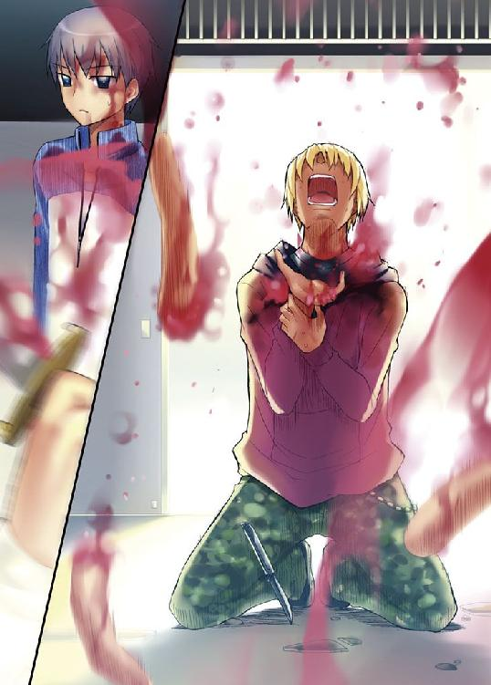
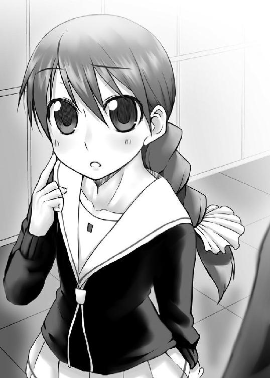
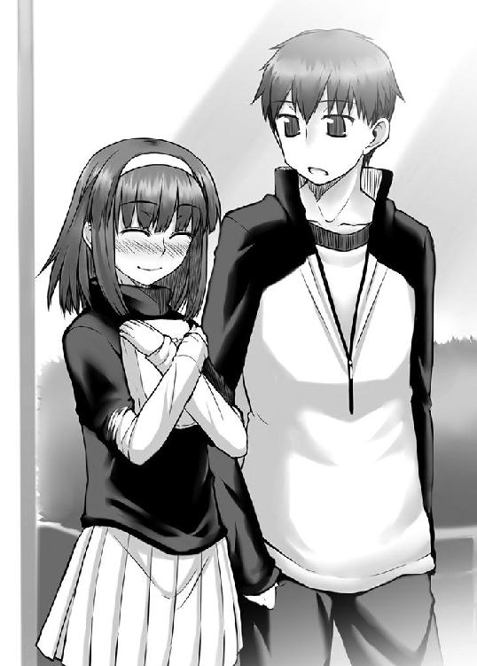

| 死なない男に恋した少女 (ＨＪ文庫) | |
| 空埜一樹 | |
| (2008) | |

「乃出狗斗ッ！」
ぶっちゃけた話が、オレはピンチというやつだった。
周りは数人のそれと分かる男たちに囲まれている。それというのはアレということであり、アレというのはつまるところ簡単にありていに言ってチンピラである。
彼らはなんでもオレが近ごろ生意気だということで集団暴行に講じる手段に出たらしく、放課後に拉致され人気のない廃工場まで連れて来られてしまった。そして今現在、みんな揃いも揃って手に手に木刀やら釘バットやらゴルフクラブやら鉄パイプやらを握り、仲良く円を描くようにしてオレを圧迫している。その目は血走り歯はぎりぎりと食い縛られ、まるで飢えた獣のように堪えようのない感情をむき出しにしている。
完全に殺す気満々である。
「あー。諸君、まあ落ち着けよ」
オレはとりあえずいきり立った彼らを諌めることにした。人間と獣の間に線を引く唯一にして絶対の能力は、言葉をしゃべることだろう？
「黙れ！」
いきなり封じられた。ダーウィンの立場がない。
「まあまあ。そう言わずにオレの話を少しばかり聞いてくれよ。とりあえず基本的なことから訊くけど......、
オレが一体なにをしたって言うんだ？」
「うるせえ！ この状況をよく見やがれ！」
名も知らぬ不良Ａが手を振って吼えた。言われた通りにオレは周囲を見回す。なるほど、埃の溜まったコンクリート製の床にはばたばたと、それはもうばたばたと、オレに絡んできた不良たちが倒れている。その様はさながら築地のマグロ売り場のようだ。こいつらならキロマイナス五千円といったところだろうが。
「ここまでやっておきやがって、ふざけたことを抜かしてるんじゃねえ！」
怒り猛り狂う不良Ａ。つまり彼はこう言いたいわけだ。これだけ仲間をぼろぼろにしておいて、今更何を抜かしてやがるコンコンチキめ、と。コンコンチキは少し古いか。とにかく、しかし、彼の言葉には少々語弊がある。まず最初、喧嘩をふっかけてきたのはそちらであること。その結果こうなってしまったのであれば、『何かをした』のは彼らの方であり、オレに『これまでのことをやっておいて』と言うのは責任転嫁もいいところだ。後、オレの疑問にも正確な意味で答えていない。
最後に、こればかりは重要なことなのだが、基本的に『オレは何もやっていない』ということだ。
「おいおい、何言ってんだ。お前らは勝手にこっちに殴りかかってきて、」
そして勝手に倒れただけだろう。
そう。
「──オレを殴り疲れて」
グロッキーになった、そうだろ？
オレは反撃すらしていないじゃないか。
「な、オレが悪いわけじゃない。お前らが弱過ぎるんだよ」
「てめえが頑丈過ぎるんだろうが、くそがっ！ 化け物かてめえ！」
不良Ａが吐き捨てると、隣に立っていた不良Ｂが彼に囁きかけた。
「なあ、やんぼう、やばいんじゃねえか。こいつ......ほら、あの噂」
「やんぼうって言うな！ それに、バカかてめえは。あんな話、吹かしに決まってんじゃねえか！」
不良Ａ、いや、やんぼうの台詞にオレは片眉を上げた。どんな噂かは知らないが、恐らくろくなものではないだろう。
「なあやんぼう」
「だからやんぼうって言うな！」
「もしかしてその噂ってのはあれか？ オレが──」
首を傾げて、言った。
「──オレが、【死なない】ってやつ」
不良どもの顔色が変わった。本人の口から出たことで『まさか』は『もしかしたら』に格上げされたのだろう。もっと踏み込めば『なんてこった』になるかもしれない。
これでビビって逃げてくれれば万々歳といったところだったのだが、どうやらそうもいかないらしい。逆に彼らの犬の餌ほどの価値もないプライドに作用したのか、やんぼうが奇妙な笑みを浮かべて足を踏み出した。
「......へ、へへ。まさかな。そんなことはねえよ。よ、よし、オレが確かめてやる」
そう言って、やんぼうは懐から完全に銃刀法違反なナイフを取り出した。危険な男だ。
「や、やめろよ、やんぼう！」
「そうだぜ、嘘だったらどうすんだ。人殺しは嫌だぜ、やんぼう！」
「よせってやんぼう！」
「まじかよやんぼう！」
「思いとどまれよやんぼう！」
「うるせえだからやんぼうって言うな！ 後お前もどさくさ紛れに呼ぶな！」
バレた。
「......やれやれ」
オレは嘆息して頭を掻いた。やんぼうは仲間が不安げに見守る中、ごくりと喉を鳴らす。
「よし──」
そして一気に、
「死ねぇ、乃出狗斗ぉッ！」
世界で一番嫌いなオレの名前を叫んで走り出した。やんぼうとオレの距離はあっという間に縮まる。意外に足が速い。普段は陸上部か何かに属しているのかもしれない。オレは動かない。緊張からか充血した目をしたやんぼうが、ナイフを構えて突っ込んでくる。
そして懐に入り込んできて──
刺した。
真っ直ぐと突き出されたナイフの刃先は、疑うこともなく深々とオレの胸へ刺さっていた。やんぼうは手を離し、震えた声で「や、やった、やった......！」と言いながら、後ずさっていった。
オレはゆっくりと倒れていく自分の体を知った。やがて背中が硬い床に当たり、一瞬わずかに跳ねた後、オレは完全にその場へ仰向けになった。
「へ、へへ、か、簡単じゃねえか。ざまぁねえな！」
思い切った行動をとれたことで自尊心を満足させたのか、やんぼうは嬉しそうに両手を上げた。
「き、気に入らなかったんだ、前から。このあたりの高校を全部シめてる癖しやがって、普通の野郎みたいに暮らしやがって。喧嘩も自分から絶対手を出さないっていう、その調子乗ったやり方も気に入らねえ。で、でも大したことなかったなあ。はは、はははは、ははははははは！」
............。
........................。
............さて、と。
「そろそろいいかな」
「なっ！」
オレは体を起こし、曲げた膝に手をつくと立ち上がった。結構痛かったが、耐えられないほどではない。
「満足したか？」
尋ねたオレをゾンビでも見るような顔で見てくるやんぼう、以下不良たち。まあ、彼らからすれば同じようなものか。
オレはつまらなさそうに言った。
「言っただろ？」
手で胸に突き刺さったままのナイフの柄を握る。あっさりとそれを引き抜くと、傷口から血が噴き出した。だがそれもすぐに治まっていく。
「オレは、」
放り投げたナイフが宙に弧を描き、軽い音を立てながら床に転がった。それを足で踏みつけて、片口を上げる。
「絶対に、死なねぇ──んだよ」
飛び降り三十二回。毒物服用十五回。動脈裂傷四十五回。首吊り二十五回。ガス吸引十三回。
この数字を聞いた人間は、みな一様にして怪訝な顔をする。「それ、なんの数？」オレはすぐさま正解をくれてやる。
これはオレの死の記録だ。
十七年という短い生の中で、オレが自殺をしようとした回数は細かいものも入れれば百をゆうに超える。
そしてそれは同時に、オレに備わったある特殊的な能力を立証するために労した手段の数とも言えた。
そう、なんの臆面もなく言ってしまえばオレは『不死身』だ。
だが、生まれてから今までで適当に老けていっているのを見ると、どうやら『不老』というわけではないらしい。多分、八十かそこらまで生きればごく普通に大往生となるのだろう。
だがそれ以外では死なない。刺されようが、首を絞められようが、ガスを吸わされようが、高層ビルの屋上から突き落とされようが、毒薬を飲まされようが、オレの命が潰えることはない。
理由？ 知るか。そんなもん、オレが一番知りたい。
オレが自分の能力を知ったのは幼少の頃。皮肉にもこの世で一番憎む相手によってだった。
自分が死なないという事実を受け入れるのには時間がかかった。だからこそのこれほどの数。轢死はまだ経験していないのだがこれは恐らくやらないだろう。答えはただ単に人に迷惑がかかるからだ。後、電車を止めると確か賠償金やらなんやらを結構な額払わなくてはならないらしいと聞いた。それはともかくとして。
死を、望んでいるわけじゃない。
だが、死なないということは、自分が今生きていることの証明が出来ないということであるように思える。
もしかしたらオレは既に死んでいて、それが何かの拍子でこうして生きているように見せかけているのだというそんなありえない現象を、決して徹底的に否定できるわけじゃない。
オレが喧嘩で自分から手を出さないというのもこのためだ。一番根本的なところが曖昧な以上、殴る蹴るだけではなく、何をしていたとしてもまるで実感が伴わないのだ。やる気だって起きやしない。自分が本当に己の意思で生きているのだという確信が出来ない以上、仕方のないことなのかもしれない。
「......あ、やべ」
つらつらと色々なことを考えながら帰っていたオレは、自宅の前で足を止めた。居間に明かりが灯っていたからだ。
「なんでこんな時に限って帰ってきてるかな......」
オレは自分の体を見下ろして状態を確かめた。不良どもに好き放題やられた跡はすっかりなくなっている。常人より傷の治りが早いのもオレの能力の一つだ。あるいは不死の付加要素なのかもしれないが、それはともかく。
散々引っ張られたり、破かれたりしたので制服がボロボロなのはまずい。こればかりは回復しようがないからだ。
見つからないといいんだが。
オレはできるだけ物音を立てないようにして玄関の戸を開けると、慎重に靴を脱ぎ、こそこそと忍び足で二階に上がろうとした。
居間からはバラエティだろうか、テレビからのものだと思われる笑い声が漏れ聞こえていた。......よし、どうにか今のところは気付かれていない。
そう思った直後だった。靴箱の上に置かれていた、恐らくは死角に入っていたのだろう、クマのぬいぐるみがオレの体に当たって床に落ちた。それ自体はどうということでもなかった。が、そのクマのぬいぐるみ（ベア沢くん）は衝撃に反応して内蔵されたテープが喋りだす大人気トーキングクマさんシリーズだったのである。
『おっはよー、ぼく、ベアくん！ 今日の朝は、ハチミツかな!?』
シャケでも獲ってろこの肉食獣がッ！
「......狗斗？」
ファック！ オレはクマのぬいぐるみ（ベア沢くん）を蹴っ飛ばした。壁に当たり、ベア沢くんは叫ぶ。『ぼくの友達は、ミニピッグのベーコンくんさ！』
「狗斗？ 帰ってきてるの？」
椅子を引く音がして、居間へ続く入り口にかかった暖簾を、手が払った。中から顔を覗かせて、彼女は言った。
「なんだ、帰ってるならただいまくらい言いなさいよ、味気ない子ね」
「......ただいま、姉さん」
オレは、二十五歳というにはいささか童顔過ぎて十代にしか見えない自分の姉、雪華に挨拶した。長い黒髪を後ろで縛って垂らしており、いつも通り、タンクトップにジーンズというラフな格好だった。
「仕事はどうしたんだよ」
「たまには早く帰ってくるわよ。なに、不満なの？」
「別にそうじゃないけど......」
オレは姉さんが怪訝な顔をしている間に、じりじりと蟹歩きで階段へと進んでいった。ばれませんようにばれませんようにばれませんようにばれま、
「あーっ！」
「ぎゃー！」
姉さんはオレの不審な様子を不思議そうに見ていたが、突然大口を開けて指を差し、そして徐々に眉と目を吊り上げて般若のような顔になった。
「あんたぁ──ッ！」
「ご、ごめんなさい！」
ずかずかと近寄ってくると姉さんはオレの肩を掴んだ。そして真正面から睨みつける。
「また喧嘩したでしょう！」
「し、してません」
「今ごめんって言ったじゃないの！」
「鬼のような形相でこちらへ向かって突進してくる存在にとった防衛本能だと思ってもらえれば」
「だったらこの服はなんなの、ボロボロじゃない！」
姉さんは逸らそうとしたオレの顔を両手で強く掴むと、ぐっと無理やりに前を向かせた。終わった。これから二時間は説教だ。後多分、オレの小遣いから制服代が支払われるだろう。グッバイ、来月に買おうと思っていた色々な物たち。アディオス、オレの豪勢な昼ごはん。そしてフォーエバー、夢と希望。
「あんたねえ、ただでさえ面悪いんだから、大人しくしてなさいって言ってるでしょう！」
「オレは慎ましく生きてるよ。あっちから仕掛けてくるんだ。それより面悪いは余計じゃない？」
「そういうのはね、無視すればいいの！ 会ったら目を逸らして、自分は空気だと思えば丸く収まるのよ！」
「やだよ、情けない」
「殴られるよりマシでしょうが！ 大体、あたしのメンツも考えなさいよ！ 刑事の弟がこうしょっちゅう喧嘩していたんじゃ、立場がないじゃない！」
姉さんはオレが住んでいる街、明答市の所轄、明答署に勤めている。部署は生活安全課だそうだから、確かにその弟が毎日のように殴り合いに興じていたら面目立たないことだろう。
だが姉さんは本心から自分の保身を考えてオレを叱っているのではない。下手にオレのことを注意するより、それで自分に迷惑がかかると言った方が、オレが反省をするということを知っているのだ。姉さんの策略に乗るのも悔しいが、実際としてその言葉はかなり効く。オレはうなだれて言った。
「......ごめん」
声が真剣だったのが分かったのか、姉さんは相貌を崩した。「......まったく、もう」と嘆息する。
「あんたが『そう』だってことは知ってるけど、だからって怪我してもいいってことにはならないんだからね。あんまり心配させないでよ」
「分かった。ごめん」
オレの能力を知った二番目の人間は姉さんだ。そしてそれは、オレと姉さんが親許を離れて暮らす要因にもなった。そのせいか、オレは姉さんに迷惑をかけることを最も恐れている。姉さんはオレが本当に反省したのを見て、組んでいた腕をほどき、笑顔になった。
「分かったならもういいよ。一緒にごはん食べよ」
「珍しいな。なに？ なに弁当？」
「......あたしがご飯を用意する、イコールでコンビニ弁当だっていう、あんたのその思考が本当に腹立つわ」
だって普段、仕事で帰りが遅いあんたの代わりに、家事全般はオレが担ってるじゃないか。
「あたしだって料理くらいできるんだから。あんまりなめないでよね」
「なに作ったの」
「卵焼きでしょ、ブリの照り焼きでしょ、それに、なめこのおみそ汁！」
「まじで？」
「──の、予定だった」
そして姉さんは小さく言った。「......で、机の上にあるのは、デラックスカツ弁当」
「オレ、大好きだよ、コンビニ弁当」
「うれしい。棒読みで言ってくれなかったらもっとうれしかった」
そいつは無理な相談だ。
「神の奇跡がごとき所業の実現を期待した、オレの身にもなってくれ」
「大きな期待は叶えられなかった時同じだけの大きさの絶望に変わるもんよ。さ、早く食べよ」
「りょーかい」
「で、食べたらお説教ね」
「......了解」
オレは暗澹として言った。
『──公園では恒例となったメダカの放流が行われ、小さなメダカを川に放す親子の姿で賑わいました』
テレビはどうでもいい地方ニュースを垂れ流していた。姉さんはそんな番組を観ながら食後の番茶を啜っている。
そしてオレは死んでいた。......まさか本当に二時間きっちり叱られるとは。
『○×市△□署に勤める巡査部長が部下の女性警察官に対し、二年に亘って胸を触るなどの性的な嫌がらせを繰り返していたことが、本人の通報により明らかになり──』
「世の中腐ってるわねー」
オレの心も腐っていきそうなんですけど。
「あんたは多少腐敗してるくらいが丁度いいのよ」
オレはチーズか。
『......では、次のニュースです』
不意に、それまでぬるいニュースを読み上げていたキャスターの声色が変わった。かすかな緊張を孕み、調子も硬化する。
『本日未明、××県明答市の路上において、男性の刺殺死体が巡回中の警察官によって発見されました』
姉さんの湯飲みを持つ手が止まった。オレも顔を上げる。言い方は悪いが、近ごろ殺人事件などそう珍しいものではない。だが、現場が地元であるのならば話は別だ。
場面が変わり、交差点が映し出された。周りにある建物から、どうやらここからそう遠くない場所のようだと分かる。
「物騒だな」
『男性は刃物のようなもので体を数箇所刺されており、胸に大きな十字傷があることから、警察ではこれを現在日本各地で起こっている連続殺人事件に関連するものと見て捜査を続けています』
「十字......。例の殺人鬼ね」
姉さんの呟きに、オレは無言で頷いた。
十字傷の切り裂き魔──
そいつは数年前の地方都市で起こった殺人事件を皮切りに、次々と犯行を繰り返している殺人鬼の名称だった。
奇妙なことに事件は一つ所に留まらず、ある一定の期間を置いて別の場所へと移っている。これまでに、南は九州から北は秋田まで、幅広い地方でそいつは殺人を続けていた。
そのため警察側でも当初は連続したものであると考えられはしなかったが、犯人が必ず殺害時に遺体へ十字型の傷を残していることから、これは同一の人物による犯行ではないのかという考えが当局に浮かび上がってきた。
ただこれまで前例のないその犯行に、警察内部でも疑問視する声が上がっているらしい。今までに行われてきた全ての事件が個人のものなのか、それとも複数によるものなのか、あるいは単なる模倣犯によるものなのかさえも分かっておらず、捜査は難航しているらしい。
「でも同じ奴がやってるってのはどうにも嘘くさいよな。普通に生活している以上、そんなこと出来ないだろ」
「だからこっちでも処理に困ってんのよ。って、他人事じゃないか。多分、捜査本部置かれるでしょうね。県警の奴らってどうも好きになれないのよねえ」
皺の寄った眉間を押さえてため息をつく姉さん。
「犯人の姿とか分かってないのか？」
「それはまあ、プロファイリングなんかでそれなりに判明はしているみたいだけどね。犯行時間が決まって深夜近くだから、昼間は普通に働いている人なんじゃないかとか」
「ああ、【午前零時の殺人鬼】か」
十字傷の切り裂き魔が一般通称的なものであるならば、【午前零時の殺人鬼】は一部の人間の間で有名な呼称だ。一部とはつまり、インターネット等のオンライン的世界に属する者たちのことである。世間でもかなり話題になっているこの事件は情報が広まりやすく遠慮の要らないネット上でもかなりの規模で話題になっており、誰がつけたのか、犯行が必ず深夜に行われているということから、犯人にはこんな名前がつけられていた。
「そうそう。後、自己顕示欲が強いんじゃないのかとか、意外と若いんじゃないかとか──って、こら」
「なんだよ」
「内部情報ぺらぺらしゃべっちゃったじゃない。どうしてくれるのよ」
「オレのせいかよ......」
殺人事件に関する報道はそれだけで、すぐに終わってしまった。公開できる情報もそれほど集まっていないというのが現状なのだろう。姉さんは生活安全課、それも少年犯罪担当だから関係ないと言えば関係ないが、それでもなんやかんやで遅くなる日が続きそうだ。疲れがとれるようなメニューを考えないとな、と嫌になるくらい家庭的になってしまったオレの頭が巡り出したその時だった。
『......では次のニュースです。○×市に住む鈴原茜ちゃん四歳が、母親から度重なる暴力を受けて死亡していたことが、近隣住民による通報により明らかになりました』
一瞬にしてオレと姉さんの間における和やか食後ムードな空気が重くなった。......ちくしょう。気まずい。
『茜ちゃんは数ヶ月に亘って母親から暴力を受け、食事も満足に与えられていない状態でした。死体には殴られたような傷の他、火傷の痕なども見られ、警察では逮捕された茜ちゃんの母親、鈴原彩音容疑者について取調べを続けています』
姉さんは平静な態度で茶を飲んでいる。だが、よく見れば分かる。その手は小刻みに震え、目は鋭く尖り、まるで画面内に当の母親がいるかのように強くテレビを睨みつけていた。
オレはリモコンをとると、電源スイッチを押した。気の抜けたような音と共に画面がブラックアウトする。場には静寂が流れた。
「......ちょっとコンビニ行ってくる」
そう言い残し、オレは椅子から立ち上がった。
姉さんは何も言わず、消えたテレビをずっと見ていた。
オレはいってきますを言おうかどうか迷って、結局やめた。
月が出ていた。夜が裂けているかのような三日月だった。オレは適当に買ったジュースやお菓子を詰めたビニール袋を提げながら、暗い空を見上げ、出来るだけ帰りが遅くなるようにだらだらと歩いていた。
息をつく。春とは言えど季節はまだ冬を引きずっていて、白く濁った空気が闇に溶けた。
先ほどのニュースを思い出して、すぐに不快になって首を振る。嫌な思い出が脳裏に蘇った。大抵の場合、物心がつく前の記憶など歳を経るごとに薄れ、やがては消え去っていくものだが、オレの場合はそうもいかない。忘れられたらどんなに楽か、と思う。
......幼い頃、オレは父親に暴力を受けていた。
原因はオレにある。少なくとも、父親はそう思っていたようだった。
母親は、オレを産んで間もなく亡くなった。オレの母親を、つまり自分の妻を深く愛していた父親は、それ以来すっかりおかしくなってしまった。仕事を辞め、酒を飲み、外にも出なくなった。そしてある時から、オレに度々暴力を振るうようになった。オレの異質な能力が判明したのはその時である。父親の、オレに対する暴行は度を越していた。殴る蹴るなど当たり前。ライターや煙草で肌を焼かれることなど日常茶飯事。時には家にあった木刀（笑えることにそれはオレが姉さんにねだって買ってもらったものだった）でオレを何度も打ち付けた。それこそ出血するほど強く、骨が折れるほど恨みをこめて。当時姉さんはまだ小さく、オレをかばいきることは不可能だった。それでも必死でオレを護ろうと父親の前に立った姉さんの姿を、オレはまだ覚えている。
だがどれだけ父親に虐待されようと、オレは平気だった。当然ながらその時は痛く、傷も負う。しかし、それもすぐに治癒し、やがてはその痕さえ残らなくなってしまうのだ。それが父親は気に入らなかった。同時にオレを恐れる感情が、彼には生まれていった。
いつしか父親は、母親が死んだのは、オレのような化け物を産んでしまったからだと言うようになった。それはあるいは、現実逃避のようなものだったのかもしれない。それでも父親にとって、それはオレを痛めつける正当な理由のようだった。
オレに対する暴力は日を追って悪化していった。屋上から落とされる。包丁で何度も刺される。焚き火の中に投げ込まれる。風呂に沈められる。煙草を無理やりに食わされる。夜寝ていると、首を絞められることもあった。
だが、それでもオレは死ななかった。それが、父親の逆上を誘う原因となった。以後、十年以上に亘ってオレは父親からそういった行為を受け続けてきた。よく狂わなかったなと自分でも感心する。いや、実際としてオレはもう発狂しているのかもしれない。自覚したことはない、が、そもそも狂人が自分を狂人だと思っていたらそれはもう狂人ではないとか、なんとか。まあ、それはいいとして。
姉さんは警察学校を卒業し、明答署に配属されるや否や、オレを連れて家を出た。母親が遺した貯金と父親の退職金はとっくに底をつき、姉さんがアルバイトをしてオレを養っていたようなものだったから、父親はこれから先苦労するだろうが、生憎とそんなことを気に出来る余裕はなかったし、オレも姉さんもそこまで善人ではなかった。
そして、結果的に今オレは、平穏な日々を過ごしている。たまに今日のように喧嘩に巻き込まれるのは鬱陶しいと言えば鬱陶しいが、父親に比べれば不良どもなどとるに足らない存在だった。
だが、うちでは虐待に関する話題はタブー中のタブーとなっている。何かの拍子で、あるいはテレビなどでそうした事件が報道される度、姉さんは塞ぎこんでしまう。多分、十年もの間オレが父親にいいようにされるのを見ていることしか出来なかったことが、姉さんにとって一種のトラウマになっているのだと思う。オレからすれば、あの地獄から抜け出すことが出来ただけで、姉さんには感謝の気持ちで一杯なのだが。
とにかく──何が言いたいのかというと、帰宅するのが非常に億劫だということだ。基本的に明るく過ごしたいオレにとって、あの絶妙に耐え難い空気は勘弁して欲しいわけである。
「公園でも行くか......」
なんとなく思った。姉さんがあの状態になると、一時間は機嫌が悪くなる。まだ少しかかりそうだ。
足先を変えて、近所の児童公園に行くことにした。後二十分くらいだ。ぼーっとするのは好きだから、何もせずに過ごすのにそう辛い時間ではない。
しばらく歩くと、滑り台にブランコ、後はジャングルジムくらいしかない、明らかに税金対策で作ったとしか思えないような明答公園が見えてきた。
......そこで、オレはふと足を止めた。なにか音が聞こえる。柔らかい物に硬い物を刺した時のような、そんな奇妙な音が。それも何度も。何度も何度もだ。誰かいるのか......？
不審なものを感じたが、好奇心の方がわずかに打ち勝った。オレは歩を進める。明滅する街灯に照らされて、公園内が不気味に夜に浮かび上がる。
入り口辺りに差し掛かって、オレは地面に誰かが座っているのを見た。そう広くもない公園内の中央付近に、小さな人影がある。どうやらその音は、その人物が立てているものらしい。ぐしゃ、というか。どちゃ、というか。どうにも表現しにくい。でも聞いていてあまり気持ちのいいものではないことは確かだった。
そいつはどうやら女の子のようだった。歳は......恐らくオレと同じくらい。夜闇に溶け込むような黒髪をセミロングにしている。分厚いコートを着ているのかと思ったが、どうやら彼女は、レインコートを羽織っているらしいということに気付いた。レインコート......こんなに晴れているのに？
彼女は手を振り、一心不乱に何かを──何かを──
何かを、刺している？
オレは息を呑む。
彼女は、一人ではなかった。
近づくまで、陰に隠れて見えなかった。
彼女は座っているのではなかった。
──倒れた誰かの体に馬乗りになり、そして何かを刺しているのだ。
やばい──と本能的に悟った。時々、はっきりとは分からないが、匂いのようなものを感じる時がある。例えば駅前にたむろしている不良ども。例えば不自然なまでに周囲を気にしている奴ら。なにか、関わらない方がいいことが起こる前に漂う、独特の『匂い』。そいつがぷんぷんした。これ以上進まない方がいい。オレの中の何かが、そう強く告げていた。オレは逃げるために、一歩足を退いた。
がしゃん、という音がした。オレは体をすくませて、右手を見る。くそったれ！ 店員の入れ方が悪かったのか、ビニール袋が破けて中身がこぼれ落ちていた。買ったばかりの缶コーヒーが転がっていく。あのデブ、アイスコーヒーと肉まんを一緒の袋に入れている時点で何かやらかすと思ってたんだ！ おかげで最悪な状況だ！
「............」
オレはその場に縫い付けられたように固まった。
少女が手を止めて、ゆらりと立ち上がったからだ。
腕を振る。照明の鈍い光の中、赤い血が散った。......いいか、もう一度言うぞ。オレは自分に向かって繰り返した。
赤い血が、散ったんだ。
少女が、くるりと、振り返る。
怖気が走るとはこのことだろう。
光と影、丁度半分で色分けられた少女の顔は血塗れだった。いや、顔だけではない。そこでオレは初めて彼女がどうしてレインコートを着ていたのかが分かった。返り血だ。腕も体も足も、全てが赤く染まっていた。そしてその手には、やはり血に濡れた大振りのナイフが握られている。
少女の下で突っ伏しているのは男だった。
いや──正確には、男だった、ただの肉の塊だった。
遠目で分かるほど派手にやられていた。全身を何度も刺されている。そしてオレは確かに見た。
男の胸に刻まれた、大きな十字の傷を。
「──午前零時の......殺人鬼」
衝撃が記憶中枢を刺激して、そんなことをしている場合でもないのに、オレは携帯の時計表示を見た。時刻は十時半。話が違うじゃねえか！
迂闊だった、としか言いようがない。事件が起こったのは明答市。犯人がまだこの街にいてもおかしくはない。だがオレは、どこか、遠い場所で起こったことのように考えていた。
やばい──逃げろ。全身の細胞が訴えかけてきた。逃げろ。逃げろ。逃げろ。逃げろ。逃げろ逃げろ逃げろ逃げろ逃げろ逃げろ逃げろ逃げろ逃げろ逃げろ逃げろ！ サイレンみたいに同じ言葉がオレの頭の中を回った。いくら死なないといっても痛覚はあるのだ。あんな風に自分の体を滅茶苦茶にされてはたまったものではない。急げ。急げ急げ急げ急げ急げ急げ、
急げ！
「っ！」
オレは振り返ると同時、全速力で駆け出そうと足を踏み出した。
どす、という音が響いた。
「な......」
硬直する。嘘だろ？
オレは顔だけを後ろへ向けた。そして見てしまった。
すぐ背後に立ち、オレの腰に深々とナイフを突き刺す殺人鬼の姿を。人間業じゃない。どれだけ距離があったと思ってるんだ！
殺人鬼はナイフを抜いた。熱い感触と共に血が流れ出す。オレは膝をつきそうになったが、どうにか耐えた。だが、無駄な努力だった。
殺人鬼がオレの肩を掴む。抵抗しようと身をよじるが、女とは思えないほどの力で、強引に前を向かされた。正面で向き合う血塗れの顔。悲鳴が出なかったのが奇跡だ。同時に、さっき刺された場所に衝撃を受けた。思わず苦鳴を漏らして、オレはよろめく。こいつ、蹴りくれやがった！
体がバランスを崩し、後ろへ倒れていく。殺人鬼は飛び上がると、オレが地面に仰向けになるのと同時に上に乗った。片手で腕を押さえて動きを拘束し、両膝でがっちりオレの体を固定する。オレが殺人鬼を見上げる格好となった。丁度、騎乗位の状態だ。全然うれしくねえ！
そして、殺人鬼はナイフを持った手を振り上げた。
──刺す。
刺す刺す刺す刺す刺す刺す刺す刺す刺す刺す刺す刺す刺す刺す刺す刺す刺す刺す刺す刺す。
オレの肉が鋭い厚い刃によって抉られていく。何度も何度も何度も何度も何度も何度も何度も、しつこいくらい殺人鬼は繰り返してオレを刺した。その度に血が舞い、虚空にある月を汚した。
殺人鬼の顔は、楽しそうに、可笑しそうに嗤っていた。まるで玩具を与えられた子どものように。
その姿は、オレの父親を彷彿とさせた。あいつもオレを刺すとき、こんな顔をしていた。暴力にしか生きる意義を見出せなくなった人間だけが、こういう風に壊れた嗤いを浮かべやがる。痛みで気が遠くなるが、オレの体は常人よりそういったものに対して耐性がある。恐らくはショック死しないだろうと踏んでいるが──今ほど自分の能力を恨めしく思ったことはない。考えてもみろ。気絶することも出来ず、自分の体が刻まれていくのを見ていなきゃならないんだぞ。どんな拷問より恐ろしい。
ひとしきり刺殺ショーを楽しんだ殺人鬼は、ふとその手を止めた。もう解放してもらえるのかと思ったが、そうではなく、殺人鬼は立ち上がると同時にオレの襟首を掴んで持ち上げた。照明が殺人鬼の顔を照らす。こうしてみると、その造り自体は整っていた。尖った顎のラインが鋭い目に似合っている。......何を言っているんだろうな、オレは。
「悪く思うな」
初めて殺人鬼が口を開いた。
「不可抗力だ」
手にもったナイフをくるりと回し、柄を握る。
そして、彼女は華麗な動きで素早く縦と横に刃を払った。その額に、多量の血が付着する。
今、恐らくオレの体には十字の傷が刻まれたのだろう。これでオレも、あの有名な『午前零時の殺人鬼』の犠牲者の一人だ。誇らしいね。くそったれが。なにが不可抗力だ！ 思いっきり楽しんでたじゃねえか！
「では──さよならだ」
高めのソプラノで歌うように言って、殺人鬼はオレを放した。
その最中──
「せめて、安らかにな」
突き出した手に握られたナイフが、オレの心臓を深く貫いた。
...........................。
と、普通の人間ならここで終わりを迎えるのだろう。人生のスタッフロール、結末は最悪のバッドエンド。オレが観客なら、舞台挨拶にきた監督にポップコーンでも投げつけてやるところだ。
だが生憎とオレは普通の人間じゃない。死んだ振りをして殺人鬼が去るのを待つと、そのまま家に帰った。姉さんが寝ていたのが幸いだった。見つかれば何を言われるか分かったものではない。そして服を着替えると、穴だらけになった私服を人知れず始末した。オレはファッションに頓着しない性質で同じようなものを何着ももっているから、恐らく姉さんも不審には思うまい。
そしてぐっすりと眠ると何事もなかったかのように朝を迎え、オレは勤労学生よろしく今現在、自宅から徒歩十五分という利便の良さだけで選んだ市立明答学園に登校しているわけだ。午前中の太陽はくすぶった光で世界を照らし、オレは多くの生徒と共に通学路を歩いている。我ながら大した根性だと思う。殺されかけた（正確には殺された）次の日にごく普通に学校へ行くとは。
オレは欠伸を噛み殺し、しかし意外だったなと考える。まさか殺人鬼がオレと推定同年代の女の子だったとは。やはりここは一般市民の義務として、そして刑事の姉さんを持つ立場としてはしかるべきところに通報するべきだろうか。そういえばあの殺された男、昨日は一刻も早く現場から逃げたい一心で見捨ててきてしまったが、一体どうなったのだろうか。少々罪悪感が残る。しかしまあ、オレがどうにかしなくてもあの男の死体を発見した奴なりが警察へ通報するだろう、と無責任なことを考えた。オレが父親に暴力を受けていた際、姉さんから何度も相談を受けていたにも拘わらず、ろくに動こうともしなかったらしいあのくそったれた組織を、オレはそれほど好きではなく、できれば関わり合いになりたくなかった。姉さんとしては、だからこそオレのような人間が生まれないよう、内部から変えていかなくてはとあえて敵陣に乗り込む考え方をとったらしいが。そこらへんの前向きさは素直に尊敬する。
だが、犯人を知っている以上はやはり姉さんにくらい話しておくべきだろう。殺された、ということは除けて話すとしても。面倒なことになっちまった。オレはやれやれと首を振った。
「募金、お願いしまーすっ！」
突然、朝から陰鬱な気分になったオレの鼓膜を刺激する明るい声が聞こえてきた。校門の前で何人かの生徒がダンボールで作った箱を持って通り過ぎる者に声をかけている。箱の切れ目に金を入れた奴の胸には、青い羽が刺さっていた。青い羽募金というやつか。早朝から元気だね。
こういった活動は大抵の場合、生徒会がその任を負うのだが、うちの場合は希望者を募り、完全なボランティアによって行われていた。しかし、ただでさえダルい朝に生徒より早く学校に来てしかも声を嗄らして叫ばなければならず、その結果得るものといったら名誉という目に見えない勲章のみというありがたい話なのだから、当然ながら我こそが我こそがと生徒が集う......わけがない。だが面白いことに、毎年、毎年、物好きが何人か名乗りを上げて参加しているというのだから、人間というのもまだまだ捨てたものではない。
オレもせめて少しばかりの協力をすべきかと制服のポケットから財布を取り出して、とぼしい小遣い（昨日の出来事でそれが更に減ることになったわけだが）から迷った結果五十円玉を取り出していると、元気一杯な声がした。
「あ、クギちゃんだ！」
オレは五十円玉を財布へ戻し、早急に場を立ち去ることにした。ぬかった。こういう場に必ずと言っていいほど存在する人物のことをすっかり失念していた。
「ちょっとちょっとクギちゃん、募金してくれないのかい？」
非難じみた視線を送る生徒たちから逃れるようにして校門へ入ろうとしたオレの前に、一人の女子生徒が立ちはだかった。身長がオレより頭一つ、二つ分は低い、小柄な体の前に大きな箱を提げたその姿は、募金活動員というよりはサンタからプレゼントをもらったばかりの小学生だ。
三つ編みにした髪を一本後ろへ垂らすというやや変わったヘアデザインが特徴的なこいつの名は、久遠りん。成績は普通、運動神経はやや悪い、というどこにでもいるようなごく普通の女子高生だが、妙なところが二つある。
一つは極度のボランティア精神にあふれた奴であるということ。りんは募金に限らず、校区内の清掃やら介護センターでの老人の話し相手やら、およそ人が面倒くさがるような奉仕活動に積極的に参加している。しかも内申書の点数を上げようだとか、先生受けをよくしようだとか、そういう打算的な考えではなく、純粋な善意からの行動だというのだから確かに異常だ。ようするに、根っからの善人なのだ、この女は。
そしてもう一つは、なぜだかオレに懐いてくるということ。
昨日、絡んできた連中のようにオレを狙う不良どもは大勢いる。それはオレが、この能力のせいで売られた喧嘩を全て無敗で通すうち、いつのまにか県下の高校を全てシメていることになってしまったからだ。そんなオレをこの学校の奴らはみんな恐がっている。当然の心理だと思うのだが、しかしこの久遠りんは、二年で同じクラスになってから妙にオレに親しげな態度で接してきた。最初は鬱陶しがっていたオレだが（そしてそれは今も継続中だが）今ではある程度の諦観を持って、話し相手くらいにはなってやっている。
「募金ってのは本人の善意からやるもんだろ。強制するもんじゃない」
「そうだけど、さっきからあんまりお金が集まらなくて困ってるのさ。一円でも十円でもいいから入れてってよ」
「今更オレが十円入れたってどうなるもんでもない」
「みんながそういう考えをするから集まらないんじゃないか！」
もっともな話だ。オレは嘆息すると、財布を出し、先ほどしまった五十円玉を取り出した。そこで少し迷い、しばし唸ると、硬貨を戻す。
「あ、なんだよー。一度やろうとして止めるな」
「そこまでダサくねえよ」
オレは百円玉を摘まみ出すと、久遠りんのプレゼント箱、ならぬ募金箱に投入してやった。
「ほらよ」
「おお！ へへ、毎度あり。さすがクギちゃん、いい男だね！」
うれしそうに笑うりんの顔を見て、オレはわずかに苦笑した。オレは自分の名前を呼ばれるのが嫌いだ。明らかに親父の悪意がこもったそれが他人の口に上る度、自分が望まれずに生まれてきたのだということを再認識させられるからだ。だって狗斗だぜ。まともな親がつける名前じゃない。でも、姉さんとりんだけは別だ。姉さんは言わずもがなだが、こいつに関してはなんだか呼ばれても不快感がない。貴重な人材だとつくづく思う。
「そういえば、クギちゃん知ってる？」
始業時間までまだいくらか余裕があった。オレは立ち止まってりんの話に付き合ってやることにする。
「なにを」
りんはオレに近づいた。そして背を伸ばして手を口に当てるので、オレは体を傾げて耳を寄せた。りんが秘密ごとを話すようにして囁く。
「......この近くで、殺人事件があったんだって」
オレは思わず、「ぶふぉっ」と口から変な音を出してしまった。
「ぎゃあ！ クギちゃんのツバが！ ツバがあたしの顔に！ 汚くなった！」
「あ、ああ、悪い。まあ、そんなに変わらないから安心しろ」
「ひどい!?」
ティッシュを取り出して渡すと、りんは頬を膨らませながら顔を拭いた。
「そりゃ驚いたのは分かるけど、なにもそこまで大きなリアクションとらなくても......」
「......ははは」
まさかその事件を目撃していましたなどとは言えない。りんは続けた。
「公園で男の人が殺されてたらしいんだけど......。なんか、あれらしいですよ。えーと、なんだっけ、十文字太郎の殺人記？」
「なんだその楽しそうな話は」
「じゃなくて、十文字殺法か」
とりあえず十文字から離れろ。
「あ、十字門太郎の放浪日記！」
原形すら留めてねえ。
「......十字傷の切り裂き魔、だろ」
「そう、それそれ！ そのなんとかさんの仕業らしいよ。物騒だねえ」
「そーだな。お前も襲われないように気をつけろよ」
「うん。クギちゃんもね。夜中にコンビニ行った帰りとかに、ばったり出くわさないようにね！」
「うわー、わらえねー、そのギャグ」
「ギャグ？」
「いや、なんでもない。了解。んじゃオレ、行くわ」
「うん。後でねー。あ、そうだ」
「まだなんかあるのか？」
りんは頷いて、先ほどの（彼女なりに）真剣な顔を一変、喜色満面として言った。
「今日、うちのクラスに転校生が来るんだって。先生が言ってた。楽しみだね！」
「転校生？ また中途半端な時期に来るもんだな。二年も終わりだってのに」
「なんかおうちの事情らしいよ。クギちゃん、仲良くしてあげるんですよ」
「お前がしてやれよ。オレはパス」
オレはりんの頭を軽くチョップすると、肩をすくめて教室へ向かった。
転校生というものはいつの時代でも多大な期待を背負わされるもので、やれ美人であるとか、やれ前の学校では秀才でならしていたとか、やれ巨乳だとか、やれ美脚だとか、いやイケメンだとか、モデルだったとか、ホームルーム前の教室では既にそういった根拠のない噂が広まっていた。
オレはといえばそりゃどうでもいいとは思っていなかったがみんなほど何かを願ったり望んでいたりしているわけではなく、まあ適当に普通の奴が来るんだろうなと考えていた。下手な希望を持つと後で絶望になった時のショックがでかい。って、これ、昨日誰かが言ってなかったっけ？
「どんな子かな、どんな子かな」
隣の席のりんがわくわくをとめられない様子で机を揺らしていた。平和な奴。まあ、日常にちょっとした楽しみを見つけることが人生を最後まで有意義に過ごすことの秘訣かもしれない。
「そうだな。適度にコミュニケーション力に優れ、適度にみんなと話を合わせることが出来て、適度に勉強が出来て、適度に運動神経がよく、数週間もすれば何年も前からこの学校にいたようにクラスに同化してしまう。そんな奴が来るだろう」
「クギちゃん夢がない」
「現実を見据えていると言ってくれ」
実際、世の中そんなに都合よく回ってはいない。転校生が天才だとか、巨乳だとか、超能力者だとか異星人だとか未来人だとか、魔法使いだとか、戦闘民族だとか、美少女戦士だとか、そんなものは漫画か映画だけの話だ。
衝撃的な出会いなんて生きている間に一度か二度あれば充分だろう。中にはそれさえもなく、雑誌の星占いや恋愛映画を観て運命の相手に焦がれている間に気付けば結婚適齢期を逃していました、という女や男なんぞそれこそごまんといるのだから。
扉が開いた。教室内のざわめきが静まる。
まず最初に二年の初めから今までまるで存在感というものがない担任が教壇に立った。
「えー。もうみんな知っているかもしれないが、この度、うちのクラスに転校生が来ることになった」
お決まりの文句に誰もが身を乗り出した。担任は眼鏡のズレを直し、演出のつもりか一瞬の間を作る。そして入り口に向かって言った。
「入りなさい」
オレは机に片肘をつき、盛り上がりが最高潮になっているクラスの中で一人冷めていた。そういえばあの殺人鬼もオレと同じように普段は学校へ通っているのだろうか。案外と優等生であったりするのかもしれない。よくテレビのニュースで犯人のことを『とてもあんなことをするような人には見えませんでした』だのというコメントをしている人を見るが、あれが本当なら、昨日オレが言った『狂気を自覚している狂人』というのは実在しているのかもしれない。そいつらはきっと、おはようございますと笑顔で挨拶する隣人を、一緒に帰ろうと誘ってくる友達を、常にどう殺そうか考えているのだろう。誰に疑われることのない微笑を携えて。ぞっとしない話だ。
「クギちゃん、来たよ」
りんの声で我に返った。考えに没頭しているうち、転校生は教室に入ってきたようだ。オレは虚空に這わせていた視線を、前方へ戻した。
「桐崎恭子です」
......そしてそのまま、オレは固まった。
「父の仕事でこちらに引っ越して来ました。みなさん、仲良くして下さいね」
基本的には現実主義者なオレだ。運命など信じることはあまりない。だがこの時ばかりは違った。
そういった世界の大きな流れのようなものを恨み、これが夢か幻であることを強く願った。
「クギちゃん、可愛いね！ いいなあ、上品そうだし、お金持ちの子なのかなあ。............クギちゃん？ どうしたの？」
りんがなにかを言っているがよく聞こえない。それほどオレは動揺していた。
『彼女』がすっとクラスを見渡す。
そして、オレとばっちり目が合った。
「............」
『彼女』もまた、動きを止めた。
「............」
「............」
オレと『彼女』は、約数十秒間、視線を交差させたままだった。
「......どうした、桐崎。なにかあったのか？」
担任の声にはっとして、『彼女』は目をしばたたかせた。
「......、いえ。なんでもありませんわ」
落ち着いた声でそう告げると、担任はうなずき、教室の隅の席を指差した。
「じゃあ、そっちに座りなさい」
『彼女』は首肯して歩き出す。その優雅な足並みに誰もがほうと息をついた。清楚という文字が形をとって動き出したようなその振る舞いは、だが決して嫌味ではなくどこまでも自然だ。
だからオレは疑いを持った。
本当にお前なのか？ と。
『彼女』は自分の席につく際、オレの横を通り過ぎた。
その時、『彼女』は、オレのみに聞こえるような声でそっと呟いた。
「......昼休みに体育館の裏まで来い。逃げるなよ」
全身の筋肉が収縮する気がした。言葉が刃物のように体へ突き刺さる。オレは、緊張に喉を鳴らした。
オレは、席に座ると同時に周りから話しかけられている、深窓の令嬢ばりの『上品な転校生』を見た。
間違いない。
「なんでお前がここにいるんだ......？」
オレの疑問に答える者はおらず、ただ空中に溶けていった。
唯一に正解を知る女──
【午前零時の殺人鬼】は、ただ穏やかに、微笑んでいた。
昼休み。
普段なら弁当を食って残りの時間は寝て過ごすオレだが、さすがに今日ばかりはそうした予定調和を覆さざるを得なかった。
じめついた空気の漂う薄暗い体育館裏に人気はない。
桐崎恭子はまだ来ていなかった。普通なら人を呼んでおいて、と怒り出すところだが今日のところは安堵する。出会い頭にブスリということはなさそうだ。
オレは壁にもたれかかって腕を組むと、奴の目的について思案する。
普通に考えて一番可能性が高いのは警告だろう。もし自分のことをしゃべったらタダではすまない──と。だが、彼女の場合、恐らく自分の中ではオレはもう死んだものとなっていたはずだ。それなのに平然と生きてしかも自分が転校してきた先の学校に居たのだからまさしく筆舌にし難い衝撃であろう。もしかすればオレを他人の空似か何かだと思って、それを確かめるために呼んだのかもしれない。
しかし......と別の考えへシフトする。桐崎恭子は転校してきたと言っていた。父の仕事の都合で。本当だろうか？ オレは【午前零時の殺人鬼】の活動範囲を思い出していた。全国各地で犯行に及んでいることから、警察側でも犯人の全体像を浮かび上がらせるのに随分と苦労しているらしい。一体どんな奴で、なにをして、どうやって生活をしているのか？ だがもしも......もしも殺人鬼が学生で、【父の仕事の都合】であちこち転校し、その地方で殺人を犯し続けているのであれば？ つまり奴は見つからないように犯行場所を変えているのではなく、元々各地を転々とする生き方をしていたのだ。そう考えれば、奇妙な行動も説明がつくんじゃないか。
「待たせたな」
と、そこまで考えたところで声が聞こえた。視線を移す。......きやがった。
腕を組み、教室の時とは違って不敵極まりない笑みを浮かべる桐崎恭子がそこには立っていた。
「......オレは人を待たせる女は嫌いなんだ。じゃあな」
オレは颯爽と立ち去ろうとした。が、通り過ぎざま、桐崎はオレの腕をがっしりと掴んだ。
「逃げるな」
ぎゃふん。桐崎恭子は、つり上がり気味な目でオレの顔をじろじろと見る。そして言った。
「......本当にあの時殺した奴なのか？」
「人違いだよいやーなんのことか分かりませんなはははははじゃあそういうことでぼく帰ってドラゴンボール観なきゃ」
「逃げるなと言っているだろうが」
いたいいたいいたい！ 腕がぎしぎしいってる！ ぎしぎし！
「もう一度訊くぞ。あの時の奴なのか？」
「......もう一度言うぞ。ひ・と・ち・が・い・だ」
オレが一言、一言、強調して言うと、桐崎恭子は「そうか」と意外にも素直な反応を示した。やはり他人の空似だと思ったのかもしれない。まったく勘弁してくれよ。オレがやれやれと思ったその時、桐崎恭子はごく自然な流れでそうなったかのごとく言葉を放った。
「なら試そう」
はい？ と訊き返す暇はなかった。
桐崎恭子は何のためらいもなく華麗な動きでスカートを払った。ふわりと空中に舞う薄生地の布。その下には魅惑のＶ字に沿うかのごとき純白のクマさんプリントのショーツ......クマさんパンツだと!?
驚愕するオレを置いて時は無情に進む。白く適度に肉感のある太ももにはホルスターが装着されており、そこには大振りの鞘に収められたナイフが差さっていた。桐崎恭子はそれを抜き去ると同時、
オレを刺した。
「げぶっ」
当然なんの準備もしていないオレは間抜けな声を出す。いくら死なないからと言ってそして痛みも常人より少ないからと言っていきなり脇腹をワニでも容易く殺せそうなナイフでざくっとやられたらそりゃ声だって出る。
「っていうかなにすんだお前！」
オレが抗議の声をあげると桐崎恭子は無言でナイフを抜いた。目線の先、制服に穴が空いて血が滲んでいるのが見える。桐崎恭子は「ふむ」と一言、続けてこうこぼした。
「面白い」
そこからは地獄だった。
桐崎恭子はナイフを構えると同時、オレを軽く突き飛ばした。よろめいて二、三歩後退するオレ。そこに奴は突っ込んできた。一歩足を踏み出した時にはもうオレの懐だ。昨日といいこいつの脚力は一体どうなっているんだ。
ざしゅ、という音がした。
桐崎恭子はオレの脇腹を貫くと、引き抜いて、それからみぞおち近くを何のためらいもなく突き刺した。刺した。刺した。刺しまくった。精神構造とかそういうもんじゃない。こいつ、完璧に人間としてイカれてやがる。ナイフを振るう速度が尋常ではないのだ。刺したと思えばもう次の手を放っている。よく映画などで騎士同士が素早くレイピアで突きの攻防戦を行っているが例えるなら正にそんな感じだ。刺して刺して刺し続ける。突いて突いて突き続けた。オレはもうされるがままだ。抵抗など、できる隙さえない。その度に血が舞い肉が飛びオレは徐々に後ろへ追いやられていく。奴の表情は変わらない。ただの無だ。昨日のアレはただの趣味。だから笑っていた。ならば今のこれはなんなのか。何を試しているというのか。考えるまでもない。オレが本当に【死なないのかどうか】だ。考え方としちゃ間違っていない。だけどそこへ至るまでの過程がなんていうかもう最悪だ。
桐崎恭子の手が不意に止まった。ナイフを抜いたまま、奴は何かを確かめるかのようにオレの顔をしげしげと眺めている。オレは体育館の壁に背を預け、荒い息を整えながら言った。
「......なんだよ」
「計三十五回」
短く言った。なにがだ。
「......三十五回。貴様の体を刺した」
貴様て。今時、貴様て。君。
「っていうかお前、自己紹介の時と口調が違わないか」
「あれは外向きだ。学校生活を円滑に過ごすために己を偽ることなど誰でもやっている」
そうかい。オレはやったことないがね。
「......なんともないのか？」
「だからなにが」
桐崎恭子は目をしばたたかせた。そしてしばらくの沈黙の後、ナイフを振って血を落とす。スカートを払った。クマさんパンツがこんにちは。やめてくれ。
「その答えが既に常識の埒外だ。普通の人間なら十四回目で死んでいる」
なんなんだその明確な数字は。
「分析した。急所を避けて人体を刺した場合、体の弱い人間なら九回、健康優良児で十四回、中年なら十一回で死ぬ」
聞きたくないし今後役にも立ちそうにない豆知識をありがとう。
桐崎恭子はナイフをホルスターに収めると、「そうか......」と話が繋がらない言葉を呟き、顔をうつむけた。なんなんだ。っていうかこの制服はどうするつもりだ。ボロボロじゃねえか。午後から授業があるんだぞ。
オレは文句の一つでも言ってやろうかと思って桐崎恭子を見たが、奴の肩が小刻みに震えてるのにぎょっとした。な、なんだ。......泣いている？
全くわけが分からない。泣きたいのはこっちだ。姉さんにどう言い訳をしろというのか。
「おい、お前、満足しただろ？ もうこうなったら言うけどよ、確かにオレはどういうわけか死なねえよ。で、それが分かったところで、問題が二つあるよな」
オレは指を二本立て、うち、人差し指を曲げた。
「まず一つ。お前の異常なまでのナイフ捌きでボロボロかつ穴だらけになったこの制服をどうするっていうこと。弁償してもらうのは当然としてだな。その責任をオレは問い質したいわけだ」
次、中指。
「そして二つ目。まあこれが一番重要なわけだが──お前だよ、【午前零時の殺人鬼】」
桐崎恭子の肩がぴくりと動く。だがそれだけだった。オレは追い討ちをかける。
「お前なんだよな？ 例の十字傷の連続殺人犯ってのは。運が悪いと言うべきか、オレの姉さんは刑事なんだよ。で、お前加害者、オレ被害者だ。オレがどうするか、言わなくても分かるよな？」
オレは桐崎恭子に近づいた。オレが人違いでないことに気付いた奴が逃亡を図るということも考え、慎重に、どういうアクションを起こしても対応出来るようにする。
「どうする？ 自首するか？ どういう理由があるにしろ、お前のしたことは許されるもんじゃない。罪はそれがどんなものにしろ然るべき場所で裁かれるべきだ。......まあ、姉さんの受け売りだけどな。とにかく、お前がそうするっていうならオレはせめて通報するのはやめにする」
そう言って、オレは桐崎恭子の肩に手を置こうとし──止めた。ついと上げた桐崎恭子の顔に驚き、「な、なんだよ」とどもった声を出す。
桐崎恭子は、泣いていた。大きな瞳から涙が零れ、地面へと落ちていく。
「......んな顔しても無駄だからな。悪いがオレは犯罪者に同情するような広い心は持ち合わせちゃいない──」
「......しぃ」
「あ？」
なんだって？
「......ば......しぃ」
呟くように言う桐崎恭子。聞こえない。オレは耳を澄ました。その瞬間、
「──すばらしいッ！」
桐崎恭子は声を張り上げた。その表情は、先ほどとは違い、欲しかった合体ロボを買ってもらった子どものように輝いている。......はい？
「素晴らしいな！ 貴様は！ 私は貴様のような人材を求めていた！ まさしく貴様は私の理想の男だ！」
桐崎恭子は手を広げ、オレの肩をがっちりと掴んだ。な、なんだこの展開は!? 予想しえぬ動きにオレは戸惑った。
「貴様の名前は！」
「の、乃出狗斗」
「そうか！ 乃出狗斗！ ......いや、クギト！」
下の名前を呼ぶな！
オレの叫びを無視し、桐崎恭子は顔を紅潮させながら、オレの顔をじっと見た。
「頼む、クギト！」
「なにをだ。見逃せってのは悪いけど出来ない相談──」
「付き合ってくれ！」
──は？
恐らくオレは、十七年というそれなりに長いとは思われる人生の中で、トップクラスに入るくらいの不可解な顔をしていたに違いない。
そんなオレに、桐崎恭子は興奮した様子で、高らかに宣言した。
「──私の恋人になってくれ、クギト！」
紅色の太陽が瞼を閉じるようにして稜線の向こうへゆっくりと沈んでいく。グラウンドでは野球部とサッカー部が練習の声を上げ、吹奏楽部が名も知らぬクラシックを奏でている。校舎の壊れかけたスピーカーはひび割れた声で『遠き山に陽は落ちて』を歌っていた。
放課後である。
オレは、校門へと続く道の途中にある広場で、ちょこまかと動く人影を見た。そいつはあちこちで腰を曲げては起こすを繰り返し、その結果得たものを手にもった袋のようなものに入れていた。
「なにしてんだ、久遠」
オレが声をかけると、久遠りんは今気付いたのか、驚いたような声を上げた。
「あ、クギちゃん！ ......あれ、なんでジャージなの？」
「訊くな。海よりも深い事情がある」
「ああ、うんこもらしたんだね」
「そっちの方がなんぼかマシだ」っていうか女が平然とうんこって言うな。「......で、お前、なにしてんだ？」
「うん？ ああ、ゴミ拾いしてたの」
りんは手にもったゴミ袋を上げた。なるほど確かに半透明のそこには、空き缶やら紙パックやら菓子パンの包みやら、はたまた週刊漫画の雑誌やらちょいとオレたちが買うには躊躇するような年齢制限つきの袋とじ付本が入っている。
この広場には中央に噴水がある他ベンチなども設置されており、昼休みには生徒たちの憩いの場となる。それ自体は結構な話だが不心得者というのはどこにでもいるもので、この辺りにはゴミ箱がきちんとあるにも拘わらず、マナー知らずの輩が捨てたゴミがいつもそこらに散らばっていた。それを見かねた教師たち数人が全校生徒に広場の清掃を呼びかけたが、とある保護者の『なんの権利も持たない学校が生徒に強制的な労働をさせるのは、自主性を確立する上で問題がある』という筋が通っているように見えて実際の内容はむちゃくちゃな意見のせいでボランティア活動の一環となってしまった。当然やる奴なんていない、と、オレは思っていた。
「毎日やってんのか？ ご苦労さん。お前もよくやるな」
オレがねぎらいの言葉を投げかけると、りんは照れくさそうに笑って頭を掻いた。
「だって誰かがやらなきゃ、ここ、汚れっぱなしでしょ。みんなご飯食べたり出来なくなるし。放課後、一時間くらいならそんなに手間とらないのさ」
「そうか。すごいな」
オレは感心した。感情がこもっていないのは仕様なので勘弁して欲しいが、素直な気持ちだ。
りんの奉仕精神はこの学校の生徒ほとんどが知っていて、中にはそんな彼女に陰口を叩く者もいる。りんは人の悪口を決して言わず、電車では率先して老人に席を譲り、道に迷っている人がいればわざわざ教えに走り、誰かが投げ捨てた煙草を拾ってゴミ箱に入れる。それは確かに見る者によってはわざとらしいとさえ思えるだろう。あまりにもあからさま過ぎるからだ。誰にでもそうと分かる親切、誰にでもそうと分かる善意。そうしたものを人はうとましく思う。
だが、りんはどこまでも純粋だ。だから彼女は躊躇をしない。当たり前のように誰かを助け、当然のようにして善行を為す。
人の目を気にする優しさが偽善だと言うなら、彼女のそれはその定義に当てはまらない。
彼女は何も考えてなどいない。ただそうした方が自分にとって正しいからそうしているだけだ。
そうしたりんの汚れのなさをオレは密かに尊敬している。別に驕るわけではないが、オレが他人を認めたのは姉さんに続いてこいつで二人目だ。そしてそれ以外は恐らくないだろう、と思う。じゃれてくるのは鬱陶しいんだけどな。
「すごいかな。誰にでもやれることだと思うけど」
その『誰にでもやれること』を言い訳つけてやらない人間がどれほど存在していることか。通常、『誰かがやらなければならないこと』に自分を含める奴があまりいないのと同じように。
「......手伝うか？」
オレはこのまま見過ごすのも自分の中に妙なしこりを残す気がしてそう訊いた。これこそが偽善と呼ぶに相応しいことだと思う。
「うんにゃ、いいよ。もう終わりだし。......ところでクギちゃん」
「なんだ？」
りんはきょとんとした顔で、オレの右側を指差した。
「......いつから彼女なんて出来たの？」
きたか。今もっとも触れて欲しくなかった話題を。無理もないことだが。
「しかもその人──」小首を傾げ、りんは確かめるように言った。「──転校生の、桐崎さん......だよね？」
「............ん、まあ」
オレが曖昧な返事をすると、隣にいた──ああ認めたくないが隣にいて、先ほどからオレとりんの会話を見守っていた桐崎恭子は、微笑んだ。
「はい、そうです。久遠りんさんですね？」
「あ、うん、そうだよ。もう名前覚えてるんだ。すごいねぇ」
「いえ、さすがにまだ全員は無理ですわ。りんさんは、乃出さんからお話を聞いていたもので」
「あー、そうなんだぁ。......で、」
りんは桐崎恭子を見て、そしてオレを見て、にやーっと笑った。うわあ、超むかつく笑顔だ。
「お二人は、もしかしてその、付き合っちゃったりしているわけですか？」
「まあ......」
桐崎恭子はぽっと紅葉を散らし、恥ずかしそうに頬に手を当ててうつむいた。なにが「まあ......」だ。十四日の土曜日に来るジェイソンより気持ち悪い。
「そ、その、まだこの学校に来たばかりではしたないとは思ったのですが......。乃出さんが......、その......あ、あまりに素敵なので......」
ぎゃああああああああああああああ！ なんていうかもう言葉にもできない！ いっそ殺してくれ！ あ、死ねないんだったオレ！
「いいじゃん、いいじゃん、好きになるのに時間なんて関係ないよ。そうかあ、クギちゃんにもついに彼女ができたかー！ いいなー！」
「いや、お前は何か多大な誤解をしてるようだが、まともな神経を持ってりゃこんな奴を恋人にしようだなんて思う人間はいな痛え！」
「あらあら、どうされましたの？ 乃出さん」
りんからは見えない位置でオレの体にナイフをぶっ刺しながら、桐崎恭子は笑顔で言った。やめろ！ ぐりぐりすんな！
「どうしたの？ クギちゃん」
「い、いやだから、その、こいつは実は（ぐりぐりぐりぐり）ぐおおおおおお......、な、なんでもない......」
オレは負けた。脅しに屈服するとは刑事の弟として情けない。
「それではそろそろ行きましょうか？ 乃出さん」
「......そ、そうだね、桐崎さん」だからそのナイフを抜いてくれ。「......それじゃあな、久遠」オレは、ぎこちなさを感じさせないよう苦労して薄く笑った。
「うん、分かった。それじゃあね」
りんは不思議そうな顔をしていたが、そう言って手を振った。オレは同じ動きで返し、それと同時にナイフを抜いてそ知らぬ顔で背中に隠した桐崎恭子と共に歩き出す。傷口は、奴が腕を組むようにしてひっついて隠した。プロだ。なんのプロかは分からないが。
「......なあ」
りんと大分離れてからオレは話を切り出した。
「なんだ？」
がらりと声の調子を変えて桐崎恭子は答える。その変貌はベテラン女優さながらだ。
「......普通、ああいう時って足とか踏まないか？ なんで刺すの？ なんで刺しちゃうの、お前は」
「だって......だって......だって、刺すの好きなんだもん」
だってじゃねえ！ 口調を変えるな！
「まあ気にするな。後、今後他人の前で私の正体をバラそうとした時は容赦なく刺すぞ。抉っちゃうからな」
「......了解。ってか、お前さ」
「どうした」
「昼休みの時の話、まじなのか？」
桐崎恭子は何度か瞬きしてから言った。
「まじだが？」
「......なんてオレがお前と付き合わなきゃいけないんだ。それに、まああの時はきわどいタイミングでチャイムが鳴ったからしょうがないが、オレが言った二つの問題に対する答えも聞いてない」
「ああ、あれか」
桐崎恭子は暮れなずむ空を見据えて呟く。
「正直に言うと、捕まりたくはない」
「甘えんな。オレをどれだけ脅そうがお前がそういう態度ならオレは容赦なく通報するからな」
「落ち着け。話は最後まで聞くものだ」
聞こうじゃないか。
「......私も捕まらず、そしてお前も満足する、そんな方法が一つだけある」
「そんな都合のいい選択肢なんて存在すんのか」
「ある」
桐崎恭子はそう言って、首を傾げた。
「貴様の家はどこだ？」
「くんな」
「これから恋人になろうという男の家も知らないようでは話にもなるまい」
「だからまだオレは承諾してない」
「承諾したくなる。とりあえず人気のないところで話したい」
「そのへんの路地にでも行けばいいだろ」
「犯すのか？ そこは段階を踏め」
「お前の頭はスポンジか！」
「それは記憶が染み込みやすいという意味の褒め言葉か？」
どんだけポジティブなんだお前は。
「頭が穴だらけのアホって意味だ。とにかくオレの家には上げん」
桐崎恭子は息をついた。
「......仕方ない。私の家に行くか」
「それもやだ」
「わがままを言うな。刺すぞ。寧ろ刺させろ」
「......お前はどうにかしてオレを刺したいだけだろ」
「はははははは。さて行くか」
あれ？ 答え聞いてないよ？
「まあとって食うわけではない。私はベッドの上では逆に甘え上手だ」
「頭痛くなってきた......」
こめかみを押さえたオレを、桐崎恭子はいぶかしげな顔で見ていた。
市立明答学園から歩いてそう遠くない場所にそのアパートはあった。築何十年は経とうかというほどボロく、壁はひび割れ、建物全体に異常なほどの量のツタが絡んでいた。化け物が出そうというか、出ない方がおかしいと思える外観だ。
「......ここに住んでんのか？」
「そうだ」
一段踏む度に底が抜けそうになる階段を上がっていく。少々意外だった。こいつ、結構貧乏だったのか。
「親はいないのか」
「母親は死んだ。父親とは一緒に暮らしていない」
「独り暮らしなのか」
そこでオレはおかしいことに気がついた。こいつ、確か『父親の仕事の都合で』転校してきたんじゃなかったのか？
「それも含めて説明する。まあ、入れ」
オレの疑問にそう答え、二階の一番端の部屋で立ち止まると、桐崎恭子はノブを回して扉を開けた。
オレはしばらく立ち止まり、桐崎恭子が促したのを見ると、ため息をついた。
そして、殺人鬼の部屋に足を踏み込んだ。
驚くほど家具の少ない部屋だった。備えつきのキッチンと冷蔵庫はいいとして、中央にこたつ、壁際に小さなテレビ、そしてクローゼット。それだけだ。こたつの上に載ったノートパソコンだけが妙に質素な室内で浮いていた。
「あっさりしてるな」
「あまり物を置かない主義だからな。......と言いたいが、単に金がないだけだ」
「実家に？」
「いや、私自身にだ。学費は父親に出してもらっているが、生活費その他必要経費は全て自己負担だ。無駄な金は使えない」
「自分で食ってんのか」
「バイトをしている」
しかし、学生にできるアルバイトなどたかが知れているだろう。確かにこのアパートはボロいが、それでも学校が終わってからの数時間働いたからと言ってまかなえるものではない。
「......貴様はいいやつだな」
桐崎恭子は突然そんなことを言って、ざぶとんを敷き、座るよう指示した。
「んなこと言われたのは初めてだ」
「物を知らないというべきか、な」
キッチンへ行き、ヤカンに水を入れると、ガスレンジにかけて火をつけた。何度かカチカチしてやっとガスが灯ったところを見ると、かなり年季の入ったもののようだ。
「......どういう意味だ？」
こたつに足を入れる。スイッチを入れたばかりで冷たかった。
「金を稼ぐのに何も正攻法でいく必要はどこにもない。特に女はな」
一瞬で、嫌な想像がオレの頭を巡った。
「......そういうことかい」
「軽蔑するか？」
「姉さんなら説教の一つでもするところだろうな。でもオレは需要があるから供給が存在していると思ってる。お前が後悔しないなら、オレが口出しする問題でもないだろうよ」
「なるほど。いい考えだ」
「だけどどうしてそこまでする。素直に親に仕送りしてもらえよ」
桐崎恭子がオレの目の前に座った。だんだんと足があたたかくなってくる。
「私なりのケジメだ」
「ケジメ？」
「私は、人は道に外れる以上、それなりのリスクを背負わなければならないと思っている。犯罪を行うのならば捕まる覚悟を持つのは当然のことだが、それを踏まえた上でもまだそういった行為をしたいというのならば、それ以外のことで自身に枷をつける必要がある」
「それで親から離れて独り暮らしして、生活費はエンコーで稼いでんのか」
「誰が援助交際をしていると言った」
「は？ でもさっき言ったじゃねえか。金を稼ぐのに何も正攻法でいく必要はないって」
「言ったが、何も援助交際に限った話ではあるまい。いや、まあ、似たようなことはしているが、貴様が想像しているようなところまではいったことはないぞ」
「そ、そうなのか」
じゃあ最初からそう言えよ！ 突っ走ってピンク色になった自分がすさまじい勢いで恥ずかしいわ！
「思春期だな、クギト」
やめろその『分かってるよ、年頃だもの。仕方ないよね』という全てを理解したような顔はやめろ！ そういうのが一番傷を抉るんだよ！
「ウフフ」
笑うなあああああああああ！
「まあいい。ついでに言うなら私は大学には行かないつもりだった。高校を卒業したら完全に親と縁を切って適当に今みたいなバイトでもして暮らそうと思っていた」
「......いつまでも続かないだろ、そういうのはよ」
「その時はその時だ。その辺りで野垂れ死ぬ」
「それがお前のケジメか」
「まあ、そういうことだ」
馬鹿らしい。オレは首を振った。
「ただの自己満足だ。お前のやるべきことはまず警察に自首することだ」
「そうだろうな。貴様の言うことになんら異論はない。私自身わかっていてやっている。で、だ」
「で？」
「貴様に、私の恋人になって欲しいのだ」
「何でそうなる」なぜそうなってしまうのだ。
「今から説明する」
桐崎恭子はあごに手を当て、考え込むようにして視線を泳がせた。そして、
「......そうだな。まずは私自身のことから話そうか」
うなずき、彼女は若干の沈黙の後、ゆっくりと口を開いた。
「最初に言っておくが、私は確かにお前の言う通り、ここ最近話題になっている連続殺人鬼だ。ネット上では【午前零時の殺人鬼】なんて名前がつけられて祭り状態になっているようだな」
とうの昔にわかっていたことだが、こうして改めて犯人自身の口から告白されるとどうにも現実感というものがない。目の前のこいつは確かに色々な意味であちこちがぶっ壊れた欠陥品だが、それでも何人もの被害者を生み出した猟奇殺人者には見えない。ではどのような人間がそう見えるのかと言われれば、例えば常にチェーンソーをもっているだとか、どんより曇った目をしているだとか、支離滅裂なことばかり言っているだとか、そんな奴のことだと答えられるものの、そもそもそんな人物が現実にいるのかどうかも怪しい。いや、存在するにしても全ての犯人がそうであるとは言えまい。恐らくは世の中の犯罪のほとんどが、こいつみたいな一見して普通な奴らが行っているはずだ。恐ろしい話ではある。
「しかし、私は今世間で騒がれているような猟奇的な殺人嗜好を持つ犯人──いわゆるサイコキラーと呼ばれる種類の人間とは違うと、少なくとも自分では思っている」
「どういう意味だ？」
「貴様は肉を切ったことがあるか？」
......なんだって？
「そりゃあるけど、それがどうかしたのか」
「どう思った？」
「は？」
「肉を切ってどう思った？」
「どう思うって......別に。肉を切ったなあ、って。そんだけだ」そもそもそういった行為に何らかの感想を抱く人間などいるのだろうか。
「いる。それが私だ」
桐崎恭子はこたつの中に手を入れ、かちゃりと音を立てると、ホルスターごとナイフを取り出し、テーブルの上に置いた。
「話は変わるが貴様はセックスをしたことがあるか？」
「変わり過ぎだと思うんだがどうか」
「横道ではあるが大事なことだ。答えてくれ」
「......ないよ」
今日び十七で童貞喪失なんて珍しくもないことだが、生憎とオレはクラスの連中みたいに年がら年中発情しているような男ではない。今のところ異性に興味を持ったことはないし、そういった行為に及びたいと思ったこともない。ついでに言えば、ホモセクシャルでないことも確かだ。その証拠に、
「では、オナニーをしたことはあるか？」
「............うん、まあ」
そういうことだ。人並みに、やることはやっているということ。
「で、それがさっきの話とどう繋がるんだよ。単にオレに恥辱を味わわせたかっただけじゃないだろうな」
「それもあるが、きちんと意味があるから安心しろ」
「それもあるという時点で最早不安だらけだお前は。変態か」
「言葉攻めも立派な手法の一つだぞ？」
なんのだよ！
「......さて、一般にセックス、もしくはオナニーをするのは、その結果自分に訪れる性的興奮を体験するためだな。その最高潮をオルガスムス、あるいはオーガズムと呼ぶが、多くの人間は、ようするに気持ちいいから自分のモノを弄ったり、相手の穴に出したり入れたりするわけだ。ここまではいいな」
「別にいいけど......」いいんだけど、「......自分と同じ歳の女にオナニーだのセックスだのオルガスムスだの穴に出し入れだのと真顔で言われると結構鬱になるな」
「なんだ貴様、恥じらいがある方が好きなのか？ それならそうと早く言え。で、どの程度がいいんだ。胸を見せるのさえ嫌な処女風がいいのか。それともマン──」
「いいからとっとと先を言え」
「......そうか。まあ、後でじっくり聞こう。で、だ。人は誰しも最終的にヤることは一緒なわけだが、そこへ至るまでの過程には個々によって様々なケースに分かれる。胸のでかい女でないとその気になれない人間もいれば、その逆も然り。妙齢の女性あるいは男性しか認めないという奴もいれば、下の毛も生えていないような歳の子どもにしか欲情しない者もいる」
「いわゆるロリコンってやつか」
オレは少々不快を滲ませた声色で言った。少年犯罪を主に取り扱っている課に所属している姉さんをもっている影響か、オレはそういった輩に対して潜在的な嫌悪感がある。
「誤解があるようだから言っておくが、ロリータコンプレックスは単なる性癖の一つでしかない。確かにいたいけな少年、少女を愛するというその姿はともすればそれだけで鬼畜的な匂いが漂うが、多くの人間はただの嗜好に止め、二次元ないし三次元のアダルトビデオ等で満足、もしくは我慢している。ロリコン、ショタコンがイコールで犯罪者に結びつくというその考え方は、日々努力しているそういった者たちに対して失礼に当たる。サディストの男や女が全員、無秩序に他人へ暴力を振るうわけではないのと同じだな」
「......なるほど。まあ、大体理解した」
「わかってもらえてなによりだ。では話に戻る。先ほど言ったようにそうした人の性に対する嗜好、もしくはこだわりを『性癖』と呼ぶ」
それがどうした、という顔をしているオレに、桐崎恭子は言った。
「私のそれは、恐らく殺傷行為にあるのだろう」
「なに？」
「多くの人間は肉を切った時、『ああオレは今肉を切ったなあ』と思うのが普通で、それ以上はない。だが私は、包丁が肉に抉りこんでいく感触、そしてその結果じわりと血が広がっていく光景にたまらないほどの性的興奮を覚える。端的に言えば、肉を切るだけでイける自信がある」
端的に言い過ぎだそれは。
「......幼い頃は、それこそ料理用の肉を切るだけでどうにか治まっていた。だが歳を重ねるにつれ、段々と要求はエスカレートしていった。ある時、たまたま家で鼠を見つけた。それを捕らえた私はふと思った。これを切るとどうなるのだろう。今まで死んだ肉でもあれだけ気持ちよかったのだから、生きているものならばもっと違う興奮が得られるはずだ。私は、鼠を好奇心の赴くままにナイフで切り刻んだ。それが最初だ。今までにない衝撃が私の中を貫いた。表現し難い感覚だった。頭の芯から足先まで痺れてしまうような......そんなありきたりな文句では表しきれない『なにか』が私の中にはあった」
そして桐崎恭子はまず動物を殺し始めた。鼠から始まり、家で飼っていたハムスター、そして近所のスズメ、カラス、ハト、そしてそれらは徐々に大きさを増し、猫になり、犬になった。
「死体は全て地面に埋めた。見つかるとどうなるか分からないという不安もあったが、それ以上に欲求が私を突き動かした」
腹を裂き、肉を抉り、内臓を取り出し、解体しそれらを並列し眺めては一人恍惚に浸った。
「............」
不意に、湯が沸いてヤカンが間抜けな音を鳴らした。桐崎恭子はすっくと立ち上がり、台所へ行く。しばらくして、彼女は茶の入った湯飲みをオレと自分の前に置いた。だがとてもではないが、飲む気にはなれなかった。桐崎恭子は、そんなオレの気持ちを見透かしたように、自分から先に、茶を口に含んだ。
「そして」
湯飲みを置く。乾いた音が鳴った。
「──私は、人を切ってみたくなった」
きっかけがなんであるかは覚えてないという。たまたま教育テレビでやっていた実験番組に出ていた人体模型を見てからのような気もするし、あるいは理科の教科書に載っていた人の解体構造図を見てからのような気もするという。
「一つ確かなのは、その時に浮かんできたどうしようもない思考だった。数々の動物を切ってきた。後に残っているのは、自分と同じ生き物だけだと。もちろん、それをしてしまうと後戻りできなくなることは分かっていた。だからこそ私は迷った。同級生が恋だの友情だのに花を咲かせている頃、私は毎日、ただ、人を刺すことだけを考えていた」
あの大きな体に刃を突き立て、肉を貫き、血を噴き出させるのはどれだけ自分に興奮を与えてくれるのだろうかと。桐崎恭子は徐々に自分の中に生まれ始めた衝動を抑えきれなくなっていった。
「......初めて人を殺したのは、三年前──私が中学二年の頃だ」
対象はなんでもよかった。その頃から桐崎恭子は、悪友に誘われて援助交際紛いのことをやっていたらしい。彼女は十以上歳の違う自分を嬉々として連れ歩く中年サラリーマンを見て、こいつならいいか、と思ったという。
「人の肉を切るのは──気持ち良かった」
今まで切った何よりも。どうしようもなく、抗い難い快感が自分の中を突き抜けた。怯える男の顔などどうでもよかった。彼女の目的は切ること。刺すこと。抉ること。貫くこと。ただそれだけだった。
「私は、その行為が単純にセックスをするより数倍自分を感じさせるものだろうと思った。直ぐにイった。......自分で自分が最低だと思いながら、何度もだ」
それから。
それから桐崎恭子はその体験が忘れられなくなった。
「それで......連続殺人鬼になったってわけか」
オレは、重い気分でため息をついた。聞いているだけで落ち込んでくる話だ。
「......仕方なかったんだ」
「殺すことがか？」
「違う。......人は脆い。刺してしまえば死んでしまう。私は別に殺したくなかった。でも......死んでしまうんだ」
桐崎恭子はうつむき、コタツ布団の上に載せた手をじっと見つめていた。
「それを仕方ないと、割り切ってしまう権利はお前にはない」
オレの言葉に桐崎恭子は顔を上げた。そしてオレをきつく睨み、だが、すぐにまた下を向いてしまう。
「......分かっている」
分かっているんだ、と彼女は呟いた。
「どう言い訳をしようが、自分をどんな鎖で縛ろうが、私は最低最悪の犯罪者だ。そんなことは分かっている。......でも、止められなかった。止めることができないんだ」
気丈に見えた桐崎恭子の体が、やけに小さく見えた。彼女は己を抱きしめ、目を逸らし、唇を噛んだ。
「私は父に頼んで、ある一定の期間を置いて、適当な理由で自分を他の学校に転校させてくれるよう頼んだ。父は仕事第一の男で、生まれた以上は自分に責任があるから育てているが、お前に対する愛情は俺の中にはない、と言い切るような奴だった。だから私の妙な望みも、特に疑問も持たず──関わること自体面倒だったのだろう──やってくれた」
「やっぱり......それで、全国を転々として、犯人像をぼやけさせてたのか」
小さく頷き、桐崎恭子は言った。
「クギト、お前の言うことは正しい。私は警察に自首するべきなのだろう。だが......正直に言えば私は恐かった。捕まることが、ではなく、例え捕まったとして、未成年犯罪者として更正させられたとして、そして仮に出所したとして......私はまた同じことを繰り返してしまうだろう。これは私自身抑えきれない欲望なのだ。人間に性交渉を禁じることが不可能であるように、私に人を刺すことを止める術は存在しないのだ。......私は、それが恐い」
「......だからって、お前を見逃すってわけにも」
「もちろん、そうだ。......だから私は、捕まる時が来たなら大人しくそれに殉じようと思っていた。でも」
「でも？」
ゆっくりと、彼女はオレを見上げた。
「......貴様がいた」
「オレ？」
「確かに殺したはずの貴様が私の転校してきたクラスに居た時、驚きと同時に私は一縷の望みを抱いた。もしかして、と。当然、まさか、とも思った。そんなことはありえない。だが......そうなんだな？」
「なにがだよ」
「貴様は──」
喉を鳴らし、柄にもなく緊張している様子で、桐崎恭子はオレに尋ねる。
「【絶対に死なない男】なんだな？」
「............」
オレは、なんとなく先の展開が読めた気がして、答えたくなかった。だが、期待するように見てくる桐崎恭子の視線に耐え切れず、やがて、ゆっくりとあごを引いた。
「まあ......そうだな」
「やはり、そうなのか......」
彼女は何かを考えるように、目を閉じた。そして、「よし」と呟くと同時に瞼を開き、立ち上がると、深く頭を下げた。
「改めて貴様にお願いする。......私と、付き合ってくれ」
「......なるほどね、そういうことかい」
やはりか、とオレはなんとも言えない気分になった。
「仮令貴様が私を好きではなくても、傍に居ることを許してくれ。貴様に恋人が出来たなら、共にいる時は邪魔をしない。だが私が貴様を必要とした時、それに応えてくれると確約してくれ。貴様と一緒に居ることが許されるなら、私はもう絶対に他の者を殺さないと誓う。頼む。私には──」
膝をつき、オレの手を握ると、桐崎恭子は必死な目で願った。
「私には、貴様が必要なんだ」
「......って、言われてもな」
オレは空いた手で額を押さえ、とんでもないことになったと嘆いた。
殺人鬼と恋人関係？ それも刺されるために？ どこにオレの利があるというんだ？
「......ダメか？」
だが......、今までの話を聞く限り、確かに桐崎恭子にはオレが必要だろう。ドラマや映画で恋人同士が交わすような実のこもらない【必要】ではなく、本当の意味で、こいつはオレがいなければ確実に近い将来ダメになる。
こんな奴放っておいてもいいじゃないかともう一人のオレが言う。こいつが何人殺して、それから捕まって、そして出所して、再犯を繰り返したとしても、それがなんだというのだ。そのうち死刑にされて終わりになる。オレには関係のない話だ。
確かにそれはそうだ。それはとるべきルートの中で、一番、オレ自身が何の被害も受けないものだろう。
だが一方で、桐崎恭子を見捨てられないオレがいる。同情心とは別に、そう、例えるなら親近感にも似た想いで。
こいつもまた、己が必要のない人間だと自覚している。だからこそ父親と離別し、自ら三流の人生を送ろうとしている。オレと同じだ。
オレの姉さんには小さい頃、小説家になりたいという夢があった。そのために沢山の本を読み、よく勉強し、知識を溜め込んでいった。
だけどもそれは、オレという人間の誕生により歪められてしまった。父親に暴力を受ける弟を守るため、姉さんは小説家ではなく警察官という道を選んだ。オレが居なければ、あるいは姉さんは世に名を残す大作家になっていたかもしれない。そうでなくても、自分自身がなりたいと思うものになれたはずだ。
オレが存在するせいで、一人の人間の人生が狂った。
自分が要らない人間だということはずっと前からわかっている。
父親もまた、オレなど生まれなければ、母親と姉さん、三人で仲睦まじく暮らせていたのかもしれない。
そう。オレは初めから生きることを望まれていない人間だったのだ。
だからこそ、こんな妙な能力がついた。
オレはそれに諦めがついている。
しかしこいつは──桐崎恭子は、まだ自分に見切りがつけられずにいるのだろう。
だからこそオレに縋っている。
驕りではなくそれが分かる。
「............」
オレはため息をついた。
......人を救うことなど柄ではない。が──こうなっては、出会った以上は仕方が無いとも言えるのかもしれない。
オレは、言った。
「分かった」
オレみたいなのが誰かの役に立つなら使ってくれ。どうせ、初めからこの世に価値のない癖に、減りもしない命なのだから。
「......付き合うよ」
オレの言葉に、桐崎恭子は出会って初めて、満面の笑みを浮かべた。
すっかり冷め切った茶を、オレはゆっくりと飲んだ。
ひどく苦い味がした。
「世の中は平和だねえ......」
暗闇に男が一人。家具類がほとんど見当たらぬ、ただ広いだけの部屋で、新聞を広げていた。
紙面上にはここ最近に起こった事件が報道されている。母親が五歳の娘を斧で斬り殺した事件。祖父が孫に性的虐待を繰り返していた事件。見知らぬ他人に、『自分がガムを買おうとしたら、先に同じやつを購入された』というわけの分からない理由で暴行を加え、挙げ句に殺害した事件。病死した恋人が生き返ると信じ、三年以上もの間、同じ部屋で共に暮らしていた男。
そして、立て続けに起こる【十字傷の切り裂き魔】による連続殺害事件。
「まったく平和だ。理不尽な理由や意味の分からないきっかけで殺し、殺されるのは、それだけ余裕のある証拠だ。食い物を争ってだとか、上官から命令されたからとか、そういう『仕方の無い状況』で起こる犯罪が多発する世の中の方が、よほど物騒だというものだよ」
独りそう呟き、男はくつくつと笑い出した。足を組み、テーブルの上に置かれたコーヒーをとる。口に含んで、渋い顔をした。
「......冷めている」
まるで見計らったように、小さなノックの音が響いた。
「入りたまえ」
室内に廊下の光が細く射した。人影が音も無く足を踏み入れ、やがて後ろ手に扉は閉まる。
「何か動きがあったかね？」
「はい。少し面白いことが」
言葉の内容とは裏腹に抑揚無くしゃべる声が、広い室内に響いた。
「ほう、なんだね」
「監視中の【ジャック】ですが、一人の青年と接触を持ちました」
「それがどうかしたのかね？ 日常生活を送っていれば、誰にでも誰かと接する機会はあるだろう」
「それが普通とは違うもので」
男が片眉を上げ、新聞を畳んだ。机の上に放り投げ、手を広げる。
「聞こう」
「【死霊のはらわた】です」
男の口から、「ほう」という声が漏れた。
「二人が出会ったというのかね。それはまた数奇な」
「それだけではありません。どうやら二人は、恋人関係を結んだ模様です」
わずかに、男が目を見開く。
「それは本当かね？」
「はい。確かなようです」
「なんという......」
顔をうつむけ、男は額に手を当てた。やがて、低い音が漏れだす。最初は小さく、だが、やがて、大きく。くつくつ、くつくつと、楽しげに。
「面白いねえ。世の中は。実に」
「もう一つ、ですが」
「なんだね？」
「別の【ジャック】も動き出したようです」
「ほう」
椅子に深く体を沈め、手を振る。「続けたまえ」
「しばらく止めていた活動を再開した模様です。現在のところ被害者は一人ですが、恐らくはこれで終わるということはないでしょう。こちらの方は如何なさいますか？」
「ふむ......」
男は顎に手を当て、考え深げに黙りこんだ。しばらくして、口を開く。
「第一の【ジャック】の件、スカウトするのは難しいと思っていたが、状況が変わったようだね。希望が見えてきたというものだ」
「と、言いますと」
「【ジャック】が光を見つけたのだよ。一度闇に溺れた者は、救いが提示されればそれを手放したくはなくなる。今が誘い時というやつだろう」
「それでは、声をかけることに致します」
「ああ、少し待ってくれ」
唸り、男は天井を見上げた。そして指を立て、言った。
「いいことを思いついた」
「はい」
「獅子とその獅子に限りなく近づけた動物型の稼動機械があるとして、君はどちらが勝つと思うかね？」
「質問の意味が分かりませんが」
「別に難しく考える必要はないよ」
わずかに間があった。淡々とした声が放たれる。
「本物の獅子の方でしょう」
「その心は？」
「野性にはコンピュータには組み込めない『本能』というものがあります。ＡＩは百度繰り返せば百度同じことしか出来ませんが、動物の脳は正確な動きが出来ない分、思わぬところからの切り返しを行う場合があります」
「そこが勝機に繋がると？」
「可能性はあるかと」
「なるほど。しかしね、昔、百万通りの手を教え込んだチェスのコンピュータと、天才と呼ばれたチェスの名人が対決をしたことがある。どっちが勝ったと思うかね？」
「......名人、ですか？」
「コンピュータだよ」
男は笑った。高らかに、室内にこだまするかのごとく。
「結論は、やってみなくては分からないということだがね。天才をトレースした者と、その元となった存在とでは、どちらが強いと思うかね？」
「............」
「面白いと──思わないかね？」
そして、男は、やるべきことを語った。人影は、一通りの説明を受けると、頷いた。
「しかし......第一の【ジャック】が敗北した場合は？」
「その時はその時だよ。物事は臨機応変に、な」
「承知致しました。では、そのように致します」
「頼んだよ。ああ、それと、コーヒーが冷めたようだ。淹れ直してくれるかね？」
「私は秘書ではありませんので、自分でやって下さい」
「......いいじゃないかね」
「失礼します」
人影は頭を下げると、場を去っていった。
「可愛くない子だ......。いや、そこが可愛いというべきか。まあいい。少し......楽しみになってきたな」
男は口元を歪めると、テーブルの上に置いてあったリモコンを手にとった。電源スイッチを入れる。
その瞬間、壁という壁が発光し、一面のディスプレイとなった。
そこには一人の少女が映っている。
射貫くような切れ長の目。白磁の肌。驚異的な身体能力を隠した小さな体。ディスプレイは、彼女が一人の男と話している様子を撮影していた。
「さて──君は勝つことが出来るかな？」
男は呟き、わずかに笑った。
「天才殺人鬼──桐崎、恭子」
手に持ったナイフから血が流れ、アスファルトに赤黒い痕を築いた。振り払うと鮮血が飛び、その際に壁に当たった刃が、鈍い音を立てた。何度も、何度も同じ動作を続けた。
何度も、何度も、繰り返すように。その度にナイフは鳴り、血は舞った。その光景は、まるで、刃が泣き叫んでいるかのようだった。
「神よ......」
目の前には男が倒れていた。仰向けに倒れ、ぐったりと力なく横たわっている。既に息はなく、体には無数の傷痕があった。全ては自分が手に持ったナイフで行われ、そして終わったのだ。
心地いい感覚が全身を貫いた。甘美なそれは頭頂から足先まで行き渡り、己の体を快感と喜びで満たした。
「......ああ、神よ」
掠れたような声を出し、しゃがみこんだ。ナイフの柄を両手で握り、狙いを定める。
震える手が治まるまで待ち、そして、大きく振り上げた。
鈍い音。死体となった男の体に、また新たな傷が刻まれる。
そのまま引きずるようにして、身を縦に切っていく。肉が抵抗を与えるが、それもまた儀式へ至る過程だと思えば苦にもならない。
続き、ナイフを抜くと、次は縦に真っ直ぐ切った傷の、丁度中央辺りを見定めて、その右側に刺した。両手で掴んだナイフを、ぎりぎりと音を立てて、血を噴き出させながら横に裂いていく。
男の体には、十字が彫り込まれていた。かつてゴルゴタで磔刑にかけられたキリストが、その背に負っていたもの。全ての罪を許したもう絶対的な存在。神に通じる紋章。
「神よ──」
ふと、呟いた。
「あなたは......死んだのか？」
立ち上がり、男を見下ろす。すでに肉の塊と化した、無残な犠牲者の姿を見て、手で十字を切った。
「無念で為らない──俺は──無念でならない......」
目を閉じ、しばし空を見上げた。
「だが──あなたが死んだというのなら──誰かがその代わりを為さなければならない......。そう、あなたに一番近い誰かが──」
もう一度、呟く。
「神よ──あなたが親で、俺たちが子だというのなら、いつか子は親を越えていかなければならない。今がその時なのだ」
歩き出す。ゆっくりと、地を踏みしめるように。
「人に越えられたあなたはもう──神ではない。神を越えた人は──新しい神になるのだ」
神になるのだ。神になるのだ。神になるのだ。神になるのだ。神になるのだ。
ぶつぶつと繰り言のように独りごち、ナイフを仕舞った。
「だが──その方法が分からない。分からない。分からない......」
その時だった。
懐から、無機質なベルの音が鳴った。
ポケットに手を入れて取り出す。携帯電話のディスプレイが光っていた。何ヶ月、いや、何年ぶりかの、外部からの接触だった。
メールが一通。記憶にないアドレス。警戒したが、何を恐れる必要があると軽く笑い、開いた。
そこには、短く一文。
『神は、死んだ』
続けて新着。指で操作し、開いた。
やはり端的に、一言。
『それでは、誰が、殺したのか？』
返信する間もなく、更に一通。
男は、笑みを浮かべた。歪んで、壊れたような、不気味な笑みを。
そこには、こう書かれていた。
『──貴方が、殺すのだ』
その下には更に、様々な情報が書かれていた。男は、それらを読むと、携帯電話を閉じた。堪えきれない嗤いが漏れ出す。いつまでも、いつまでも。
「神は死ぬ──俺が殺す──あなたには──情けなくも地に堕ちた報いを──そして──」
街は静寂に満ちている。
『彼』は、目的地に向かい始めた。
オレと桐崎恭子が恋人関係を結んでから二週間ほどが過ぎた。
既に桐崎はクラスに馴染み、お得意のご令嬢演技の力か、他学年の生徒からも人気がある。顔の作りがいい奴は得だ。
オレはと言えば相変わらずだ。オレと桐崎が付き合っているという噂は既に学校中に流れており、その件で若干クラスの奴らに揶揄されることがなくはなかったが、無言で軽く睨んでやるとすぐに大人しくなった。顔の作りが悪い奴は得だ。
「さて、と......」
昼休み、オレは飯でも食おうかと弁当をもって席から立った。
「乃出さん！」
うげ。その真実を知っている者には限りなく胡散臭くかつ気持ちの悪い爽やかボイスは。
「一緒にお昼を食べましょう？」
やはりというべきか、近寄ってきたのは、清楚な匂いを漂わせた悪魔。桐崎恭子だった。
「いやオレお昼とか食べないんで。霞とか食って生きる派なんで」
「まだご冗談を、ウフフフ」
「いやまじ自然回帰派なんで。精霊信仰派なんで」
「......私と食べるの、嫌ですか？」
桐崎は、瞳を潤ませ、そっと目を伏せた。来たよ！ 必殺泣き落とし！
「そうですよね、私なんかと一緒に食べるなんて嫌ですよね......うう、ううううう」
おのれ狡猾な。ただ無駄に涙を流すのではなく、一滴だけ垂らすことによって必死に耐える気丈さをアピールするとは。クラス中の視線が痛い。
「......分かったよ」
オレが答えると同時に桐崎はぱっと花を咲かせたように笑い、「ありがとうございます！」と人目もはばからずに抱きついた。周囲から起こるどよめき。
「桐崎くん」
「なんですか？ 乃出さん」
「......抱きついたついでに背中を刺すのはやめろ」
「あらなんのことかしら。よく分からないわウフフフフフフフ」
だからぐりぐりすんなぐりぐり！
「......貴様の肉は本当に素晴らしいな。刺した時の感触にある適度な手ごたえがなんとも言えん。......少し濡れてきた」
その小声で呟いた卑猥かつ変態的な台詞をテープにでも録音したいものだ。
「ちょっと、久遠さん」
険のある声が聞こえてきたのはその時だった。
オレは恍惚とした桐崎に抱き締められながら（かつ刺されながら）そちらの方を見た。
久遠りんが、二人の女子生徒と対峙していた。
「これ、頼んだのと違うんだけど」
女子生徒の一人が手に持ったパンを持ち上げた。
「わたしも。確か言ったの、オレンジジュースだったよね。これ、アップルじゃない」
もう一人がパックのジュースをりんの前にさらすと、彼女は頭を下げた。
「ご、ごめん。オレンジが売り切れてて。後、パンもなくて......」
「しっかりしてよね。頼んだことくらいきちっとこなしてよ」
「......うん、ごめん。分かった。次から気をつける」
「ま、いいわ。次も頼むわよ」
ジュースをもった方の女子生徒が含み笑いをしながらりんの頭を撫でた。
「久遠さんはお願いされると断れない『イイヒト』だもんねぇ」
りんは苦笑いをしながら、わずかにうなずいた。
「ほんと、ありがたいわー。便利で」
パンを振り回しながら、もう一人の女子生徒が笑う。
二人は、耳障りな声で騒ぎながら、「じゃあねー」と去っていった。
りんは手を振っていたが、やがて二人の姿が見えなくなると、可哀想なくらい落ち込んでいた。
「......桐崎、ちょっと悪い」
「なんですの？ 私、もう少し乃出さんの体温を感じていたいのに......」
と言いながら抉った背中の傷に指を入れるんじゃない！
オレは、興味深げにこちらを見ている生徒どもに一睨みくれてやった。奴らはそれだけで、視線を逸らし、三々五々散っていく。
人気がなくなったところで、りんに近づいた。後ろから桐崎もついてくる。
「久遠」
りんはオレの方を見る。そして、思い出したようにいつもみたいに笑った。
「あ、クギちゃん......」
「どうしたんだ？」
「ううん。別に。あたしが、野木さんと桜野さんに頼まれたもの、買って来れなかっただけだから」
野木と桜野とは先ほどの二人の女子生徒の名前だろう。よく覚えているなと感心したが、そもそも二年の終わりにクラスの人間の名をほとんど知らないオレの方がどうかしてるのかもしれない。
「久遠さんが自分から買いに行くと仰ったんですの？」
桐崎が尋ねると、りんは首を振った。
「お金渡されて、行ってきてって言われたのさ。でもあたし、この体でしょ。購買行っても中々人混みの中は入れなくてね。ちゃんと買ってこれなかった。......怒られるの当たり前だよね」
「んなもん、あいつらが勝手に頼んだことじゃねえか。お前、いいように使われていいのかよ」
りんはきょとんとして目をしばたたかせた。
「なにが？」
「だから。それ、パシリにされたってことだぞ。それでいいのかよ、お前」

首を傾げ、りんは意味が分からないという風に言う。
「別にいいんじゃない？ 買ってくるくらい、大した手間でもないし。それより、食べたいものが食べられないってのは結構辛いよね。次、頑張らなきゃ」
「......お前なあ」
オレは怒りより呆れが先んじて、思わず大きくため息をついていた。
「お人好しもそこまでいくとただのバカだぞ」
「あ、ひどいなあ」
「でも、あの人たちは購買へ行くことができないような、特別なご事情があるわけではないのでしょう？ それなら、やはり自分の食べたいものくらい、ご自分で買いに行かれるべきだと思うんですが......」
「桐崎の言う通りだ。お前のその親切心をとやかく言うつもりはないけどな。気をつけなきゃ利用されちまうぞ」
「そう？ そうかなあ」
腕を組み、りんは、考え込んだ。だけども、すぐに笑ってこう言うのだ。
「まあ、いいじゃん。あの人たちの役に立ったんだし」
......こいつは。ダメだ。筋金入りの善人だこいつは。
オレはやれやれと首を振り、「とにかく、気をつけろ。今度さっきみたいなことを言われたらオレを呼べ」と言い残すと、桐崎と一緒に屋上へ向かうことにした。
「やけにあの女のことを気にかけていたな」
桐崎は赤黒い色の菓子パンを齧りながら言った。ワインでも染み込んでいるのかと思ってみた袋には、ホラー色に滲んだ文字で『臓物味』と書いてあった。どこに売ってんだそんなもん。
「そうか？」
オレは自分の弁当に詰められた卵焼きを頬張る。今日は鮭フレークを混ぜ込んで味を濃くしてある。我ながらいい出来だ。美味い。
「普段は他人など塵芥と同じようにしか見ていないような貴様が、わざわざ忠告をしに行ったのでな。少し気になった」
「お前はオレをなんだと......」
「違うのか？」
まあ、間違っちゃいないが。
エンドウ豆のピーナッツソース和えを口に運びながらオレは頷いた。否定できないというのが悲しい。
「まあ、今時珍しいだろ。ああいう人種。いい奴なんだが、それが度を越してるだけにいいように扱われちまうんだよな」
「正直者が馬鹿を見る時代、か。そういえばクラスに飾ってある花瓶の中身を毎日変えているのも彼女だったな」
「ついでに言えば朝早く来て全員の机を丁寧に拭いているのもあいつだ。大抵の人間は最初、裏でもあるのかと思うんだけどな。オレもそうだった。でもあいつはそういう風に計算して生きることができるほど、頭のいい人間じゃないんだ。それは分かる」
「なるほど」
「みんな気付いてないもんだ。当たり前のように机が綺麗で、当たり前に花が変わり、当たり前に学校にゴミが落ちてないもんだと思ってる。それなのにあいつが『いい人』だってのは知っていて、それを便利道具みたいにして使う。そういうの見てると、どうにもな」
桐崎はパンを食べ終わると、赤い液体の入ったペットボトルを取り出した。今度は血の味かと思いきや、ただのぶどうジュースだった。ややこしい。
「好きなのか？」
「あん？」
「いや。すまない。つまらないことを訊いた。忘れてくれ」
キャップを外してジュースを一口、桐崎は首を振る。
「貴様が誰を好きになり誰と付き合おうと、貴様の勝手だ。最初からそういう約束だったからな」
言葉とは裏腹に下唇が尖っているのを、こいつは気付いているのだろうか。
「だから別に貴様が彼女とどういう気持ちで付き合っていようが私は気になどしない。うむ。ゆえに貴様も気にせずにだなそういった感情を大事に」
「桐崎」
「うん？──はうっ」
オレは、こちらを向いた桐崎の口に、箸でつまんだミートボールを入れてやった。驚いたような顔をした桐崎は、口を押さえてしばらくもぐもぐやった後、一言。
「......美味い」
「嫉妬してんじゃねーよ」
オレはかすかに笑い、ふりかけのかかった白飯を食べた。
「べ、別に嫉妬など」
「安心しろよ。恋だの愛だのそういうもんじゃねえんだ。羨ましいっつーのかな」
空を見上げる。今日もくそったれたほど青い色をしていた。
「クズみたいなオレからすりゃ、あいつはリッパ過ぎんだ。ああなれるとは思わないけどな。ああなるべきだとは思ってる。それで、つい助けちまうんだよ」
「......そうか」
「つまんねえこと気にすんな。ところでお前、最近はやってないんだろうな」
オレがそう言うと、桐崎は、「もちろんだ」と深く顎を引いた。
「貴様と会ってからは誓って、全くやっていない」
「まあ、ならいいけどよ。......しかし、今まで何人ヤってきたんだよ？」
興味本位から尋ねると、桐崎はしばらく虚空を睨み、だがやがて「......覚えていない」と答えた。
「たまにどうしようもなく我慢できなくなる時がある。そういう時は大体、前後三十分ほどの記憶がぼやけている。覚えてはいるんだが、どこか現実感がない。言うなれば、テレビ越しに自分の行動を見ている感じだ。気付けば、死体が目の前にある」
完全に意識してやっているわけではないのか。気味の悪い話だ。桐崎は自覚なしに人を殺し、そうした覚悟もないまま、死体とご対面しているわけだ。
「......それで、いつもやった後、後悔する。スッキリしてはいるが、どこか罪悪感だけが残る」
まさしく、オナニーだな。
「あの時の自分が一番嫌いだ。私自身、その感覚をどう捉えていいかわからなくなる。だから、相手のことは無理に忘れることにしている。......勝手だと言われればそれまでだがな」
「......ま、深くは問い詰めんさ。しかしまあ、よくも全国巡ってあれだけやったもんだな」
「......それについてなんだが、少し気になることがある」
「うん？」
「いや、気のせいであるかもしれないし、単に可能性の問題とも言える」
「なんだよ、一体」
オレが怪訝な顔をすると、桐崎は、口を半開きにして、しかし次の瞬間には閉じてしまった。
「......確証がない。それに最近はそれもない。だから話すほどのことでもない」
「だったら言うなよ」
「もっともだ。すまない。......ところで」
「なんだ？」
「先ほどの言葉を覚えているか？」
「なに？」
桐崎は食べ終わったパンの袋をくしゃくしゃに丸め、スカートのポケットにねじこんだ。ぶどうジュースを飲み干して、地面に置く。
「『たまにどうしようもなく我慢できなくなる時がある』、と」
そしてすっとスカートをめくり上げると、おなじみになったクマさん印のパンツを覗かせ、ホルスターに収められたナイフへ手を伸ばした。......ちょっと待て。今、オレの本能が全開で避難勧告を発令しているんだが。
「クギト......いいだろう？」
オレを見る桐崎の瞳は、何かを欲するように潤んでいた。頬は紅潮し、恥じらうオトメのような表情をみせる。
「ストップ。お前まさか」
「そのまさかだ。先ほど中途半端にお前の背中を刺したせいで余計に拍車がかかった」
「ちょ、まっ──」
桐崎がオレに飛び掛かってくる。オレは為す術もなく地面に押し倒され、出会った時と同じように桐崎と騎乗位な状態となった。
桐崎は艶めかしくも舌なめずりをして、オレの首筋に指を這わせる。ぞくりとしているオレに向かって、彼女は囁いた。
「責任......とってもらうぞ」
そしてオレは襲われた。なんつうか。文字通りに。
桐崎恭子という色情切り裂き魔に十と六回ほど刺された挙げ句に傷口という傷口を愛撫されるというどこのマニアでも味わったことのない体験にオレはと言えば別にＭではないのでひたすらに不愉快であった。泣きながらシャワーを浴びたい気分だ。
それでもあいつを許してやって放課後、妙に満足している桐崎と別れて一人大人しく帰宅するオレは、かなり心が寛大な方かと思うのだがどうか。
制服を脱がされてやられたので生地に穴が空くなどという事態は避けられたものの、まだ体に無数に残る傷痕にはカサブタが張っていて、完治はしていない。風呂に入る時がきつそうだ。
これからあいつとずっとこういう付き合いをしていかなければならないのかと思うとやや、いやかなり憂鬱なわけだが、まあそのうち慣れるだろうと前向きに考えるオレである。
思考の切り替えが早いのは姉さんの影響か。オレはそういえば今日は週末だったなと思い出し、速攻で明日からの休みに対する喜びが溢れてきた。単純ではなく状況適応能力が優れていると言って欲しい。
少し昂揚した心でノブを回してドアを開ける。......おや？ 鍵がかかっていない。
玄関を見ると、姉さんのものとおぼしき靴が乱雑に転がっていた。
それらを丁寧にもとの位置へ戻し、オレは自分の靴を脱いで家に上がった。
居間からはテレビの音が漏れ聞こえている。
「姉さん、帰ってるのか」
問いかけながら暖簾をくぐると、姉さんがデラックスすき焼き弁当を食べながらテレビを観ていた。
「おふぁえり」
「またそんなもん食って。野菜もとらなきゃ骨が脆くなるぞ」
「肉はすぐパワーになるから便利なのよ。あんた早いわね」
「別に授業終わればやることもねえからな」
「枯れてるわねー。あたしが高校生の時はもっとこう......」
「こう？」
「......そういえばあんた養うためにバイト三昧だったわ。我ながら暗い青春」
「ありがたい話で」
「どういたしまして。あんた、いい歳して彼女とかいないの？ 放課後デートでもしてきなさいよ。尾行してあげるから」
「予告して尾行する奴なんて初めて見た。彼女なんていないよ」
変な女に付きまとわれているということは言わない方がよさそうだ。自分的にも。姉さんの立場的にも。
「姉さんこそ早いな。どうしたんだ？」
「ああ、あたしはちょっと抜けてきただけ。これ食べたらまた署に戻るわ」
「そうかい」
オレは姉さんが飲んでいた紅茶を奪うと、そのままラッパ飲みした。
「あ、なにすんのよ」
「こんな甘いもんばっかり飲んでるから太るんだろ」
「ふ、ふとっ、太ってないもん！」
「ぽっちゃり系なんだよな」
「そうそう、あたし、丸顔が可愛いって評判なんだから」
「それ、遠まわしに下膨れって言われてんだよ」
ソースにまみれた人参が飛んできた。おのれきちんと自分の嫌いなものを投げるとは狡猾な。
『......さて、次のニュースです』
その時、アナウンサーが原稿を見ながら、硬い口調で言った。
『また、あの事件です』
オレは何気なく画面に目を向ける。そして、愕然となった。
『本日早朝、●●市×△区路上で男性が倒れているのが、通勤途中の女性によって発見されました。男性は体中を鋭利な刃物のようなもので刺されており、既に死亡していました。中央に大きな十字傷があることから、警察ではこれを、全国にかけて起こっている連続殺人事件に関連があると見て調査を続けています。......さて、中継が繋がっています。野中さん？』
画面が切り替わり、知らない街の三叉路を映し出した。中央に男性が立ち、マイクをもっている。背後には数台のパトカーが止まっており、何人かの人間が奔走していた。
『はい、野中です。こちらの現場では現在、警察によって捜査が続けられています。前回から三週間前後、全く何も起こっていなかっただけに迷宮入りかと思われていた事件の再発に、警察内部でも緊張が高まっています』
「音沙汰なかったのに、いきなりきたね、こりゃ。また捜査本部荒れるなあ。気が短いんだよ、あいつら」
姉さんがやれやれといった感じで愚痴を零した。しかし、オレはそれどころではない。
「......姉さん、オレ、ちょっと行ってくる」
「どこに？ 今帰ってきたばかりじゃない」
「行かなきゃいけないんだよ！」
オレは勢いよく立ち上がると、玄関へ向かって歩き出した。行くところなど決まっている。
「あいつ、やりやがったな......！」
信用していたオレが馬鹿だった。思えばあいつの話したことだって何も確証がないではないか。もしもオレを抑え付けるための嘘であったらと寸分たりとも疑わなかった自分が愚かに思える。
イライラしながら靴を履こうとすると、ベア沢くんが目に入った。なんとなくむかつくから、ぶん殴っておく。宙を舞ったベア沢くんが、笑顔のまま床に落ちた。『やあ、こんばんは。月の出る日はダンスしたいね！』死の舞いでも躍らせてやろうか！
「くそっ！」
ぬいぐるみに八つ当たりをしている場合ではない。オレはでかける準備を整えると、外に飛び出ようとした。その瞬間。
チャイムが鳴った。
「うん？ お客様？」
姉さんが様子を窺いに出てきた。オレの横を通り過ぎ、扉越しに呼びかける。
「どちら様ー？」
向こう側の誰かが、弱々しげな声で答えた。
「あ、あの、私──」
オレはなんというかもう、糸の切れたマリオネットのようにその場に脱力しそうになった。なんというベストタイミング。いや、寧ろバッドタイミング。
「私、乃出さんとお付き合いさせて頂いております、桐崎恭子と申します......。乃出さんは、いらっしゃいますでしょうか......？」
姉さんがオレの方を見た。
その、してやったりという顔が、なんか無性にむかついた。
「あらあらまあまあ、もう、何も用意してなくてごめんなさいねー！ ゆっくりしていってねー！ ほら、ジュース飲む？ お菓子とかあったよね狗斗。ね、あったよね、チョコとか。やーもー、お姉さんったら不精だから家のどこにあるのか何も分からなくてねー、ごめんねー」
姉さんがにこにこ笑顔でそう言うと、桐崎は、少し遠慮がちに、恐縮した様子で、
「いえ、そんな......。私こそ、いきなり押し掛けるような真似をして申し訳ありませんでした。乃出さんに、その、お話ししたいことがありまして......」
頬などぽっと染めたものだから、姉さんは感極まった様子で手を合わせて叫んだ。
「かーわーいーいー！」
そして後ろから抱きしめて、うりうりと頬を寄せる。姉さんが......。姉さんが、姉さんじゃない。
「なによもう、狗斗、こんな可愛いお嬢さんがいるんじゃないの。なんで言わないのよ」
「いや、こいつは別に恋人とかそういうんじゃなく」
「照れなくたっていいわよ。それとも女の子がいるって分かったら、あたしが心配すると思った？ やあねえ、そこまで過保護じゃないわよ。もうね、お姉ちゃんはあんたのその仙人みたいに悟った性格の方が心配だったわよ。高校生にもなって女っけの一つもなくて、いっつもいっつも夏場の犬みたいにぼけっとした顔でさー。でもやることやってんのねー」
何気に失礼なことを連発されたような気がするが、まあいい。そんなことはどうでもいい。
「だから姉さん、そいつは」
「ねえ桐崎さん、狗斗のどこがよかったの？ わが弟ながら、こいつ、女の子に好かれるように見えないからさー」
「あ、ええと......その、優しいところ......です」
「きゃー！ ラブラブー！」
五分でいいから話を聞け。
「姉さん......もういいから仕事行けよ。抜けてきてるんだろ？」
「え？ あ、ほんとだ。ちくしょ。面白くなりそうだったのになあ」
姉さんは時計を見ると、ため息をついた。そして桐崎を見て、「それじゃ桐崎さん、ゆっくりしていってね。ほんと。あたし帰り遅いからさ。色々してていいから。色々。なんていうか、若さ故の過ちとか。バッチオッケーだからさ！ こいつ、童貞だからやり方ヘタだと思うけど、そこは桐崎さんの器量でなんとかしてやってよね！」と肩に手を置いた。
「さっさと行けこのエロ女」
「弟ひどい！ ......分かったわよー」
頬を膨らませながらも、どこか楽しげな様子で、姉さんはステップでも踏みそうな足取りで二階へ上がっていった。そしてすぐにスーツを着て降りてくると、「じゃあねー」と手を振って出ていく。
桐崎は微笑みながらそれを見送り、ばたんと扉が閉まると同時、がらりといつもの鉄面皮に戻った。
「面白い姉だな」
「......今、姉さんのことには触れるな」
オレは眉間に手を当てて深くため息をつき、「で......」と、椅子に座っている桐崎を見下ろした。
「なんでここが分かった、ということからまず聞こうか」
「簡潔かつ明瞭に答えよう。久遠りんに訊いた」
さいですか。まあ、大体予想がついたが。
「じゃあ、それはいいとして。......お前に尋ねたいことがもう一つある」
「わかっているさ」
桐崎は言った。
「......ニュースでやっていたことだな？」
「そうだ。......お前、オレに嘘をついたな？ オレが、なんのためにお前の奇行に付き合ってやってんのか、忘れたのか。それとも知っててやったのか。どっちにしろ、最悪だぞ」
息を吐く音。桐崎は首を振り、オレを見上げた。
「私ではない」
「なに？」
「私が貴様の家に来たのも、そのことを伝えるためだ」
「......どういうことだ？」
オレは椅子に腰を下ろすと、桐崎に正面から向かった。彼女はまっすぐと、射貫くようにオレの瞳を見る。
「どういうことも、こういうこともない」
はっきりと、口にする。
「あのニュースで報道されていた事件は、私が行ったものではない」
「なんだと？」
「私が貴様に話したことは全て真実だ。貴様という人間がいる限り、私が【午前零時の殺人鬼】になる必要性は皆無だ。よって私は、貴様と会ってから、誰一人として人を殺していない」
「......本当だろうな」
「これを信じてもらわなければ、後の話が続かない。あくまでも疑うというのなら、そこまでだ」
オレは腕を組み、桐崎と視線を合わせた。彼女は軽くうなずく。あいにくと、目でそいつが嘘をついているかどうかを判断する術をもてるほど、オレは経験豊富ではない。だが、少なくとも、桐崎は絶対に、寸分たりとも、オレから目を逸らしはしなかった。
「......分かった」
少なくとも、今この瞬間だけは、そこを信じてみるとしよう。
「ありがとう」
桐崎は、少しだけ笑った。
「で、どういうわけだ」
うむ、と言って、桐崎は少しだけ黙った。そして、ぽつりと呟く。
「恐らくは、だが。──私の犯行を、真似ている者がいる可能性がある」
「模倣犯ってやつか？」
「多分な。......貴様の家にパソコンはあるか？」
「いや、あんな高いもん買う余裕はない」
桐崎は、分かった、とうなずくと、立ち上がった。
「ならば私の家に行こう。......少し、心当たりがあるんだ」
前と同じ質素な内装の部屋に通され、桐崎は沸かした茶をオレに出すと、ノートパソコンの蓋を開けて、電源を入れた。
その間、オレは所在なさげに茶を飲みながら部屋の中を見回す。この間来た時は気付かなかったが、小さな本棚があって、漫画の単行本や小説の文庫本などが詰め込まれていた。
「本、好きなのか」
「ああ。特に漫画がな」
「何が好きだ？」
「ドラえもん」
オレは、思わず茶を噴いた。この女にしては、いささかギャップのある答えだ。
「どうした？」
「いや......お前のことだから、もっと血がびゅんびゅん飛ぶやつとか、そういうのを想像してた」
「貴様はエロ本を自分の好きな本だと堂々と胸を張って言えるか？ 嗜好と性欲は別ものだ」
なるほど。「にしてもドラえもんかよ」
「あの漫画はいい。未来に不可能がないと思える。生きるのが楽しくなる」
「そういう考え方もありか。ちなみに誰が好きだ？」
「スネ夫」
「また絶妙なチョイスを」
「のび太は人の良さを被った卑怯者だ。しずかは現実味がない。ジャイアンは惜しいが、映画だけいい奴になるので偽善っぽいから嫌いだ。スネ夫が一番、人間らしい」
「オレはのび太が好きだけどな。自分の愚鈍さと怠惰さを自覚し殉じようとしているところに好感がもてる」
「貴様らしい答えだな」
楽しそうにそう言って、桐崎はマウスを操作した。今みたいな普通の会話をこいつとするのは、実は初めてかもしれない。
「見ろ」
ノートパソコンをオレにも見えるような位置に置く。二人で覗き込むような形となった。ディスプレイには、黒地に白いゴシック調の文字で【アリスの茶会】と書かれていた。
「なんだこれ？」
「インターネット上にアップロードされた個人サイト......いわゆるホームページだ」
「そりゃ、見れば分かる。......アリスの茶会？ アリスって、不思議の国のアリス、か？」
「そうだ」
サイト名の下にあるエンターの文字をクリックすると、パスワードの入力画面が出てきた。個人サイトにしてはえらく厳重だな。会員制か。
ノートパソコンを自分の手元に戻し、桐崎は軽快な手つきでキーボードを打ち始めた。
「実はこのサイト、ネット上のアンダーグラウンドに存在するものでな。普通の人間は入ることができなくなっている」
「アンダーグラウンド？」
「いわゆる、【裏】というやつだ。ある条件を満たした者のみに、管理人がメールを介してパスワードを送ってくる」
それほど時間をかけずにトップページが現れた。やはり黒の壁紙で、中央にティーポットが置かれているが、その腹には毒々しい髑髏のマークがあった。悪趣味だ。その下に文章が書かれている。
【なんでもない日を迎えた人々よ、おめでとう】
コンテンツは少なかった。ＢＢＳにチャット、そして管理人へのメールのみだ。
「なにを目的にしたサイトなんだ？」
「主に犯罪嗜好を持つ人間が、普段なかなか出すことのできない自分の想いを語り合うために開かれている」
げろ。
「その筋の人間には有名なところでな。世の中で猟奇犯罪を起こす者の九十パーセントは、ここにアクセスしているという噂さえある」
「......問題ないのか、それ」
「それが面白いことにな」
と、桐崎は手馴れた様子でＢＢＳをクリック。形としてはありふれている形のツリー式掲示板が出てきた。さっきから専門用語を羅列しているオレだが、家にはないが学校でパソコンの授業をやっているのでそれくらいは分かる。ということを記述しておく。誰に対しての言い訳なのかは知らないが。
「逆にここが犯罪抑制の効果を生んでいるという見方が、警察の方でも出てきているらしい。まあ、あくまで噂だがな」
「どういうことだ？」
「まあ、見ろ」
そう言って、桐崎は適当なスレッドのタイトルをクリックした。
そこには三十代の主婦だと名乗ったスレ主が、自身の異常嗜好について語っていた。なんでもセックス時に相手の鬱血した赤黒い顔を見なければイけないらしく、つい性交した男性の首を絞殺する勢いで締め上げてしまうとか。それに対し、同意する意見の者が、ギリギリの状態に止めて殺さずに済む方法を伝授していた。また別のスレッドでは、自分の眼球をくりぬいて相手のそれと取り替えるのが趣味という奴が、今まで出会った者の中で誰が一番綺麗な目玉をしていたかを延々と語っていた。レスがついていたので見てみると、自分は指を切り落として女性のものと交換して糸で縫いつけるのが好きだが、今度はそれを試してみてはどうかと薦めている奴がいた。中には人の皮で作ったバッグは傷みにくくて使いやすく、また色も鮮やかでそこらのブランド物より丈夫で格好いいという奴もいて、同じことをしている奴と今度会って交換会をしないかと持ちかけられていた。
「......読んでるだけで頭がどうにかしてきそうだな」
こめかみを揉んで、オレは画面から目を離した。とてもではないが、直視に耐えられるものではない。
「こんなサイト、速攻で閉鎖されるんじゃねえか？ 今、ネットでの犯罪予告とか話題になってるだろ」
「まず一つ、このサイトの管理人が絶対に表に顔を出さず、また、直接的なアクセスが限りなく不可能に近い人物であることが挙げられる。この【アリスの茶会】はプロバイダを介さず自サーバーで立ち上げられているため、マスターの特定が難しい」
「でも、このサイトの参加者から警察の方にチクられたらどうするんだ？」
「それも何度かあった。警察の勧告を受けて休止したこともある。だがその度に数日を待たずして別サーバーで再開する。いたちごっこだ。それに」
「それに？」
「さっきも言ったな。このサイトが、逆に犯罪を抑制する効果を生んでいるため、警察もそう踏み切った態度にとれないという噂があると」
「ああ。......オレには、寧ろ犯罪を推奨しているように見えるが」
「それは間違いだ。クギト、貴様はインターネットという便利なツールがもたらす絶対的な弊害を知っているか」
「......相手の顔が見えない？」
「ベターな答えだな。そう。インターネットでは幾ら善人だと主張しても、直接相手と対していない以上、それは所詮文字上で交わされる実感の伴わないものだ。毎日女をとっかえひっかえしていて、東大に通い、弁護士の資格を持っていると豪語する輩が、実は引きこもり十年目の三十代デブオタクでしかもＮＥＥＴ、という可能性も充分ありえる」
「そうだな」
「人はどうしてネット上で架空の人格を演じようとするのか？」
そりゃ、その方が気持ちいいからだろ。どうしようもない自分を正直に告白するより、最高の人間だと偽った方が楽しく過ごせる。どうせ、ネット上で話す奴らなんて深く付き合うことのない連中だ。
「そうだな。そして仮面をつけるというある種の解放感が人をあけすけにさせることもある。普段は大人しい人間がインターネットでは平気で他人をあしざまに罵るのも、映画や漫画、小説などの既存作品に対し能力のない自分を差し置いて冷酷なまでに罵倒し嘲弄するのも、全ては自分の中に抑圧されている欲求を解放しているからだ。【自分はこんな人間ではない】【もっと評価されていい】【こんな奴が認められてオレがけなされるのは間違っている】そうした想いは、しかし普段中々出せないものだ。それがネットという個々によるある種の隔離空間によって他人との壁を発生させる場では、自由に発揮される。自分を演じるのも、あるいは本性を表すのも、全ては思うがままというわけだ」
「それがどうした」
「その二つは一見違っているように見えて、その根底では似通った部分がある」
結論を早く言ってくれよ。
「そう急くな。共にそれを行っている間は、日常で溜まったストレスや不平不満が解消されているということだ。偽りの自分を信じてもらえる嬉しさ、誰にも出せない己を十二分に放出できることへの快感。大抵の人間はそれでスッキリし、また自分を押し込めざるを得ない現実へと帰っていく。まあ、たまにはそうしたものを無視してパソコンの中のみに生の意義を見出した者もいるが。
とにかく、もしもそういった者たちにインターネットがなければ、どうなるかということを考えてみろ」
「そりゃ......まあ全員がってわけでもないが、中にはストレスが爆発してぷっつんいく奴も出てくるだろうな」
「その通りだ」
分かっただろう？ という顔で桐崎がオレを見る。オレは複雑ながらもそれを肯定せざるを得なかった。
つまりこういうことだ。このサイトの掲示板に書かれたあらゆる変態的、異常的犯罪の全てが実行されたものとは限らない。中にはそういった行為をしたいが中々踏み切れない人間が、このサイトで【やった自分】を演じてとりあえずの満足感を得ている可能性もある。そういった人物は、いつしか【やらなくてもやったことになる】この世界に浸っていき、実際に犯罪を実行しようなどとは考えなくなるだろう。確かにこの【アリスの茶会】は、そういった意味で犯罪を抑制しているのかもしれない。
「そういうわけだ。あくまで流言の類であるから、確かではないがな」
「......納得は、した。で、お前はここの常連だったってわけか」
「掲示板に書き込みをしたことは数度だがな。自分の犯行について書き連ねてみた」
「なんでそんなことを」
「......それで満足して自分の中にある欲求が静まればいいと思っていた。だが無理だった。私のそれは、擬似的な満足感で解決できるものではないらしい」
まあ、性欲が、【セックスした】という思い込みで解決できるなら、とっくに人類は滅びている。
「それでもこのサイトの内容は興味深く、日参してチェックしていたのだが、少し気になる書き込みを見つけてな」
桐崎は、掲示板の記事検索コードへ【三月ウサギ】と打ち込んで、エンターキーを押した。
「ところでこのサイト、なんで【アリスの茶会】って言うんだ？ 不思議の国のアリスはアニメで見たことあるけど、とてもじゃないがこんなグロテクスな雰囲気はなかったぞ」
「ルイス＝キャロル原作の【不思議の国のアリス】の中で、主人公のアリスは偶然、不思議な者たちによって催されるおかしな茶会に出くわす」
かなりの記事がディスプレイ上に現れた。桐崎はスクロールバーをクリックし、画面を下げていく。
そしてある記事で止めると、スレッドの全体表示ボタンを押した。
「キャロルはそれを、こう称している。
【イカれた茶会】──マッド・ティー・パーティーとな」
......なるほど。確かにこのサイトにはぴったりだ。
「そしてその茶会の参加者に、【三月ウサギ】のハンドルネームを使う者が現れた」
スレッドタイトルは、【午前零時の殺人鬼】。
内容は、最近起こっている十字傷の連続殺人鬼についての書き込み。全国を渡って犯罪を繰り返すというその異常性、そして容赦のない殺人方法を高く評価していた。桐崎のことを、しきりに【神】と呼んでいるのが気になった。
なんでも警察関係に知り合いがいるらしく、犯人が必ず午前零時に犯罪を起こしていることを自信たっぷりに語っている。
「これ、本当か？」
と、オレは当の本人に聞いた。桐崎は、小さく首を振る。
「間違いだ。確かに人に見つかりにくい点を考慮して夜中に殺すことはあったが、ぴったり午前零時と決めていたことはない。大体、貴様を殺したのだって全然違う時間だったろう」
そういえばそうか。あの時、変だとは思ったのだが。
「この記事がどこかで漏れ、ネット上でそんなあだ名がついたのだろうな。私は別に自分を飾るつもりは毛頭ない。午前零時に殺人を行うことにメリットがないのなら、当然そんなことをする必要はない」
でも、こいつ、『神は自分の犯行に高い芸術性を盛り込もうとしている。必ず傷が十字になっているのも、午前零時に殺人を行うのも、全てはそのためだ』って書いているが。
「クギト、犯罪に芸術を持ち込むのは漫画の登場人物か、それとも頭の足りない悪ガキだけだ。私は自分の行為に高等さがあるなどとは寸分足りとも思った覚えは無い。いや、すべからくして罪とは薄汚くあるべきだ。違うか」
それを非と唱える気持ちはもちろんない。しかし、
「だったらなぜお前は必ず十字傷をつけるんだ」
「ただの癖だ」
......さいですか。『十字傷はそのままキリストの磔刑を表現している。これはこの犯行が神の鉄槌であり、自分は穢れた人間を見極めることのできる存在であるということを訴えているということの証である』などと高説ぶってるこいつがかわいそうに見えてくる。
スクロールバーを下げると、更に【三月ウサギ】からのレスがあった。文字数制限を超えてしまったのだろうか。先ほどの記事の続きのようだった。
見てみると、今度は一転、【午前零時の殺人鬼】の不満点について述べていた。まず殺し方が乱暴である点、死体の始末が甘い点、特定される種類の凶器を使っている点、などと不備を指摘し、最終的に『これではオレの方がもっと上手くやれる』などという言葉で締めくくっていた。その前には、【午前零時の殺人鬼】を持ち上げるレスが多くなっており、桐崎に対する人気が高騰していたのに注目する。桐崎もオレと同じ気持ちだったのか、オレの目を見て、かるくうなずいた。
「自分だけが知っている情報をさらし、己がその者を一番理解しているということを殊更に誇示し、そして、最終的にみなが注目し始め、誰もが褒め称えるようになると、途端に否定派へと転向する。自己顕示欲の強い典型的な批評家もどきだ。【三月ウサギ】だけではなく、インターネット上ではこういった者たちが多く存在する」
「なんとも、勝手な野郎だな。こういう奴はまともに相手するほどつけ上がりそうな気がする」
「まあ、元々人にどうこう言われるためにやっていたことではないからな。私も最初は無視していた。しかしな」
次ページを表示させる。またも三月ウサギの名。そこにはこう書かれていた。
『この頃の神、【午前零時の殺人鬼】による犯行はお粗末過ぎる。当初の華麗さや哲学性が皆無だ』
犯行に芸術性や哲学性を求めたのはお前の勝手じゃないか、と思いつつ、読んでいると、三月ウサギはこう続けている。
『神は死んだのかもしれない。残念なことだが、そうなってしまった以上は仕方のないことだ。だが、神の為した偉業をこれで終わらせるわけにはいかない。誰かが後を継ぐ必要がある』
なんだ......？ 不穏当な台詞だな。
オレと同じ疑問をもった奴がいたのか、以降のレスには【三月ウサギ】の台詞の真意を探る言葉が多く出てきた。それらで異常なほど記事が伸びた後、奴は再び登場する。
『オレの言葉が気にかかる奴が出てくるのは当然。始まりはこれからだ。せいぜい期待しておけ。以上』
どうでもいいがやたらに偉そうな口調だな。ネットってのは現実世界より礼儀が必要なところだと思うが。
「不遜が自分の高位の証左だと思っているような奴だ。あまり気にするな。この記事を読んで、私はメールを送ってみた。奴がなにをするつもりなのか、興味があったからな」
「だけど返信はなかった、と」
「察しがいいな」
「屋上で言ってた『気にかかっていること』ってのはこれのことだろ。オレも考える脳みそくらいはもってるからな。大体読めてきたぜ。メールは返ってこなかった。そしてこの記事にはこれ以上のレスがつかなかった。打つ手がなくて諦めていたお前は、しかし」
「そう」
オレの言葉を遮って、桐崎はうなずいた。
「その後、テレビのニュースで、覚えのない『十字傷の切り裂き魔』による犯行が報道されているのを知った」
「......話題になっている犯行のどれくらいがお前のやったことなんだ？」
「三分の一──いやあるいはそれ以下かもしれないな。さすがの私でも秋田や九州までは行けない」
「ってことは、そこで起こった事件はこの三月ウサギが──」
「──私の代わりに行っている可能性がある、ということだ」
ため息をついて、桐崎。
「......こいつがやったという確証はないから、今まで言わないでおいた。最近は妙に大人しくなっていたからな。しかしまた再発した、ということだ」
「......なるほどな。で、どうするつもりだ？」
「どうするつもり、とは？」
怪訝な顔をする桐崎。オレはディスプレイを指差しながら、責めるような口調で言った。
「こういうイカれた奴が現れたのも、お前が好き放題にやらかしたせいだろ。どう責任とるつもりなんだよ」
「そう言われてもな」
桐崎は机の上に片肘をついて頬を預け、空いた手を顔の横でひらひらと振った。
「仮に何らかの制裁を加えるとしても、名前も、住んでいるところも、顔さえも分からないのに、一体どうやって、何をすると言うんだ？」
まあ、それは確かにそうだが......。
「やっていることの危なさも、考えていることの異常さも明らかだってのに、どうすることも出来ないってわけか」
「インターネット故のジレンマというやつだな」
「放っておくしかないってことか......」
「結論から言うとそういうことになる。......ただ、実際に人死にが出ている分、私を偽っている奴の凶行を、ただ傍観しているだけというのもあまり面白くない話だ」
「でも、どうすることもできねえんだろ？」
「まあ、な。一応、私なりにこのサイトで情報や目撃者の証言を集め、何らかの解決策を取りたいところだが......。それもどれほどの効果をもつかは分からん」
桐崎は、不満そうに唇を尖らせた。自分の行為を模倣されている犯人の、その尻尾さえ掴めない今の状況が気に入らないのだろう。連続殺人鬼と言えど、桐崎は所詮ただの女子高生だ。警察のような捜査権を持ってもいなければ、独自のコネクションがあるわけではない。
「......オレに出来ることはねえのか？」
桐崎がその切れ長の目で、オレの方へ視線を傾けた。
「貴様にしては珍しい意見だ。利己主義の塊のような男が」
「人をなんだと思ってんだ。オレにだって人並みの正義感くらいある」
「......極めて信じ難い」
奇遇だな。オレもだ。
「......まあ、今のは冗談だが。だからってこのまま、じゃあ頑張ってねと言って帰っちゃなんとなく決まりが悪いだろうが」
「なるほど。その中途半端さ加減はいかにも貴様らしい」
馬鹿にしてんのか。
桐崎は、サイトを閉じながら言った。
「では、一つだけ貴様にやってもらいたいことがある」
「なんだ？」
「忘れろ」
そしてパソコンの電源を落とす。
「何もかも忘れて平凡な日常に戻れ。私はともかく、元々、貴様には関係のない話だ。模倣犯も、まさかこの街に来ることはないだろう」
「......だけどよ」
「それとも犯人を特定する重要なヒントでも見つけたか？」
「いや、別にそれというものは」
「だとすれば、酷な言い方かもしれんが貴様には何もすることなどないよ。これはあくまで私の問題だ」
オレは押し黙った。確かに、納得できないものはあるが桐崎の言う通りだった。オレにやれることは何もない。自分の無力さが少々嫌になる。
しかし──しかし、だ。少しだけ気になる点があった。
「......ちょっといいか？」
「なんだ？」
「いや、お前の言う『オレの平凡な日常』というやつを、徹底的に完膚なきまでハンマーで粉砕してくれやがっている奴は誰だと思ってるんだ？」
「運命という......そう、雲上の存在だな......」
「お前だよ！」
「失敬な。私はただ貴様を刺しているだけだぞ！」
「『だけだぞ！』じゃねえよ！ どこの世界にそれで『まったく、お前はしょうがない奴だな。それくらいなら別にいいけどよ』って言うイカれた男がいるんだよ！」
「............」
「そのオレを指した指を逆側に曲げてやろうか」
「自分を許す奴は所詮自分だけだということか？ なるほど、よく分かった。私は私を許すぞ！ さあ、クギト、今日は腸だ。腹を出せ！」
容赦なくビンタした。
「痛い！ ドメスティックバイオレンス！」
どっちがだ！ というか意味が違う意味が！
「......なんか疲れた。今日は帰る」
こめかみを押さえてオレは立ち上がった。
「そう、それでいい。何も出来ないことを嘆いて無駄な時間を過ごすよりは、そちらの方がずっと精神衛生上にいい」
「お前......」
まさか、オレを気遣って──
「......いるわけないな、なに言ってんだオレは帰ろう」
「そこではっと胸を突かれなければ困る」
「はっとしなくても胸を突くだろうがお前は」
馬鹿らしい会話を切り上げて、オレは帰宅することにした。
桐崎のことを姉さんにどう説明しよう。なんて平和的なことを考えながら。
考えてみれば桐崎の言うことももっとものような気がした。
【午前零時の殺人鬼】を騙って犯行を繰り返す猟奇的殺人鬼。捨てておける存在ではないが、かと言ってオレがどうにかできるような問題でもない。オレは確かに不死身で、人より多少は喧嘩も出来るが、ただそれだけの存在だ。日本を騒がす犯罪者を捕らえようなどというような大それたことを実行できる力も無ければ、打開策を考える頭もない。つくづくと、どうしようもなく役立たずだと自覚する。
まあいい。桐崎の言葉通りオレには何の関係もないことだ。全国規模で展開する犯罪者がたまたま偶然この小さな街に目を向ける可能性など皆無に等しいのだから。奴の指示に従って忘れることにしよう。日本警察よ、せいぜい頑張って狂ったクソ野郎を捕まえてくれ。野郎じゃない方はオレがどうにか押さえておくから。
太陽は既に沈もうとしていた。人も建物も全てが赤い。オレは欠伸を噛み殺しながらだらだらと家へ向かって歩いていた。と、
「あれ、クギちゃん」
聞き馴染んだ声が聞こえて振り返る。制服姿の久遠りんが手を振っていた。
「よぉ、今帰りか。おせえな」
「うん。広場の掃除とか、後、先生に色々頼まれてるうちにこんな時間になっちゃった」
りんは小走りで近寄ってくると、オレの背を叩いた。
「クギちゃんこそ遅いね」
「オレは不良だからこれくらいで丁度いいんだよ」
「不良だって、真面目にまっすぐ家に帰る人もいるかもしれないよ」
「それ、不良やってる意味あんのか？」
そして、何気に今、不良を肯定されなかったか？
「じゃ、クギちゃんは優等生？」
「オレが優等生なら、お前はなんだ、神様か？」
「あがめなさいー」
頭を撫でまくった。
「ぎゃー！ 髪が！ あにすっだ！」
「悪いな。オレんちの宗派じゃ神を崇める時はこうする」
りんが怒るように頬を膨らませるのにオレは軽く笑った。
「ね、一緒に帰っていい？」
「わざわざ確認とらんでも、もう一緒に帰ってるだろが」
「ああそうか」
「それにしてもお前も珍しい奴だよな」
オレが頭を掻いて言うとりんはきょとんとした顔をした。
「なにが？」
「いや、前から言おうと思ってたんだけどよ。オレみたいな奴にくっついていいことなんて何もねえぞ。いや、それどころか、最近お前、オレの手下って噂立ってんの知ってるか？」
「うそ」
「まじ」
「クギちゃんの手下かあ......。じゃあ、語尾にやんすってつけなきゃねえ」
お前の思考回路は昭和で止まっとる。
「ま、いいじゃん。あたしが好きなようにしてるんだからさ」
「そりゃまあ、そうだけどな......」
夕暮れた道をりんと歩く。
特に話す内容もないからオレは黙っていて、りんが何かしきりに話しかけてきては、オレが適当に答えるという構図が固まっていた。
こんな姿を桐崎が見たら、あいつはなんと言うだろうかと考えて、なぜ今あいつのことをオレは考えたのかと自問自答し、苦悩した。
「......どうしたの？」
「いや、別に。偶然が偶然を呼びそれは必然となると言ったのは誰だったかなと思っていただけだ」
そしてそいつをぶん殴ってその言葉を否定させてやりたいとも。こうなることが決まっていたなどとは言わせない。須らくはオレの運の無さ故だ。
「？ よくわかんない。クギちゃんは難しいことを言うね」
「そうだな。比べてお前は分かりやすい話ばかりだな。見習いたいよ」
「......それはちょっとした嫌味なわけですか？」
気付いただけでも上等だ。
しかし改めてみてもりんが話すのは普通のことばかりだった。昨日観たテレビの内容、最近食べて美味しかったケーキのこと、最新作のゲームの面白さ、感動した映画、エトセトラ、エトセトラ。
肉を刺し貫く時に起こる快感とそれに比例して起こる情動やら、流れ出る血の赤さと絵の具の色の絶対的な魅力の違いについてつらつら語り続けるどこかの鬼女に学ばせたい常識さだ。
これが年頃の女子高生ってやつだ。しかし、りんも別に善行ばかり積んでいるわけじゃないんだな。
「そりゃそうっすよ。あたしだって女の子なんだから。人並みにファッションだって興味あるし、可愛いペット飼いたいし、それに......」
「それに？」
「......恋だってするし」
へえ。それは初耳だな。お前が好きになる男ってのはどんな奴なのか興味がある。
「言わないよ。でも諦めてんだ」
「なんで」
「望み薄だから」
「お前らしくもないな。オレにはうるさいくらい積極的なくせに」
「......ばか」
馬鹿と言われた。何の脈絡もなく言われた悪口というのはどう捉えたらいいものか迷うな。とりあえず怒ったほうがいいのか？
「別に。好きにすればいいじゃん」
お前が怒ってどうすんだ。
りんは唇を尖らせると、先を歩き、「あっ」と言った。
「どうした」
目の前には横断歩道があって、幼児が一人で信号を待っていた。親はどうしたのかと思ったら、向こう側で手を振っている。恐らくついていくのが遅れてしまったのだろう。
「ちょっとごめんね」
りんは小走りで幼児へ近づき、何事かを言った。幼児は若干躊躇しているようだったが、りんが笑って手を差し出すと、おずおずとそれを握った。
やがて信号は青へと変わる。りんは幼児と一緒に、横断歩道を渡り出した。オレはその後ろについて進む。
りんは歩調を幼児と完璧に合わせていた。オレにはできない芸当だ。とろとろと遅すぎるくらいの歩み方だったがなぜかわずらわしいとは思わなかった。
向こう側へ到着すると母親が礼を言い、りんは首を振って「いえいえ」と答える。そしてしゃがみこむと幼児の頭を撫で、「じゃあね」と言った。幼児はうなずき、笑顔で「ばいばい」と手を振って母親と共に歩いていった。
「さて、行きますか」
りんは当然のごとくして行った善行を誇るでもなく、ただやるべくしてやることをやったという顔で、オレの方を振り向いた。
オレは軽く顎を引く。再びオレたちは帰り路についた。
「なあ」
オレはりんの背中に呼びかけた。
「なに？」
「......お前って、どうしてそうなんだ？」
「うん？」
りんは歩きながら振り返る。
「そうって、なにが？」
「いや、だから......」
オレは頭を掻いた。
「なんつうか、そうやって得にもならないようなことを毎日やってさ。それでなにか報われるわけでもなし。オレには真似できねえよ」
「別に、なにかが欲しいからやってるわけじゃないよ」
それは分かってるんだが。
「うーん。......なんていうかさ」
前を向き、りんは空を見上げた。
「困ってる人を見捨てると、こう、胸の辺りに変なもやもやができるんだよね。あたしはその人に何かが出来たはずなのに、何もやらなかったんだなって。そんなあたしのもやもやは、後で誰かが解決してくれるって保証もないわけでしょ。だったら、初めからそういう変なしこりが出来ないように動く方がいいと思うんだ」
......そうか。
「......それに、クギちゃんだって出来てるよ」
「オレが？ なにを」
「色々、あたしのこと気遣ってくれてるじゃん。今日だって」
「いや、まあ......」
しかしあれは、単にお前だからやったことで、全然関係ない奴なら放っておいたぞ。
「それでもあたしを助けてくれたことは変わらないよ。みんなそうなんだよ。大事な人は助けたい。何かしてあげたい。そうじゃない？」
「そりゃ、そうだが......」
「自慢じゃないけど、あたしはその【大事な人】ってのが、いっぱいいるんだ」
笑顔で、りんは言った。
「多分、それだけなんだよ」
「......すごいよな、お前は」
範囲が広過ぎるだろ。もしかしてお前、世界平和とか本気で願っちゃったりしてないか。
「してるけど、どうして？」
「いや、別に問題はないけど」
それにしても、とオレは首を振る。
「それでお前、損してるとか思わないのか？ 親切に親切で返してくれるやつはそう多くないぞ。今日の奴らみたいにな」
「そんなことないよ。確かに、今日みたいなことは時々あるけど......。日曜日にやってる緑化運動とか、老人会の手伝いとかで、あたし、よく言われるんだ。『ありがとう』って。それってとても大切で、得したことだと思わない？ だって、毎日にありがとうって言われる回数、あんまりないでしょ。
誰かに優しくするとね、その数が増えるんだよ。全然損なんかしてないと思うよ」
なんというか。無敵だなお前は。
「オレみたいに、どうでもいい人間にまで優しくしてよ」
「クギちゃんはどうでもよくなんかないよ」
何気なくこぼした言葉にやけに真剣な口調でそう返されて、オレは思わず足を止めた。
「......そんなことねえよ」
オレほど、必要のない人間もそういない。
「そんなことない。誰だって生きてる以上、誰かに必要だって思われてるよ」
ありがとよ。でもな、お前がそう言えるのは、お前が幸せだからだよ。
「じゃあ、どうしてクギちゃんは幸せになっちゃいけないの？」
なれるはずもないからさ。その、【生きてる】ってことさえ確かじゃないオレにはな。
「......言ってる意味が分からないけど」
りんは、腕を組んで、考え込むように顔をうつむけた。
「でも、そういうの、ダメだよ」
「なにが」
「勝手に思い込んで、自分は要らないなんて考えちゃ、クギちゃんを必要だって思ってる人に失礼だよ」
「そんな奴は、いない」
「いるよ」
「いねえよ」
「いる！」
やけに食い下がるじゃねえか。
「分かってないよ、クギちゃんは。......覚えてないの？」
「なにが？」
「あたしが一年生の頃。男子に苛められてるところ、助けてくれたでしょ」
......覚えてないな。
「クギちゃんにとってはなんでもないことかもしれないけど、あたしはとても感謝してるの。......あたし、昔から親切のつもりでやったことで、相手から嫌われて、そうやって苛められること多くてね。その時、そういうこと、もうやめようかなって思ってた。でも、クギちゃんが助けてくれて、どうして苛められてたのかって訊いてくれて、説明したら、言ってくれたんだよ」
りんはオレの顔を見つめ、言った。
「お前、馬鹿だろって」
ひどいな、オレ。
「......でも、偉いな。尊敬するって。そう言ってくれて、あたし、うれしかった。自分がやってたこと、認めてもらったの初めてだったから」
それを覚えてないというのも、更にひどいな、オレ。自分で言ったことくらい記憶に止めておけよ。
「そういう風に、自分が誰にどう思われてるかなんて、勝手に決め付けられないんだよ」
だから、と。
りんは、近づいてくると、オレの手を握った。
「だから、自分がどうでもいいなんて、思っちゃダメ。絶対に」
オレは答えなかった。りんは言った。
「桐崎さんだって、悲しいって思うよ、きっと」
「......どうだかな」
「それに、あたしだって悲しいよ」
振り返ると、りんは歩き出した。
「......きになったことまで、否定されたみたいでさ」
なんて言ったのか、よく聞こえなかった。もう一度頼む。
「......知らない。それじゃね！」
りんは、こちらを見ることもなく、走っていった。
「うべしっ！」
その直後、転んだ。オーウ、ぱん・つー・まる・みえ。青と白のストライプか。中々。って言ってる場合じゃないな。
「......大丈夫か？」
手を貸そうとすると、りんは「だ、大丈夫、大丈夫」と言いながら自分で立ち上がった。
「そ、それじゃね！」
そして、どこか慌てたように、また駆け出していった。
「......変な奴」
苦笑し、オレはりんの背中を見つめながら、考えていた。
──じゃあ、どうしてクギちゃんは幸せになっちゃいけないの？
人が本来歩むべき道から外れた人間はそれなりのリスクを背負うべきだ。
桐崎の言葉が蘇る。
幸せ。
きっとそれを持たないことが、オレが生きるために背負ったリスクなのだろう。
空は曇天に占められていた。
重苦しく灰色に染まる天は、『彼』の行動を呪うかのように暗い。
だが、その程度で事を諦めるほど、『彼』の意思は軟弱ではない。
ちっぽけな街だった。一応、関東地方に属しているが、とてもではないが都会とは呼べない。地方都市と呼ぶに相応しいその有様に、『彼』は本当に『神』がここに居るのか、少しばかり疑問に思った。
それでもやるしかない。今のところ頼ることが出来るのは、『神の子』だけなのだから。
携帯電話を開き、繰り返し読んだメールを開く。『神の子』とは何度も連絡をとった。メールの送り主は、『彼』の書きこんだ掲示板を見て連絡をとったという。『神の子』は『彼』の考えに賛同の意を示しており、全面的に協力する旨を約束していた。おかげで『彼』は『神』に関する詳細なデータを知ることができた。
後はこれをどう利用するかだ。
考えていることはあった。神は死んだ。だが、誰もが、『彼』も含め、それを望んでいたわけではない。だが創造主は没した。目に見える程の衰えを示しながら。彼は失望し、そして絶望した。『彼』の前にやっと現れた救いの主は、どうしようもなく醜く堕ちてしまった。
『神』は報いを受けなければならない。
新たな『神』となる『彼』によって。
街を歩く。候補は幾つもあった。どこに住んでいるのかも分かる。だが、誰にするかというのが問題だった。最初から深い関係のある者を狙うのは少々考え物だ。
一応のところ繁華街なのだろう。ゲームセンターや本屋、玩具屋や大型ショッピングセンターなどがあった。人が多い。甲高い笑い声、耳障りな話し声。五月蠅い。鬱陶しい。気分が悪い。
こいつらは皆、愚民だ。何も思わず何も考えず何も行動せず、ただ連綿と続く日々に体を預けているだけだ。この世に隠れた本当の喜びを知らず、ただ即物的に流されて生きている。
ああ不快だ。どうしようもなく。
誰にしよう。誰を殺そう。誰に決めよう。
ふらふらと足を進めていると、声をかけられた。
「ちょっと君、君」
立ち止まって振り返る。ジーンズを履き、シャツの上からジャケットを羽織った女が立っていた。黒髪を、後ろで縛っている。
「これからどこ行くの？ 私服みたいだけど、学校は？」
「............」
「答えてくれないかなあ。お姉さん、一応、仕事でさ。答えてくれないと困るんだよね。明答学園の生徒だったら、今日、創立記念日よね。そうなの？」
なんだこいつ。なんだこいつ、なんだこいつ、なんだこいつ、なんだこいつ、なんだこいつ、なんだこいつ、なんだこいつ、なんだこいつ、なんだこいつ、なんだこいつ。
「......関係ないだろ」
「まあ、普通はそうなんだけどね。一応ほら、あたし」
と、女は懐に手を入れると、定期入れのようなものを取り出した。それを開いて、縦にかざす。女の写真と、身分を証明する文。その下には、警察の印。
「明答署の少年課で働いててね。君みたいに、自由を愛する少年には、ちょこっと話を聞かなくちゃいけないんだよねえ。君の親にも連絡しなきゃいけないかも、だし」
「別に......何もしてません」
「それならそれでいいんだけどさ。一応、規則だから。ねえ、どうして答えてくれないの？」
「......創立記念日です」
「本当に？」
女は片眉を上げた。「だったら、どうしてすぐにそう答えてくれなかったの？」
『彼』は顔を逸らした。女が言う。
「......ごめんね。ちょっとだけ一緒に来てくれる？」
「いやです」
「そう言わずにさ。カツ丼は無理だけど、お茶くらいなら出すから」
女は『彼』の腕を掴んだ。表情は笑顔だが、その力は強い。
「......放せよ」
「うーん、そういうわけにはいかないんだなあ、これが」
『彼』は腕を振り払おうとした。が、女は離さず、強引に連れていこうとする。
「放せ......」
「本当に、ちょっとだけだからさ。あんまり抵抗すると、面倒くさいことになっちゃうよ」
「うるさい──」
『彼』はポケットに手を入れた。得物の存在を確かめる。そして『彼』は叫んだ。
「うるさいんだよぉッ！」
抜き払うと同時、腕を切りつける。わずかに声を上げ、女は手を離した。その隙に、彼は駆け出した。
「あ、ちょ──もう、大人しく捕まってりゃ数時間で帰してやったのにっ！ 待ちなさい！」
追いかける女の声に構わず、『彼』は人の波の中を走り続けた。
むかつく。うるさい。うっとうしい。うざい。気分が悪い。不快だ。
十分は経っただろうか。どうにか逃げ切れたようで、乱れた息を整える間に周囲を窺うも、女の姿はなかった。
ああいう輩は嫌いだ。別に誰がどこで何をやっていようが関係がないじゃないか。自分は崇高な使命を帯びているのだ。そのために日本中を歩き回っている。それの何処が悪いというのだ。学校がなんだ。無意味な情報を頭に詰め込むだけの場所に何の価値がある。親がなんだ。あいつらは自分が生きるための金を払うだけの存在だ。どっちも邪魔だ。神になる存在には必要のないものだ。
ああ気持ち悪い。どうしようもない苛立ちが上る。この際誰でもいい。目にかけた奴を殺してやろうか──
「......はい、おばあちゃん。これ、荷物ね」
不意に声が聞こえた。『彼』は振り返る。
いつのまにか大通りに来ていたようだった。横断歩道を渡ったらしき女が、そばに居る老婆へビニール袋に包まれた食材を手渡している。
「ありがとうねえ、わざわざ手まで引いてもらって」
「いいよ、いいよ。ここ、結構車が通るのに信号ないんだよね。渡るのいつも苦労するんだ。あたしは慣れてるからさ」
女は笑って手を振り、老婆に「気をつけてね。家まで行ける？ おばあちゃん」と訊いた。
「だいじょうぶだよ。でも、あんたはいいのかい？ どこかへ行く途中みたいだったけど」
「うーん、ばっちり遅刻かな」
苦笑する女へ老婆は眉根を下げて、「あらら、ごめんなさいね」と言った。
「気にしないで。多分、謝ったら向こうも許してくれると思う。それより、おばあちゃんが無事に渡れてよかったよ」
そうして、女は「それじゃね、おばあちゃん！」と手を上げた。老婆は頷き、「本当に、ありがとうねえ」と返し、荷物を持って去っていった。女はしばらくその背中を見つめていたが、「よし」と満足げに言うと、肩にかけた鞄の位置を直し、腕時計を見て「あっ」と声をあげる。
「もうこんな時間だ......急がなきゃ」
そして彼女は、急ぎ足で大通りから人気のないうらびれた路地へと入っていった。恐らく、近道をするつもりなのだろう。『彼』は目を見開いた。そして思った。ああ、これは。これは──運命だと。『神』になるべき人間に与えられた、好機なのだと。
携帯電話を開き、『彼』は確認する。間違いない。彼女だ。
壮絶な笑みを浮かべた。思ったより早く、目的を達することが出来そうだ。
こいつでいい──
情報をもらった時から、こいつが一番気に入らなかった。自分を善人に見せ、周囲を騙す狡猾な女。ああ、こいつだ。こいつに決めた。
『彼』は歩き出した。足を速めていく。女は気付かない。鈍感な奴だ。生きている価値もない。
ポケットに手を入れる。愛用のナイフがそこにはあった。取り出すと、鞘から外し、刃をむき出しにした。やがて彼は小走りになる。
女の背中が近づく。段々と迫ってくる。それでも女は振り返りもしない。
そして、『彼』は──
かれこれ一時間は経っただろうか。
「二人ともおせぇな」
オレは駅前の噴水広場に立ち、携帯電話の時計表示を見ながら独りごちた。
生憎と暇を潰す物を何も持ってこなかったので、ただ漫然と目の前の光景を眺めるしかない。平日だというのに割りと混んでいた。中には明らかに同じ歳くらいの奴らが、騒ぎながら歩いていく姿もあった。オレは創立記念日だからいいとして、こいつら本当に学校に行ってるんだろうな。と、余計なことを考える。
きっかけはなんだったか。そう、確かオレが、桐崎やりんと一緒に話している時、何の気なしに「買いたい本がある」と言ったことから始まったんだった。するとりんが手を上げて、「あたしも欲しいＣＤがある」と言って、桐崎が「買いたいと思っていた物がある」と発言した。そんならということで誰が言い出したのか忘れたが、今度の土曜日にでもショッピングしようじゃないかということになり、昼の一時に噴水広場へ集合ということになった。りんは当初「二人きりを邪魔するわけにも」とかわけの分からない理由で断ったが、オレが構いやしないと半ば強引に誘った。正直言って桐崎と午後いっぱい二人で居るのは何やら危険がいっぱいだ。
しかし遅い。もしかして時間を間違えたか？
首を傾げていると弾むような声がした。
「クギトっ」
振り返る。桐崎恭子が、満面の笑みを浮かべて手を振りながらこちらに走り寄ってくるところだった。
「くーぎーとー」
煌びやかな笑顔を浮かべて近づく桐崎。その様はさながらドラマのワンシーンのようで、心なしか場がスローモーションにさえなった気がした。オレは少しだけ笑ってそれに応え、手を広げながら桐崎を迎えようとして、
「はあっ！」
かがみこむと、接触手前で後方へ飛び去った。桐崎の抱き込もうとしていた手が空を切る。
「......何をする」
「お前が普通の女みたいな態度をとる時はなにかある」
「ははは。そんなバカな。さあ、出会いの抱擁といこうではないか」
じりじりと包囲網を狭めてくる桐崎。オレは距離をとって牽制する。
「正直に言え。何をするつもりだ」
「ナニもしない。貴様こそ何を恐れている」
「お前の言動全てをだ」
街中で、まるでこれから決死の対決をするかのように、円を描くようにして対峙するオレと桐崎。なんで休日の昼間に、しかもこんな人の多い場所で、こんなにも緊張せねばならんのだ。
「フフ、臆病だなクギトは」
「チキンと罵られようがオレは自己の保身を優先する」
獲物を狙う獣のような目つきをする桐崎。間もなく、来る......！ と思ったオレは、桐崎の後方を指差して叫んだ。
「あ！ タイムマシンの穴が空いてる！」
「なにぃ!? ついに実現していたか!?」
振り返るか普通。まあいい。とりゃあ！ オレは桐崎の背中に飛び掛かった。「あ！」という声に構わず肩をとると、腕をねじ上げ、関節技をとる。
「いたい！ いたいいたいクギト！」
「白状しろ、何をしようとしていた」
周囲の人間がざわめく。よく考えれば年頃の女の子にサブミッション極めてる男というのもひどく世間的にまずい光景だ。
「......ぬう、分かった。言うから離してくれ。痛がらせるのは好きだがその逆は嫌いだ」
不穏当な台詞吐きやがって。オレは桐崎を解放すると、人目を避けた場所へと連れて行った。「ほら、さっさと出せ」オレが手を出すと、桐崎は唇を尖らせながら背中に隠してあった大振りのナイフを取り出した。オレはそれをむしりとる。
「今日は足にナイフをつけてないだろうな」
「貴様が今持っているのが、いつも私が太ももに備え付けてある物だ」
「よし。これは預かっとくからな」
「......クギトのいじわる」
どうとでも言え。まったく、余計な苦労させやがって。
オレたちは、再びもとの場所へと戻った。
「......そういえば、久遠りんは来ているのか？」
「いや、まだだ。まあ、あいつの遅刻はしょっちゅうだから気にならんけどな」
「そうなのか？」
「ああ。あいつの場合、集合場所に来る途中でいつも何かの親切をしてるからな。一度それで、課外学習の時、バスに置いていかれたことがある」
「なんという......。まあ、彼女らしいといえばそうなのかもしれんがな」
そういうことだ。しかしどうするかな。携帯にかけてみても、留守番電話サービスに繋がってしまう。
「もうちょっと待ってみるか？」
「そうだな。ところでクギト、私の姿を見て、何か言うことはないか？」
何かって、何をだよ。特に変わったところはないが。強いて言えば、そうだな、お前の私服姿を見るのは初めてだな。
「気付いているのに分からないとは手のつけようがないな......」
「どういう意味だよ」
「別に。......えーい」
どす。ぎゃー！
「刺すなぁぁっ！」
「ふん」
と言うかまだ持ってたのかよお前は！ 袖口から刃を覗かせた桐崎が笑った。
「女には秘密が多いものだ」
お前の変態的嗜好を一般的解釈と混同するな。
「ったく......。しかし、まだか？ ここまで遅いのも結構珍しいな」
首を傾げるオレ。しばらく無言で、時計を眺めては前の景色を眺める時間が過ぎた。
そして不意に、桐崎が、「クギト」と呼んだ。
「なんだよ」
「いや。その......なんだ」
珍しく口調が口ごもっているので、オレは人込みに向けていた視線を桐崎へ向けた。
桐崎は珍しく、顔をうつむけて、手を後ろで組んでいた。ワンピースから覗く足の先が、コンクリートを叩いている。そういえばこいつ、ワンピースなんて着るんだな。もっと男らしい格好をしているのかと思った。それはともかく、
「なんだよ気味悪いな」
「いや......その、嫌ならいいんだが」
「嫌だ」
「......話も聞かずに断る奴があるか」
「どうせろくでもないことだろ」
「そ、そんなことはない」
少しだけ慌てたように言う桐崎。さすがのオレも妙に思った。顔を覗き込み、「なんだよ、言ってみろ」と言うと、桐崎は、少しだけ上目遣いになった。
「少しだけでいいんだが」
「......あー。なんだ、また例のあれか？ 我慢できねえのか？」
さっきから顔が赤いのもそのせいか？ ......仕方ない奴だな。さっきみたいに突然襲いかかれるのは御免だが、きちんとオレに了解をとるなら話は別だ。まあ、どうしようもない時くらい、少しなら許してやる。元々そういう約束だったしな。
「つってもここじゃまずいし......やばそうなら、どっか違う場所で」
「違うんだ」
歩き出そうとしたオレの手を、桐崎が掴んだ。振り返り、オレは怪訝な顔をする。
「なんだよ。変だぞお前」
「その──」
か細い、消え入りそうな声で桐崎は言った。
「──りで、歩かないか？」
「あ？ なんだって？」
「だから」
完全に顔を上げると、桐崎は思い切ったように口を開く。
「二人っきりで歩かないかと──そう言っている」
「......オレとお前で？ りんはどうする」
「す、少しくらいなら、大丈夫だろう。何かあったら、携帯に連絡が来るはずだ」
まあ、そりゃそうだけどよ。
「なんで二人？ お前の買いたい物ってのは、りんに知られたくないもんか？」
「ああ、うん、それもある。少し付き合って欲しいんだが」
「別に構わないけどよ」
オレは首を傾げた。「なんか妙だなお前。それくらいすぐに言えばいいじゃねえか」
「い、いいだろう。別に。私とて、そういうこともある！」
「答えになってない気もするが」
「うるさいな！ そうと決まったら、クギト、行くぞ！」
「あいよ」
オレが軽く答えると、桐崎はオレの手を握り、引っ張りながら、「こっちだ」と歩き始めた。
オレは携帯を開き、りんからメールも電話もないことを確認して閉じた。
......なんかあったのか？ あいつ。
オレもよくは知らないが、普通、女が男を連れ立って行くところと言えば服屋かアクセサリー屋か、あるいは本屋とかＣＤショップ、もしくは少しアレな趣味ならアニメグッズ専門店だとか、そういうところになるのではないだろうか。
だが桐崎がオレを連れていったのは、通りの裏に入ったところにある小さな店だった。看板さえもなく、しかしその割りには、やけに人が出入りしている。
「......なんだここ」
店前にはガラスケースが置いてあり、そこにはナイフやらエアガンやらが陳列してあった。
「アーミーショップだ。ここは知る者ぞ知るという名店でな。中々どうして、良い物を置いてある」
「......さいですか」
「ちょっと待っていてくれ」
桐崎はそう言って店内へ入っていった。所在なさげなオレ。つくづく変な女だ。
よくよく見るとオレが今立っている通りはこの店が売っているような物を取り扱っているところばかりだった。明答市にこんなマニアックなゾーンが存在していたとは、十七年生きていて初めて知った。転校してきたばかりの桐崎が、よく発見できたなと思う。マニアの嗅覚、恐るべし。
しばらくすると、桐崎は出てきた。わずかに残念そうな顔をしているので、目的の物はなかったのだろう。「もう少し回ってみる」と言うので付き合うことにした。
「なに探してたんだ？」
「今使っているナイフはもう何年も使っているからそろそろ限界でな。錆びや刃こぼれも目立つ。だから新しいナイフを購入しようと思った。しかし、幾つか候補はあったが、決定的な物はないな。求めていたものは売り切れていた」
「そうか。しかしオレからすりゃ、ナイフなんてどれも同じに見えるがな」
「それは違うぞクギト。ナイフは形状や切れ味はもちろん、グリップの握り具合や使われている鋼材で大分違ってくるものだ。特に私にとっては死活問題だからな」
「死活問題なのはオレの方だと思うが」
「気にするな。そもそもナイフというものは銃と違って万人が使えば万人の効果を持てるというものではない。使い手の技術によって最強にも最低の武器にもなる。例えばイギリス軍にいる......」
以下、なんたらかんたらこうたらどうたら。興味のないマニア話ほどどうでもいいものはない。オレは適当に「ああ」とか「うん」とか相槌を打っておいた。
「ということだ分かったか？」
「ああ」
「なに!? 分かったのか!? すごいなクギト、今のは相当な玄人でも理解仕切れぬ理論だぞ」
え、そうなの？ すごいなオレ。
「......聞いてなかったな」
「はは、何をおっしゃる」
桐崎は「もういい」と頬を膨らませた。膨らまされても、こちらとしては困るところだ。
「......どうせ私は、こういった話しか出来ない、つまらん女だ」
「自覚してるだけマシだろうよ。しかしお前も大変だな。ナイフの話ならまだしも、自分の性癖についても人には話せないだろうからな」
「確かにそうだが、もう慣れたな」
それならいいけどよ。
「正しくは......慣れたと自分に思わせていただけなのかもしれないが」
「あん？」
「いや──あっ！」
桐崎が突然声を上げた。そして飛ぶようにして一軒の店へ走っていく。なんだ、なんだ。
近寄っていくと、桐崎はガラスケースに張り付くようにして、一本のナイフを見つめていた。
「みっともないからやめろ」
「雑誌でしか見たことなかった。すごいな、レンドールナイフだ......」
「なにナイフだって？」
「レンドールナイフだ。アメリカにあるメーカーが作っているものでな。出来は素晴らしいが値段が高い。......バイトで生活している私には到底買えない代物だ」
「ふうん」
「いいな、この輝き。職人性を感じられる形状。シンプルだが奥が深い。レンドールが優れているのは、形がいいだけではなく実用性にも富んでいるところだ。ああ、これで肉を切ったらどれだけいい感触を与えてくれるだろう......」
それで切られるのはオレなわけだな。
「そんなにすごいのか？ そのナイフ」
「すごいなどというものではない！」
桐崎は振り返り、オレに向かってまくしたてた。
「そもそもレンドールとは当初メイキングナイフを受け付けているだけの小さなメーカーだった！ しかし！ 二代目の社長であるリラク＝レンドールが採算度外視で良いナイフを作ろうと思い立ったところから全ては始まった！ 瞬く間に評判は評判を呼び驚くほどの早さでその道では一流の会社となったのだッ！ レンドールと言えばアメリカ軍で有名なミナルカ＝フォワードがかの大戦時に銃を失ってなおそのレンドールナイフ一本で生き抜いたという伝説から始まりだな！ （'%#"#（'％＄＃"！ ＆）％＃"！"＆）％"（＄""ッッ！（以下聞く気なし）」
こ、こえぇ──！ マニア、こえぇ──っ！
「わ、分かった。分かったから」
「そうか？ まだ話せるのだが」
物足りない様子の桐崎は、「しかしやはり本物は違うな......」とまたもやガラスケースにべったりとなった。その様はさながらトランペットに憧れる少年だ。普段と違い、どこか子どもっぽくもある。その姿は、桐崎の見せた数少ない人間的な一面のように思えた。
「......そんなに欲しいのか？ それ」
「ああ。私としては憧れの品だ」
「そうかい」
オレは軽く息をつくと、ポケットに手を突っ込んだ。財布を取り出す。生活費を下ろしたのと、本を買うために少しだけ多めに入れてきたため、札が何枚か覗いていた。だからというわけではないが、オレは少しだけ考える。だが、すぐに首を振った。迷うくらいなら、最初から選択肢に入れない方がマシだ。
「桐崎」
オレの言葉にこちらを向く桐崎。
「買ってやるよ」
「え？」
「ナイフ。欲しいんだろ？」
「......いいのか？」
「一応、家庭を預かる身として結構な金を任されてるんでな。ある程度なら余裕がある」
「いや、しかし......」
などと言いつつ、視線はナイフに固定されてやがる。というかオレも物好きだな。それで刺されるのは自分だと言うのに。
「かまわねえよ。オレの気が変わらないうちに早くしろ。幾らなんだ？」
「......うむ。ええと、これくらい、だな」
桐崎は、遠慮がちに、指を一本立てた。
「一万円か。高いが、まあ、それくらいなら」
「十万円」
「高ッ！」
高ぁ──ッ！
「高いわっ！」
「何も連呼しなくてもいいだろう」
「十万円っておま、なに、それ、ダイヤモンドでも使ってあるのか!?」
「そういうわけじゃないが、ここまで出来がいいナイフだとそれくらいはするんだ」
「いやだってお前、今時、包丁だって百均で売ってるってのに......」
「一応、私の貯金が七万程はあるが......いや、やはり無理だな。すまない。気にしないでくれ」
苦笑する桐崎。オレは息をつき、頭を掻いた。
「......ってことは、後三万あれば買えるのか？」
「ああ、まあ、そういうことだが......」
それでも高いが......。オレは悩んだ。が、一度言い出して、期待させたものを、裏切るのも忍びない。迷った挙げ句、オレは、一万円を数枚出した。
「それ、買って来いよ」
「クギト......いいのか？」
「いいって。買ってやるって言った以上、最低限でも守らないとな」
当分、昼飯はお握り一個だな。まあ、水でも飲んでいればいい話か。
桐崎は、しばらく躊躇していたが、オレが、「ん」と差し出すと、やがてそっと手にとった。
そして、「......少し待っていてくれ」と店に入った。
やがて出てきた時には、その胸に紙袋を抱いていた。顔は隠すこともなく嬉しげだ。
「いいのがあったか？」
「ああ。あった。これで私が買いたいものは買えた。充分すぎる程だ」
そりゃ結構。それじゃあ、行くとするか。オレが歩き出そうとすると、「クギト」と呼びかけられた。
「なんだよ」
と振り向く。そしてオレは、少々固まった。
「......ありがとう」
そこには、頬を赤らめ、まるっきり、十代の少女らしい、無垢な笑顔を浮かべる桐崎がいた。
「あ、いや、ああ、うん。別に......」
ちょっと待てオレ。落ち着け。なにドキドキしてんだ。桐崎だぞ！ 普段の姿を思い出せ！ ＢＥ ＣＯＯＬ、ＢＥ ＣＯＯＬ、ＢＥ ＣＯＯＬ！
「どうした？」
「なんでもない。ちょっと、あれが、あれなことになって、あれがあれであれだから」
あれなあれのあれなんだ、うん。
「わけが分からんが、まあいいか。そろそろ戻った方がよさそうだな」
「そ、そうだな」
どうにか息を整えたオレが先を歩く。桐崎は後につき、またもや「クギト」と言った。
「なんだよ」

「貴様、今欲しいものはあるか？」
「あ？ なんだよ突然」
「いいから」
オレは唐突な質問に首を傾げながら考えた。そうだな......。
「食器洗浄機かな。二人分でも、毎日皿洗うのは面倒でよ」
「十代の男が欲しがる物とは思えんな」
「ほっとけ」
「まあいい。もしそれを買ったらどうする？」
「どうするって......そりゃ、どれだけ汚れが落ちるのかとか、どの程度の時間で洗い終わるのかとか、試すだろうな」
「そうだろう。うむ、そうでなくては」
何度も頷く桐崎。なんだよ。
「と、いうわけだクギト」
桐崎は、餌をねだる子犬のような顔で目を輝かせた。あ、なんかすごく不安になった。こいつと付き合うようになってから頻繁に訪れるＴＨＥ・ＩＹＡＮＡＹＯＫＡＮ！ というやつだ。
「......刺すなよ」
オレは先手を打つことにした。
「断る！」
最上級に無駄だったようだ。
「新しいナイフを手になじませるためには必要な儀式なのだ。さあ早く。人気のない場所へ行くぞ」
「あの桐崎さん、ナイフを買うのに協力した人を一番初めに刺すってそれどういうこと？オレが刺されるために金出したみたいじゃない？」
「違うのか？」
「うわ！ あらぬところで誤解が生まれてる！ オレの親切心が仇に！」
「はは。まあ細かいことは気にするな。さあ行くぞ」
いーやーだー！
「......試し切りって言ったよな、お前」
「うむ」
十分後。体中に穴という穴を空けてオレは再び同じ通りにいた。
「普通、試すって言ったら一突きじゃないか？ なんでオレ、十数回も刺されてんだ？ お前は遠慮というものがないのか？」
「遠慮？ 初めて聞く言葉だ」
その展開は予想してなかったわ。
「まあ、きちんと包帯を巻いたからいいではないか」
「そういう問題だろうか」
「しかしやはりレンドールは他のナイフとは一線を画しているな。貴様の肌を裂く時の感触、鮮やかなまでな真一文字の切り口、そして内部に手を入れて内臓を触った時のあの感動と言ったら──」
あー、あー、聞こえない。オレは何も聞こえない。そんな変態トークは聞こえなーい。
「ところでクギト」
「......なんだよ」
「してもらいたいことがあるのだが」
「まだ刺すのかよ！ いい加減に怒るぞオレも！」そもそも今まで怒らなかったことに感謝しろお前は！
「まあ待て。刺すだの突くだのそういう無粋な話はやめろ」
「無粋なことを言わせるような関係にしたのはお前の方だよな？」
「......。大丈夫だ。ナイフを買ってもらった分と、さっきの礼で、しばらくは我慢する」
......だったらいいけどよ。
「で、なんだよ？」
「その......なんだ」
珍しく口ごもり、桐崎は顔をうつむけた。そういう普通の女みたいな態度とられるとすげえ恐いんですけど。
「なんだよ、言ってみろよ。今さら恥ずかしがるような間柄でもねえだろ」
「それはそうなのだが──その」
しばらく迷うようにしていたが、やがて桐崎は、思い切ったように顔を上げる。そして、小さな声で言った。
「......を繋いで欲しい」
「あ？」
聞きなおす。桐崎は、どこか怒ったように頬をわずかに赤らめ、今度ははっきりと口にした。
「手を──手を繋いで歩かないか？」
は？
「なんて？ テヲツナグ？ ごめん、ちょっと日本語以外の言葉は」
「わざとやっているならもう一度刺すぞ」
ひぃ。
「......いや、まあ、別にいいけどよ。なんでだよ」
「なんとなくだ」
「なんとなくかよ。なんか恥ずかしいんだけど」
「いいだろう、それくらい。それとも密室で、もっと恥ずかしいことでもするか？ 私はそれでも一向に構わないが」
オレが一向に構うわ。......しゃあねえな。
「ほら」
と手を差し出すと、桐崎は、「......うむ」と握った。なんだか嬉しげな顔に、変な奴、と訝しがりながら、オレは桐崎の体温が随分と低いことに、今さらながら気付いた。
そうしてオレは、桐崎と通りを歩いた。傍から見ると、ごく普通のカップルのように映るだろう。桐崎も、普通にしていればただの女の子だ。......普通に出来ないからただじゃない女の子なわけだが。
しかし、いつもそうしているのならば、こいつとこうして、たまに二人で歩くのも悪くはないと思う。桐崎は危ない女だが、そこさえ受け入れてやれば、後は他と何も変わらない。予想以上に周囲に気を遣うし（オレ以外には）、意外にも自身の言動に注意を払っている（オレ以外には）。オレが多少の我慢をしてやれば、こいつは、友達も多く出来るだろうし、ごく一般的な女子高生としての生活を送ることが出来るのかもしれない。
ふと横を見ると、桐崎は微笑んでいた。
「ナイフ、そんなにうれしかったのか？」
「......うん？ ああ、いや、もちろんそれもあるが」
「あるが？」
「いや。......その、なんだ。初めてだからな」
なにが。
「こうして、同年代の男と手を繋いで歩くのがだ」
「そうか？ お前くらいなら、何人だって付き合えただろうに」
「......誰かと深い関係になったことなど、今までの人生で一度もない。男女問わずな」
重く沈んだような声で、桐崎が言った。
「例え友達が出来ても、私にはずっと付き合えない。もし、そいつを刺したくなったら。殺したくなったら。やってはいけないと思いながらも、自分の気持ちとは裏腹に、衝動は高まっていく。実行している時はまともな意識がない。だから、私にはそれを止める術がないんだ。恋人など、出来るはずもない。大事であればあるほど、私はその誰かを遠ざけなければならない」
オレは言葉に詰まった。桐崎の気持ちも汲まず、無神経なことを言ってしまった。
「......悪い」
「気にするな。それに、今はそうではない」
オレが首を傾げると、桐崎は見上げ、そして笑った。
「貴様が居た。今、貴様が傍に居てくれる。私には、もう、それだけでいい」
「お前......」
なんとも言えない気持ちになって、オレは天を仰ぐ。
「......しかし、貴様には、すまないと思っている。要らぬことに巻き込んでしまって」
「今さら何言ってんだ」
「わ、私だって、別に、平気なわけじゃなかったんだ。ずっと、その、後悔はしていた。だが......わがままだと思われるかもしれない。それでも、その......」
桐崎は、繋いだ手の力を少しだけ強めた。
「もう少し、後少しだけ──そう思いながら、ずるずると、今の今まで来てしまった。......確かに、今さらな話だが──貴様には、迷惑をかけてすまない」
オレは頭を掻いた。やはり、今日の桐崎はおかしい。そんな風に出られると、オレも対処に困る。
「......いや、オレは、別に──」
その時。
携帯電話が鳴り響いた。
言いかけた言葉を飲み込んで、オレは画面表示を見た。りんからだ。通話ボタンを押す。
「......もしもし。久遠か？ どうしたお前、また、妙な親切心起こしてるのか？」
『............』
「......久遠？ どうした？」
『......ギちゃん？』
聞こえにくい。電波が悪いというわけではなく、りんの声が変にかすれているからだろう。
「悪い、もう一回言ってくれ」
『クギ......ちゃん？』
『ああ、オレだ。お前今どこにいるんだ？』
『......ちょっと......ごめん......。そっち......いけない......かも』
途切れ途切れに語るりんの言葉に違和感を覚えた。時折漏れ聞こえる息も荒い。嫌な予感がした。
「......おい、久遠、どうした」
『あた......し......。とつ......ぜん......』
「今どこにいる？ 今から向かう」
『......うしろから......だれかが......』
うめくような声。焦燥がオレの中を駆け抜けた。
「おい、久遠、大丈夫か？ ちょっと待ってろ。今から行く。平気なのか？」
『......クギ......ちゃん......。あた......し......』
ごつん、という音がした。そして、唐突に、通話は一方的に切れた。
「......どうした？ クギト」
「......、悪い、桐崎。久遠が──りんが、変だ。行ってくる」
オレは、手を解いた。桐崎には悪いが、説明している暇はなさそうだ。オレは、全力で走り出した。
「おい、クギト!?」
気味の悪い不安があった。形にならない感情が率先し、オレの体を動かした。事実を確認したわけでもないのに、ある種のヴィジョンが頭を巡る。絶望的で、最悪なそれをオレは必死で振り払いながら、人の波をかき分け、指定された場所へ急いだ。次第に人はいなくなっていく。繁華街を少し離れた大通りにはいつも人気がない。オレは叫んだ。
「久遠！ どこだ！」
答えはない。不安がますますと強くなっていく。
「久遠！」
探し回るうち、見覚えのある姿を見た。
「姉さん！」
「狗斗？ あれ、桐崎さんも。どうしたの？」
「姉さん、久遠......髪をお下げにした女見なかったか!?」
「ううん。どうかしたの？」
「オレの友達だ。様子が変だった。なにかあったのかも──」
悲鳴が聞こえた。オレは振り返る。
「おい、クギト、一体なにがあったと──」
問いかけてくる桐崎に答えている暇はなく、オレは駆け出した。後ろから二人もついてくる足音がする。急げ。急げ。急げ、急げ、急げ！ 息が上がる。気持ちに体がついていかない。それでもオレは走った。走り続けた。りんの顔が思い浮かぶ。
何人かの人間が、建物と建物の間にある路地を覗き込んでいた。「どけ！」オレは強引に野次馬をかき分け、奥へと進んだ。
......そして。
「──久遠？」
オレは、たどり着いた。
最悪の、場所へと。
片手に携帯電話を持ち、地にうつぶせになっている。その背に、赤いなにかがあるのを見て、オレの頭は真っ白になった。
赤いなにか。......なにか？ ごまかすなよ。オレは自分を叱咤した。
血だ──
りんの背中から血が流れ、コンクリートを赤く染め上げていた。
「ちょっとどいて！」
後ろから姉さんの声、人を避けて、りんへ近づいていく。
桐崎が、クギト、と呼ぶ声が聞こえた。どこか遠くで響いているような気がした。
「久遠......」
オレは呆然となった。虚脱感が支配する。目の前の現実が信じられない。一体なにがあった？ いつも通り平凡な、だけれども退屈のない日常が、始まるはずじゃなかったのか？
これは、なんだ？
これは──なんなんだ？
「りん──」
オレは膝をついた。姉さんが携帯電話でどこかに連絡をとっているのを見る。全てが別の世界で起こっていることのように思えた。
オレの口から、声が迸った。だがそれは、形のならない言葉でしかなかった。
腹の底から湧きあがる、止めようのない何かがオレを突き動かしていた。だが体は言うことを聞かず、ただ、叫び続けるしかなかった。
そんな自分が情けなく、そして現実は、ただ、オレを置いて流れていった。
......雨が降り出したようだった。病院の、手術室前、待合室にあるたった一つの窓を、水滴が打った。最初、数えるほどしかなかったそれは、次第に多くなっていき、途中から一つ一つが大きくなった。そして、最終的には周囲と混じり合い、小さな滝のようになった。
薄暗くなった空間に照明が灯る。オレは胡乱な動きで顔を上げ、手術室の赤いランプが光っているのを見た。
どの程度時間が経ったのか、正直のところ覚えていない。
いや、そもそもオレは、自分がどうしてこの場所に居るのかさえ、定かではなかった。
りんが倒れているのを見つけ、救急車が到着し、彼女が担架に乗せられて運ばれていったのは覚えている。その後、姉さんと何かのやりとりをしたことは記憶にあるが、それ以後がはっきりとしない。引きちぎられて無理やりにくっつけられたフィルムのように、経過が吹っ飛び、いきなりこの待合室で手を組んで座っている今に繋がる。桐崎はいつのまにか居なくなっていた。
りんの両親は、オレの隣で沈痛な顔をしている。彼らとは、少しだけ、話をした。りんは、事あるごとにオレとのことを話していたらしい。一緒にお昼ご飯を食べたこと。一緒に学校から帰ったこと。失敗した時に助けてもらったこと。助けてあげたこと。うれしそうに、楽しそうに、はしゃぎながら。母親は、オレにありがとうと言った。りんは高校に入る前まで、その性格が災いして、友達が居なかったらしい。本人は、仕方ないよねと笑っていたが、本心ではきっと寂しかったに違いない、と母親は言っていた。だが、りんは明答学園に入ってしばらくすると、友達が一人出来たと報告してきた。それがオレだった。とても優しくて、強い、すごい人だと、しょっちゅう褒めていたらしい。りんが自分の知らない誰かの話をするのは初めてで、母親はずっとオレに感謝していたらしい。
だからなんだって話だ。そう、どうしようもなく、どうでもいい話だ。そんなこと、なんでもない。オレが何をしたっていうんだ。りんの方が、ずっと、ずっとすごい。
それなのに、なぜ、刺されたのがあいつだったんだ。
オレを含めて、世の中には、どうでもいい、死んだって誰も悲しまないような奴が山のように居る。
りんみたいな奴が襲われて、そんな奴らがのさばっている道理が、オレにはどうしたって分からなかった。運命というものが本当にあるのだとすれば、それは一体どういう基準で決められているものなのだろうか。りんが死に掛けていて、もっと他にそうなるべき連中が、そんなことも知らずに馬鹿みたいに下らない人生を生きているのが『運命』だというのならば、一体どうしてそうならなければならなかったのか、その答えを知りたかった。
さいころ振って、一が出たからはい決まり、っていうんじゃ、あまりにもあいつが報われない。
悪いのはりんを刺したどこかのクソッタレだということは重々に承知している。だが、そいつがりんを選んだという世の中の理不尽さが、オレにはどうしても受け入れられなかった。何かの理由があるんじゃないか。何かの意味があるんじゃないか。そんなことばかりを考えていた。
オレは立ち上がった。何をしにいこうというわけではない。ただ、ここにいても解決しようのないことを考えるだけだと思い、気分を変えるため、りんの両親に頭を下げると、その場を去った。
エレベーターのボタンを押すと、タイミングが合っていたのか、すぐに来た。
乗り込もうとした時、携帯電話が鳴った。姉さんだった。
オレは一階に下りて、病院の外に出ると、土砂降りの雨を見つめながら、通話ボタンを押した。
「もしもし」
『狗斗？』
「ああ」
『あたしだけど。今、ちょっといい？』
「いいよ。どうかしたのか？」
姉さんの背後では人のざわめきが聞こえていた。りんが救急車で病院に搬送された後、姉さんは明答署に行ったので、恐らくまだそこにいるのだろう。
『あのね......』
「うん」
『落ち着いて聞いて欲しいんだけど』
前置きをしておいて、しかし、姉さんは躊躇うように言葉を切った。間違いなく、りんを刺した犯人のことだと思った。何か分かったのかと、オレは「どうかしたのか？」と姉さんを急かした。『うん』という声がした後、ほんの少しだけ間が空いて、姉さんが言った。
『久遠りんさん......あんたの友達のことだけど──』
一瞬、姉さんの声以外の音が一切聞こえなくなった。オレの周りの何もかもが、遥か後方に吹っ飛んでいったような気がした。
「......今、なんて？」
姉さんは、『いい？ 落ち着いて、よく聞きなさいよ』ともう一度念を押した。
『あんたの友達、久遠りんさんの体には、数箇所に亘る刺し傷が見られたわ。そして、久遠さんの腹部には──』
オレの中の、何かが砕けたのが分かった。
『──久遠さんの腹部には、ナイフで、十字の形が刻まれていたわ』
全てのＢＧＭが戻ってきた。耳にうるさいくらいの雨の音が響く。
「どういう......ことだ？」
『詳しくは調べないと分からないけど、多分──。久遠さんは、『十字傷の切り裂き魔』に襲われたと見て、間違いはないと思う』
「なんでだよ！」
オレは、無意識に声を荒らげていた。
「なんでイカれ野郎が、この街に来てるんだよ！ なんでだ!?」
『落ち着きなさい、狗斗。それはまだ分からないわ。そもそも、理由が存在しているのかどうかさえね』
「それ、どういう意味だよ!?」
『あたしだってこんなこと言いたくないけど──』
躊躇うようにして、姉さんは続けた。
『いい？ 襲われた人たちにはまるで共通点がないの。年齢も職業も住所もバラバラ。犯人は、被害者を無作為に選んでいるとしか思えないわ。つまりね、狗斗。久遠さんは──通り魔的に襲われた可能性が高いの』
「......嘘だ」
そんなこと......そんなことあっていいのかよ。たまたま？ 偶然？ あいつが、そんなわけのわからない、どうでもいい、下らない、どうしようもない理由で、刺されたっていうのか？
「あいつは......あいつの容態は、かなり悪いんだ。まだ手術中だけど、最悪って場合もある。それが......なんでだよ......」
『狗斗──』
「オレは......信じないぞ、姉さん。ありえていいわけがねえだろ、そんなこと」
『......でもね、狗斗。これまでの犯行を見るとそうとしか考えられない。もちろん、あたしも詳しいことは分からないけど、多分、捜査本部でもそう見ているはずよ』
「信じない」
『狗斗、現実を見据えなさい。......なんて言っても今は無理よね。分かった。あなたがそう思うなら、そうしなさい』
姉さんはどこか哀れむような声音でそう伝えた。
『あなたがそれで満足するなら、そうしなさい。冷たいようだけど、あたしにはそれしか言えないわ。......ごめんなさい』
音を立てて、電話が切れた。オレは腕をだらりと下げ、うろうろと歩くと、近くのベンチに腰を下ろした。
頭を抱える。まとまらない思考が、オレの脳味噌の中をぐるぐると回っていた。りんの笑顔だとか、ちょこまか動いている姿とか、オレに向かって手を振る仕草とか、とにかく、今までの日常、これからもそうだと信じていたりんとの毎日が、ただ巡った。
りんが好きだったとか、愛していたとか、そういうことじゃない。
だが、オレが憧れていた、尊敬すらしていた人間の人生が、また、狂ってしまった。オレが父の、母の、姉さんのそれを壊してしまったように、意味を持たない理不尽さが、関係のない誰かを傷つけ、潰してしまった。
「なんでだよ......」
なんでこうなんだよ、この世界ってのは。どうなってるんだよ。
誰かなんとか言ってくれよ。りんを刺した殺人鬼が捕まらないのも、オレが死にたいのに死ねないのも、何も意味はなく、ただそうってだけなのかよ。どうしようもないから、どうなったって、どうすることもできないっていうのかよ。
「笑えねえんだよ......」
どうにかする方法はないのかよ！
「くそっ！」
オレは、そうしたって何もならないというのに、近くの柱を強く叩いた。
その時だった。
「クギト......」
知った声がして、オレは顔を上げた。雨の中、傘を差して佇む女が居た。
「......桐崎か」
どこ行ってたんだよ、お前。
「すまない。少し気になることがあって、家に戻っていた。久遠りんは......？」
「分からない。致命傷じゃなかったらしいが、それでも出血の量が多過ぎるってよ」
「......そうか」
桐崎は、傘を畳むとオレの前に立った。
「で？ ......気になることってなんだよ」
「ああ。それなんだが──」
桐崎は頷いて、口を開いた。
「──いや、ここではまずいか。私の家に来てくれ」
相変わらずの部屋に通されると、桐崎はノートパソコンを立ち上げた。オレは隣に座り、ディスプレイを覗き込んだ。
「......クギト」
「なんだ？」
桐崎が、マウスを操作しながら言った。
「久遠りんは、もしや、偽物の『午前零時の殺人鬼』に襲われたのではないか？」
オレは目を見開いた。「......なんで分かる？」
「これから説明する」
キーボードを叩き、桐崎は続ける。
「低い可能性だが、私は久遠りんが襲われたのを知った時、一抹の不安を覚えた。もしかして、この街に模倣犯である『午前零時の殺人鬼』が現れたのではないかとな。もちろん、理由などない。だから、杞憂であることを祈りながら、このページを開いた」
画面に表示されているのは、【アリスの茶会】だった。
「私は【午前零時の殺人鬼】を騙る偽物、つまり【三月ウサギ】の動向をずっと追っていたんだが──奴は男を殺した事件があった後、掲示板に書き込みをしているんだ。あの犯行は自分がやったものだとな」
キーボードを叩く。検索されて出てきた記事には、以前の奴と同じ尊大な口調で、
『今日、●●市×△区で殺された男の事件、犯人は俺だ。神は死んだ。この日より、俺が新たな【午前零時の殺人鬼】となる』
「ふざけやがって......」
かなりのレスがついていたが、【三月ウサギ】はそのどれにも答えていない。神はそう易々と下々の者と言葉を交わさないということだろう。
「だが【三月ウサギ】は、あるレスにのみ返答している」
かなり下にあるようだった。マウスを操作し、スクロールしていく。そこには一言こうあった。
『報道されてから言ったって、確証ねえし。嘘なんじゃねえの？』
そこから先は、そうコメントした者に賛同する書き込みが随分とあった。
「プライドに障ったのか、【三月ウサギ】はこう答えた」
桐崎の指の動きが止まる。オレは、桐崎が指したところを注視した。
『いいだろう。なら次の犯行は、テレビで報道される前に書いてやるよ』
「これは......」
「そうだ。だから私は今回の事件が起こった時、もしも奴ならば、まっさきにここに書きこんでいるだろうと思って見た。そして、」
桐崎は、画面を戻し、最新記事の羅列を表示した。
「......私の、予想以上のことが起こった」
クリックしたタイトルは、『元・午前零時の殺人鬼に告ぐ』とあった。
『今日、明答市、明答駅近くにある裏通りで、女を一人死なない程度に刺した。後に報道されると思う。俺を揶揄していた奴らは、これで満足か？
だが、今日はこれだけじゃない。後、もう一つある。これは、ここに集まっている衆愚共には関係のないことだ。たった一人の、元・『午前零時の殺人鬼』に告げる。
俺はあなたを尊敬していた。いや、崇拝していたといってもいい。
だが、このところのあなたの犯行はお粗末過ぎる。かつての栄光などどこにも見られない。
そこで俺があなたの代わりに、【午前零時の殺人鬼】を騙ることにした。そうすることで、あなたが俺を憎み、対抗して、また以前のような芸術性に優れた殺人を行うと思ったからだ。
だが、あなたはそうするどころか、犯行そのものを止めてしまった。あなたに何があったのかは分からないが、心底失望した。だが、俺は思い直した。あなたは死んだのだと。神が滅びた以上、代わりを務める者が居る。それは俺以外にはありえない。
だがその前に、あなたには報いを受けてもらわなければならない。【午前零時の殺人鬼】という、神聖な称号を穢した罪を、俺は裁かなくてはならない。
今日、あの女を殺さなかったのは、始まりを告げるための序章に過ぎないからだ。俺が女を狙ったのは、偶然ではない』
なんだと......？ オレは、話が思わぬ方向へ進んでいくのに、眉を潜めた。
『俺はあなたの全てを知っている。文字通り、『全て』をだ。俺には『声』が聞こえる。『神の子』の声が。それが全てを教えてくれる。
あの女だけではない。これからあなたに関係する人間を残らず殺していく。深い者も浅い者も全てをだ。これはあなたの贖罪である。俺は、罪深き者を裁かなければならない。たとえそれが元・神だとしても。そうして初めて、俺は新たな神となれるのだから』
────。
頭を思い切りぶん殴られたような気がした。オレは、なにがなんだか分からず、額を押さえた。長く息をつく。
「──こいつは......こいつは、本気なのか？」
桐崎がオレを見る。そして深く頷いた。
「......恐らくは。実際に、久遠りんが襲われている以上、そうだと思わざるを得ない」
「じゃあ......こいつがこの街にきたのは、偶然じゃないっていうのか？」
「ああ」
「久遠が刺されたのも」
「ああ」
「......どういうことだ？ なんで、こいつがそんなことを知ってるんだ？」
桐崎は首を振った。
「......私にもよく分からない。神の声というものが気になるな。正直言って、久遠りんと私はそれほど長い付き合いではない。それなのに情報としてこいつに伝わっているということは、本当にその『神の声』とやらは過去も今も、あらゆる私についてのデータを持っているようにしか思えない。だが、そんなことがありえるのか......？」
分からない。分からないことだらけだった。
だが──そんなことは今、どうでもいいことだった。思考がまとまらず、整理しようとすればするほど、混濁としていくような気がした。
そして不意に──オレの中で、ある一つの考えが浮上した。
「桐崎」
オレは、ぽつりと呟いた。
「じゃあ、こういうことか？」
乾いた声に、桐崎が怪訝な顔を向けてくる。オレは、口元を手で押さえながら、喉奥から感情が絞り出されてくるのを感じていた。
「お前の──」
何かがねじれていくような感じがした。オレは自分が、なにを言おうとしているのか、はっきりとは把握しないままに、その言葉を口にした。
「──お前のせいで、久遠が襲われたのか？」
桐崎が目を見開く。オレは続けた。
「だって......そうだよな。お前と関わりのある奴が襲われているなら、そういうことになるよな」
「クギト......」
オレは自分の感情の方向が、決して向かってはいけないところへ行こうとしているのを知った。忌避すべき考えだと思った。だが、どうしても、思考の先は、そこへ辿り着こうとしていた。
そしてオレは、それを止めることも、止めようと動くことも出来なかった。
「............」
オレは、気付けば、笑っていた。普段、意識したって出来やしないというのに、その時ばかりは、知らぬ内に笑い声が漏れていた。最初は小さく。そして徐々に、徐々に高く。
オレは抑えることのできない笑いを含ませながら、ぽつりと呟いた。
「なんだ、そうかよ」
口端を上げながら、オレは言った。
「結局そうだ。りんが襲われる道理なんてあるわけがねえ。そうだよ。お前のせいだったんだ。オレがお前みたいな殺人鬼と関わったせいで、りんもお前と付き合うようになった。その結果が、これだ」
桐崎が何かを言おうと口を開くが、オレは構わずに言った。
「甘かったよ。くだらねえ。オレはさっきまで思ってたんだ。オレさえ我慢していりゃ、お前ともこのまま、普通に付き合っていけるんじゃねえかってな。でもそうだよな。お前は違ったんだ。オレや、りんとは違う。人を殺して、平気な顔して生きてるような奴だもんな。お前のせいだ。りんが襲われたのは、お前のせいだよ」
自分でも、わけのわからないことを言っていると思った。だが、そこしか、それしか、考えられなかった。オレの抱えた理不尽さを解決する答えは、そこにしかないと思った。
「オレはあの時、やっぱりお前を、警察に突き出すべきだったんだ。そうすりゃ、模倣犯だってそれでお前に興味をなくしていたし、りんだって襲われずに済んだんだ。オレがどうしようもなく馬鹿で、甘っちょろい考えなんかもったから、この様だ」
「クギト......」
「名前を呼ぶんじゃねえよッ！」
オレは伸ばされた手を振り払うようにして弾いた。頭の中がぐちゃぐちゃになっていた。オレは立ち上がる。桐崎は、今まで見たことがないような、呆然とした顔をしていた。
「それとも何か、言い訳できるのかよ。久遠が刺されたのは自分のせいじゃないって、オレを納得させるような説明ができるのかよ。言ってみろよ。お前はそういうの、得意だろうが！」
桐崎は何も言わなかった。ただ呆然と、オレを見つめていた。オレは目を逸らした。強く握った拳を壁に叩きつける。みしりという音が鳴った。雨は強くなっていた。
やがて、視界の隅で桐崎が顔を俯けたのが見えた。桐崎は小さく笑い、そしてぽつりと言った。
「......出来ない」
「ああ？」
視線を戻す。桐崎は、顔をうつむけ、スカートの上で指を組んだ。
「そんなことは、出来ない。そうだな......。全部、貴様の言う通りだ。これは......私のせいだ」
いつものような気丈な声はなかった。そこには、沈んだ、重い言葉だけしかなかった。桐崎は、叱られた少女のように、ただ、オレの責めを耐えるかのように身を固めていた。
「そうだ。やはり私は、貴様の言う通り、警察に自首するべきだったのだろうな。私も、貴様のような人間がいれば、この先、普通の人間として生きていけると思っていた。それは、やはり、甘かったのだろう。罪を犯した人間の当然として、もっと早く、そうするべきだった。......すまない、などという言葉で全てが解決できるとは思わない。だが、それでも──」
桐崎はオレに向かって、深く頭を下げた。
「すまない。久遠りんがああなったのは、全て、私のせいだ」
オレは、そんな桐崎を前にして、どうしていいのか分からなかった。これ以上、こいつを責めたところで、何がどうなるというのだろう。
桐崎が、ゆっくりと立ち上がった。
「......この責任は、私が、必ずとる」
「どうする......気だよ」
「貴様には、関係のないことだ。早く、この家から出て行った方がいい。そして、もう、私に関わらないでいい。約束は、忘れて構わない」
「でも、お前──」
「クギト！」
桐崎は大きく声を張り上げ、そして言った。
「......早く、出て行ってくれ。頼む」
オレは口をつぐんだ。桐崎は、後ろを向き、それ以上、何も言わなかった。肩が小刻みに震えていた。
「......ああ」
オレは、振り返ると、玄関まで歩き、ドアノブを握った。
扉を開ける間際、桐崎が言った。
「クギト」
オレが無言でいると、彼女は続けた。
「今まで、ありがとう」
どう答えようか迷って、オレは、結局なにも言わずに外へ出た。
後ろ手に、ドアを閉める。
雨音に紛れて、断絶の音が響いた。
はっきりとした形をとらない考えが堂々巡りのようにして脳みそをかき混ぜて、オレは知らないうちにりんが入院している病院の前まで来ていた。
右手に持った傘を畳み、オレはベンチに腰掛ける。
止む気配すら無くむしろ勢いを増す雨を前に、たった一人で何をすることもなく佇んだ。
細く息を吐き、口元を押さえる。
心がざらついているような気がした。吐き気とは違う気持ち悪さに嫌気がさし、オレは首を振った。
「......くそ」
苛立ちが募っている。この気持ちがどこから来るのか、自分で分かっていた。
あいつならもっと、上手く立ち回ると思っていた。いつものように屁理屈で人を煙に巻き、うやむやの内に、腑に落ちなくても強引に納得させるんだと思っていた。
それが、ああも素直に認めた。
──これは......私のせいだ。
そう言った時の桐崎の顔がちらつく。オレは間違ったことは言っていない。だが、奴の見せた感情の吐露がオレの中の何かをざわつかせていた。あまりにも、
......あまりにも、悲しそうで。
何かに対して腹が立った。それがなんなのかを長い間、問い詰めて、結局オレは、はっきりとしない自分に怒っているのだと思った。
桐崎に関わったせいでりんがああなった。
だからオレはあいつを憎んだ。
しかしその反面で、最後までそう仕切れない自分がいる。
オレは結局どうしたかったんだと、自分の襟首を掴みたい気分だった。
そうして、何時間経っただろうか。
オレは、どれくらいそうしていて、後どのくらい、そうしていようと思っていたのだろうか。
とにかく、オレを我に返らせたのは、「乃出さん」と呼ぶ声だった。
顔を上げて、胡乱な動きでそちらを向く。
りんの母親が入り口に立っていた。
彼女はオレに駆け寄ってきて言った。
「乃出さん、りんが──」
息を荒げながら、初めて見る微笑を覗かせて。
「──りんが意識を取り戻しました」
あまり無理をさせないで下さい。まだ危険な状態です。
医師にそう告げられ、オレは了承する旨を伝えながら、病室に入った。
りんは病室のベッドで呼吸器をつけながら眠るように瞼を閉じて静かに横たわっていたが、オレの存在を感じ取ったのか、うっすらと目を開けた。
近くに寄ると、わずかに笑う。
「よう」
オレはどうしていいか分からず手を上げて、なにがようだよおい、と自分で自分に苦笑した。両親は気を遣ったのか、オレが入ると同時に出て行った。
「大丈夫なのか？ ......ってのも、変な質問だな」
りんは微苦笑する。オレは、近場にあった椅子を引き寄せて座った。りんはなにか言おうと口を開いたが、すぐに痛みを堪えるように顔をしかめてしまった。話すのも辛いのだろう。
「......悪い。無理して喋らなくていいから」
オレがそう言うと、りんが頷き、「ごめんね」と唇の動きだけで伝えた。
「そんなこと、気にすんな。......入院、長くなりそうだな」
りんは、小さく首を振る。状態から見て、短く済む、ということではないだろう。分からない、という意味に思えた。
オレは、そうか、と言って、それきり黙りこんだ。あまり長居をするわけにもいかないだろう。
「......とにかく、意識が戻って何よりだ。疲れただろ。オレ、今日のところはこれで帰るから。また、よくなったら見舞いに来るよ」
りんが頷き、「ありがとう」と声なき声で言った。気にすんな。そう言って、オレは立ち上がる。
その時、りんの視線がオレの隣へ移った。何もないそこを見つめて、りんは再びオレの方を見る。何かを問いかけるようなその仕草に、オレは頭を掻いて言った。
「桐崎は......いないんだ」
りんが目をしばたたかせる。オレは軽く息をついた。すぐに答えられない。「いや......」とだけ言ったオレに、りんがか細い声で言った。
「......喧嘩？」
「そういうわけじゃねえけど......」
そういうわけじゃないなら、なんなんだ？ 自分で自分に問いかけて、答えが出ず、オレは言葉を濁す。何か上手いことを言おうとして、しかし、出来なかった。何を口にしたって、こいつの前では言い訳に過ぎない気がした。
「......喧嘩、なのかどうかはわかんねえけど」
りんは黙って聞いてくれていた。
「オレがあいつに一方的に、色々と言って、それで、別れた」
りんが軽く頷く。それ以上、責めるような動きもなく、かと言って慰めるようなこともしなかった。オレはなぜか居心地が悪くなってくる。りんはオレを見ているだけだ。
そして──時間にすれば数分程度だったと思う。だけどオレには、随分と長く感じられた、その空白の間を経て、不意に、りんが口を開いた。
「......クギ、ちゃん」
「だからお前、無理して──」
「桐崎さんを......」
消え入るような掠れた声で、それでもりんは、訴えかけるように言った。
「......桐崎さんを......ひとりに......しないであげて、ね」
「......え？」
りんが、目を閉じた。息が荒い。オレは焦って、それ以上話すのを止めるように言おうとした。
「おい......」
「お願い──だから」
それを遮るようにして、りんが何かを口にする。が、よく聞こえなかった。オレは近づいて、りんの傍にしゃがみこむ。
その時、りんが、伸ばした手でオレの服の裾をわずかに握った。ただそれだけ。限界なのだろう。力はほとんどなかった。そのまま、りんは動きを止めた。
「......おい、久遠？ 大丈夫か？」
不安が頭をもたげる。だが、それは一瞬のことで、やがて、りんが小さな寝息を立て始めたのでほっとする。恐らく、相当の無理をしたのだろう。オレは、かすかな感触のある服を見下ろした。りんは、まだ指を離していなかった。オレは無理にほどくことはせず、しばらくその場に佇み続けた。りんの言葉を、己の中で反芻する。
──桐崎さんを、ひとりにしないであげてね。
それは、仲直りをしてくれと、伝えたかっただけかもしれない。だけど、オレには、別の意味に聞こえた。
口元に、苦笑が浮かぶ。
「お前......こんな時まで、他人の心配してるのかよ」
まったく、嫌になる。
オレが、哀れになるほど小さな人間に思えて。
いや、実際その通りだろう。
少しは、りんを見習ったらどうだ。
「ひとりにしないで──か」
りんの言葉が、自分の辛さを堪えてまで誰かのことを気遣おうとするその心が、オレの頭を冷静にしていった。
......本当は、オレも、分かっていたんじゃないか？
オレのやるべきことが、少なくとも、あいつを突き放すことではなかったということを。そんなことをしたところで、意味なんでまるでないことを。だからこんなに苛々してるんじゃあないのか？
分かっていて──それでもオレは──
「......弱い人間だな、オレは」
とことん、最悪だ。分かっていたことだったが、ここまでとは思わなかった。
「............」
オレは、りんの手をゆっくりと離し、ベッドへ戻した。天井を見上げ、部屋の空気を吸うと、長々と息をつく。
「......よし」
立ち上がると、オレは踵を返して歩き出した。
そしてぽつりと呟く。
「ありがとよ──りん」
オレは、扉のノブを握った。
「──行くか」
静かに開ける。
そしてオレは、オレがするべきことをするために進み始めた。
激しく降り続く雨がオレの体を打ちつけ、あっという間にびしょ濡れにしてしまった。最早傘など何の役にも立たない。
責任をとると言っていたからには、事件現場に居るだろうという、当てもない考えで駅まで来た。
オレは走りながら、人の波を潜り、桐崎の姿を捜した。
雨に視界が煙る。水の染み込んだスニーカーがぐちゅぐちゅという音を立てた。
何人もの体にぶつかり、迷惑そうな視線を送られながら、それでもオレはあいつの名を呼び続けた。
ひょっとして自分は恐ろしく間抜けなことをしているのではないか。そんな考えがふと過ぎる。あいつなら、桐崎恭子なら、オレが及びもつかないような手段で犯人を捜しているのではないか。あいつが、こんな当てもない、原始的な方法をとるとは思えなかった。
それでもこうする以外他に方法が見つからず、オレはただ、桐崎の名を叫び続けた。
そうしてどれくらい経っただろうか。
いい加減喉が痛くなり、足も痛くなってきた。服も濡れて動き辛く、オレは荒い息をつきながら曲げた膝に手をついた。
「くそ......ダメか」
当たり前だ。こんなところにあいつが居るわけがない。でも、だったら、どうすればいい。あいつならどうする。あいつなら。あいつなら──
「──よく考えれば、オレはあいつのことを何も知らなかったんだな......」
いや、知ろうとしなかったという方が正解かもしれない。そうする必要も無かったからだ。あいつはオレを必要だと言った。でもそれは、オレを利用するためだった。そこに相互理解なんていらなかった。そう思っていた。
でも、本当にそうだったのか？
オレは、頭のどこかで分かっていたはずじゃなかったのか。
あいつが人を殺して、平気で生きているはずなんてないと。
尊大な態度も、偉そうな口調も、全て、本当の自分自身をさらして誰かと触れ合ったことがない証拠だと。
あいつはずっと、己の人生を苦しめる呪縛から、逃れたがっていたのだと。
あの時、一緒に歩いた時に見せた表情が、あいつの本当の素顔だったんだと。
分かっていたはずだった。
あいつがオレに、オレ自身に、何を求めていたかを。
それなのにオレは、あいつに自分の激情をぶつけてしまった。
誰かのせいにしたくて。何かのせいにしたくて。
一番近くに居たあいつに、何もかもを背負わせてしまった。
混乱した頭が、一番簡単で、そして、解決しやすい答へオレを導いてしまった。
それが最悪で、最低な物であることも。
全部分かっていて、あいつがそう言われることで一番傷つくことも知っていて、それなのに。それなのに、オレは自分のことだけ考えて──くそ。
「桐崎......」
オレは、か細い声で奴の名を呼んだ。それは、雨の雑音にすぐに消えていった。
しかし──
「どうした、クギト」
オレは振り返る。
そこに桐崎恭子が居た。
「......桐崎」
「何か捜し物か？」
傘も差さずずぶ濡れで、桐崎はオレへ向かって「ん？」と首を傾げる。
「お前こそ......何してるんだ。こんなところで」
「見て分からないか？」
桐崎は肩をすくめる。
「犯人を捜している」
「......こんな人の多いところでか？」
「犯人が私の関係者を狙う以上、この街に留まる必要がある。そうなれば当然、どこかにホテルをとる必要がある。だから、この近辺のビジネスホテルを一つずつ当たっていた。最近、長期間、少なくとも一ヶ月以上の契約で部屋をとっている人間はいないかと」
なるほどな。だが、かなり非効率じゃないかそれ。今は個人情報にうるさい世の中だし、第一、自宅から通っている可能性もあるだろう。
「確かにそうだが、闇雲に捜す以外、これ以上の方法が見つからんのでな」
「......そんなものより、もっといい手段があるぞ」
「なに？」
「多分だが、一発で見つかる。確実性は高い」
「本当か？」
「ああ。だけどこれには、オレとお前、二人で取り掛かる必要がある」
「ならダメだ」
桐崎はオレの提案を一蹴した。
「なんでだよ」
「貴様はこの件に関わるな。先に言った通りだ」
「さっきは......その、悪かったよ。オレも言い過ぎた」
「気にする必要はない。全て事実だ。だから貴様も私にこれ以上構うな。久遠りんの傍に居てやれ」
「そういうことじゃないって。だからな、オレが言いたいのは」
「......同情しているつもりなら止してくれ。私なら大丈夫だ」
「そんなんじゃねえよ」
「何にしろ、こうなったのは私の責任だ。私には、ひとりで全てを解決する義務がある」
桐崎は振り返った。そのまま歩き出す。
「おい、待てよ桐崎！」
「安心しろ。もう、貴様に迷惑はかけない」
「だから違うって言ってんだろうが！」
「私なら独りで大丈夫だ」
「そういうことじゃねえよ！」
こいつは──もう──！
人が素直に謝ろうと思って捜していたらこの態度だ。もう少し話を聞いたらどうだ。あ、なんか腹立ってきた。くそ、なんでオレがこんなやきもきしなきゃなんねえんだよ。ああ面倒くせえ。これだから人付き合いってのは嫌なんだ。くそったれ、もうどうにでもなりやがれ！
「桐崎！」
オレは近づくと、桐崎の肩を掴んでこちらを向かせた。
「......なんだ？」
「少しじっとしとけ」
桐崎の大きな目がオレを見つめていた。オレは唾を飲み込む。
「クギト......？」
「何も言うな」
大きく息を吸い込んだ。桐崎が、「何をするつもりだ貴様」と警戒するが、オレの拘束を振りほどこうとはしない。それどころか身を任せるように力を抜いた。オレは肺一杯に入れた空気を思い切り吐き出し、そして、「よし」と言った。
「じっとしとけよ」
そうしてオレは、徐々に桐崎へ顔を近づけ──
「あ......」
る振りをして頭を後ろへ引き、桐崎の額に思いっ切り頭突きをかました。
「──っ！」
桐崎は目を見開くと、額を押さえて遠ざかる。
「な、何をする！」
「へっ、キスでもするかと思ったかよ。乙女だねえ、桐崎」
「誰がそんなことを期待するか！ どういうつもりだ貴様！」
「もう色々とどうでもよくなってな。気を遣うのも面倒だ。言いたいこと言わせてもらうぜ、桐崎」
オレは、思い切り桐崎を指差した。
「いいか！ さっきはオレが悪かった！ それはまず謝ろう、ごめん！」
「いや、私は別に──」
「後な、よく考えたら、お前に責任があるということは、オレにもあるってことだ！」
「......なに？」
「いいか桐崎。オレはお前に付き合うって言ったんだぞ」
続ける。
「付き合うってのはなんだ？ 放課後一緒に帰ることか？ 飯を一緒に食うことか？ 一緒にショッピングすることか？ 少なくともオレは違う」
そうだ。本当は分かっていた。ただ認めたくなかった。単にガキみたいに責任逃れをしていただけなのだ。
「オレはお前の全てを受け入れる覚悟を決めて付き合うって言った。だったら、お前に関わること全てはオレにも関わりがあるってことだ。オレが自分で決めたことだ。最後までそれをまっとうしなきゃ、お前との約束が嘘になっちまう」
「クギト......」
「二人でやるぞ、桐崎」
歩み寄る。戸惑うような顔を見せる桐崎の襟首を掴み、オレは強引に抱き寄せた。
「お前とならやれる。絶対だ」
桐崎の手が、迷うようにして空を掻いた。オレはそれをとって、そして言った。
「勝手なことばっか言って悪い。でも、とりあえず、お前をもう独りにはしねえから」
何も答えない桐崎の顔が、やや間を空いて、少しだけオレの胸に当たった。
「......貴様は馬鹿だな。それが正しい選択だとは思えん」
だと思うぜ。だけどもう、細かいことは抜きにしよう。
オレが今、そう決めた。
「とりあえずこれで髪でも拭いておいてくれ」
水が入ったせいかどうにも脱ぎにくい靴に悪戦苦闘していたオレに、桐崎はタオルを投げた。受け取ったオレは、簡単に礼を言おうとして顔を上げ、桐崎と正面から向かい合った。
「............」
なぜか沈黙。桐崎もまたオレと視線を交錯させながら、何も言わずにじっとこちらを見つめている。
......なんか気まずい。
「......なんか言えよ」
「私はタオルを投げただけだ。他に言うことなど何もない。どちらかと言えば、ここは貴様が『ありがとう』と言うべきでは？」
まったくもってその通りなのだが、なんとなく、意味は分からないが口にしにくい。こいつと今まで通り普通に会話するのが、微妙にやりにくかった。
なるほど。これが喧嘩明けか。
一応謝ったものの、こいつを傷つけてしまったことは事実で、オレとしてはどういう面をしていいのか分からない。
桐崎は桐崎で、対応に困っているらしかった。それになぜかは分からないが、挙動に若干の動揺も見られる。
「......何か着替えるものをとってくる。父の服しかないが」
「なんで親父の服があるんだよ」
「下着ドロボウに対する防犯効果があるかもしれんと思って家からもってきた」
一人暮らしのＯＬかお前は。
居間を越えて奥の方へ消えていく桐崎。オレはようやく靴を脱ぐと、部屋に上がった。
とりあえず濡れた髪をタオルで拭く。なんとはなしにため息をついた。誰かと深く付き合ったことのない人間はこれだから困る。圧倒的に経験が足りないから、いざそういう相手が出来るとあらゆる面で不自由をする。
それにしても見事なまでにずぶぬれになったものだ。完全に下着までいってやがる。
オレは奥の方を窺った。桐崎はまだ戻ってくる様子はない。
しばらく迷ったが、服を脱ぐことにした。上半身を裸になり、タオルで拭いていく。脱いだものは了承なしで悪いがハンガーを借りることにした。
次いでオレはズボンに視線を落とす。......これはどうしよう。さすがに下はまずいか？と思いつつ、でもどうせ相手は桐崎だしなあと思い直す。実際にそういった行為はしていないとしても、男の裸くらい見たことがあるはずだ。仮に見られたとしても、あいつなら鼻で笑いそうな気がする。
若干なりとも考えたが、とにかく濡れて気持ちが悪いので、思い切ってズボンもとることにした。ベルトを外して脱ぐと、同じようにしてハンガーにかける。トランクスは......いやこれはさすがにやばいな。でも、下半身にタオルを巻けば同じことか？ オレが悩みながらトランクスに指をかけたりかけなかったりしていると、
がらり。
「待たせたな。奥の方に仕舞っていたようだ。少し大きいがまあなんとか──」
声が途切れた。
オレは、桐崎の方を振り向く。
なぜか、奴の動きは止まっていた。男物の服を持ちながら、目を見開いて固まっている。オレとしてもどうしていいか分からず、とりあえず手を上げた。
「......よう」
ばん！
ふすまが閉まった。
「......なにをしている貴様」
「いや、ずぶぬれで気持ち悪いから」
「それにしても、一人暮らしの女の部屋でトランクス姿になるとは何事だ」
「女つってもお前じゃねえか。なにを遠慮する必要があるんだよ」
「とにかく服を着ろ服を。今すぐ。早急に。可及的速やかに。光より早く。急いで！」
分かった分かった。だったら服をくれ。
少しだけふすまが空いて手が出てきた。ワイシャツとズボンを床へ落とす。オレはそれを拾い上げ、変な奴と思いながらタオルを外してズボンを穿き、ワイシャツを着た。ボタンを止めながら言う。
「入ってきていいぞ」
「本当だろうな」
「嘘言ってどうする」
「そんなことを言っておいて、私がふすまを開けたら、貴様が素っ裸で両手を広げて立っているのではないだろうな」
「お前はオレに何を求めてるんだよ」
やや間が空いて、少しだけ隙間が開いた。桐崎の目が覗く。オレが首を傾げて「どうしたんだお前は」と言うと、やっとふすまが開いた。桐崎が入ってくる。
「まったく貴様は。普通逆だろう、こういうイベントは」
なんの話だ。
「......なんだお前。大丈夫か？」
「なにがだ？」
桐崎を指差すオレ。
「顔。赤いぞ」
反応は顕著だった。仰け反ると同時、桐崎は両手で顔を隠した。
「そ、そんなことはない！」
「じゃあなんで顔を隠す」
「か、隠しているのではない！ 顔の皮を剥ぎ取ろうとしているのだ！」
怖いわ！
「言い訳するにしてももっとマシなもんにしろ！ お前が言うと冗談にも聞こえん」
「失礼な奴だな」
そろそろと手を離し、桐崎はこほん、と咳払いした。だが、まだほんの少し頬が赤い。......おい。まさかこいつ。
「お前......」
「な、なんだ」
「......ありえないとは思うけど一応訊いとくぞ」
「ああ」
「お前──」と、オレは尋ねた。「──男の裸、見たことないとか言わないよな？」
桐崎は言った。平然と。
「ない」
「ねえのかよ！」
「ない」
「嘘だろ！」
「嘘じゃない」
「だってお前、オレに得意な顔してオナニーだのセックスだの言ってたじゃねえか！」
「それとこれとは問題が違う」
「どう違うのか言ってみろよ！」
「どうってその......つまり貴様の裸を見るのがだな──いやなんでもない。とにかく、そもそもだからと言って、私の前なら裸でも大丈夫という考えそのものがおかしいだろうが」
「そりゃそうだけどよ......。ああちくしょう、なんか今さらながらに恥ずかしくなってきた。お前のせいだぞ」
「貴様が婦女子の前で全裸になるのが悪いのだろう」
「全裸じゃねえよ！ トランクス穿いてただろうが！」
「お、男の裸を見たことがない女にとっては穿いてあろうが穿いてなかろうが一緒だ！」
「一緒じゃねえよ！ 見えてるか見えてないかってのは重要な問題だろうが！ お前はグラビアで乳首に星マークが入っているのを許容出来るってのか!?」
「ああ出来る！ 寧ろそちらの方が想像欲を掻き立てられるではないか！」
「おめーモザイクを目細めて見るタイプだな!? そのくせ無修正となると気持ち悪いから要らないとかほざくんだろう！」
「悪いか何事にも希望というものは必要だろう！」
「だから処女なんだよお前は！」
「貴様だって童貞の癖に！」
「そ、それを言うな！」
「ええい、分かった！」
桐崎は言って、服のボタンを外し始めた。
「な、なにしてんだよ！」
「こうなったら私も貴様に全てを見せる。それでおあいこだ」
「やめろバカ見たくねえよそんなもん！」
「なに!? これでも私は、脱ぐとすごいと評判だぞ!?」
「誰にだよ！」
「自分の中で！」
自己評価かよ！
「信用できねえ！」
「だったら見て判断しろ！」
「やめんかああああっ！」
本気で脱ごうとする桐崎に、オレは脳天唐竹チョップを下した。
「痛い！」
「いい加減にしろお前は！」
「貴様が悪いのだろう！」
「いいやお前が悪い！」
「なにを！」
「文句あんのかよ！」
桐崎はオレを見上げ、オレは桐崎を見下ろし、しばらく睨み合った。そのまま、何秒かの時間が流れる。
そして、
「......アホらしい」
最初に折れたのはオレだった。
「まったくだ」
桐崎が同意する。
そしてオレたちは、ほぼ同時に、吹き出した。
「くだらねえ」
「限りなくな」
ひとしきり、二人で笑う。妙なわだかまりが、その瞬間、消えた気がした。考える必要なんてない。こいつとの付き合いは、こういう遣り取りが一番合っている。確信に近く、オレはそう思った。
「......やれやれ」
「クギト」
笑いの収まった桐崎がオレの名を呼んだ。
「なんだ？」
「方法があると言ったな」
オレは真面目な顔に戻る。そうだ。本題はそこだった。
「......ああ。あるぜ」
「どうするんだ？」
「簡単な話だ。パソコンを起動してくれ」
桐崎は小首を傾げ、「分かった」と言ってノートパソコンへ近づいた。電源スイッチを入れて立ち上げる。
「どうするつもりだ？」
「インターネットに繋げて、【アリスの茶会】へアクセスしてくれ」
怪訝な顔をしつつも、桐崎は言われた通りにした。「次にＢＢＳ」オレが指示すると、何度か見たことのある掲示板が現れた。
「よし。ここに、オレが言うように書きこんでくれ」
「なんて？」
オレが内容を伝えた。桐崎が驚いたように目を丸くする。
「貴様、それは......」
「ああ。とりあえずこの方法しかないだろ」
「......確かにそうだな。私としたことが。こんな簡単なことに気付かぬとは、どうかしている」
仕方ないさ。これはオレとお前が居なけりゃ絶対に出来ない作戦だ。
「その通りだ。よし、分かった。実行しよう」
桐崎がキーボードを叩いた。書き込みボタンをクリック。新しい記事が出来上がった。
よし。後はこれで、【三月ウサギ】が引っかかるかどうかだが──
とりあえず、準備は整った。
調子に乗るなよ偽物。オレは会ったことのない、イカれた【午前零時の殺人鬼】に向けて思った。
こっちがいつまでも、理不尽な世界を受け入れたままだと思うな。
『彼』は街を徘徊していた。
前回、『彼』が起こした事件（予想していたが、やはり女は生きていた）のせいか妙に警官の数が多い。
だがそんなことは全く気にならなかった。『彼』は神に近づく為、ありとあらゆる努力を惜しまなかった。長い月日をかけて数多くの武術を学び、部屋を埋め尽くすほどの書物を読んだ。その結果、『彼』の戦闘技術は飛躍的に向上していた。たかが警官の一人や二人、始末することは簡単だった。
だが目立つことは厳禁だ。余計なことをして、本来の目的を妨げられるようなことがあってはならない。
目的......。そう、今日の『彼』には目的があった。
今までのように漫然としたものではない。それは確固とした対象の定まった──そう、使命とさえ呼べるものだった。
神からの挑戦があった。
いや、正確には元・神からの。
『彼』が行ったことに対して、彼の者は少しも怯まなかった。
いや、それどころか、自分を越えるというのならば、もっと高みに上がってこいとさえ言った。
お前に、それが出来るのならば──と。
面白い、と『彼』は笑った。そうでなくてはならない。簡単に神の座を諦められては困るのだ。
『彼』は携帯電話を開いた。『神の子』からの情報──『午前零時の殺人鬼』に関するデータがそこには詰まっている。彼女の本名、性別、身長、体重、所属する学校名、置かれている環境、そして彼女と関係する人間の名。
しかし......と『彼』はふと思う。『彼』に賛同し、ここまでやってくれる『神の子』とは何者なのだろうか。『神の子』から送られてきたデータには、単に個人情報と呼ぶ以上の物も含まれていた。例え様々な場所にハッキングをして手に入れたものだとしてもその努力は計り知れない。しかもその行動の理由は、彼を支持しているからという、ただそれだけに過ぎないのだ。何か『彼』にも窺い知れぬような深いものがあるように思えた。
まあいい。今重要なのはそんなことではない。
『彼』はターゲットを捜した。神から指定された次なる犠牲者の姿を。
相変わらず人が多い。鬱陶しいことこの上なかった。これでは目標を定めるのにも苦労が強いられる。この数の中で、たった一人を捜し当てることなど可能なのだろうか。
いや、大丈夫だ。『彼』は自分に言い聞かせる。自分は神を超える者だ。だとすれば全ては、己の思うように運ぶはず。自分が見つけられると確信したら、現実もそうなるはずなのだ。
彼はそう思い込んだ。そうだ、必ずそうなる。こうして歩いているだけで、自然と足先は、ターゲットへと辿り着くはず──
そして。
「............！」
彼は目を見開いた。あまりに突然で、少しばかり反応が遅れた。急いで携帯電話を開く。
......間違いない。
『彼』は口元を歪めた。
「......いた」
ああ、やはりそうだ。自分は選ばれた人間だ。神に近づける唯一無二の存在なのだ。こんな偶然、ありえるわけがない。
『彼』は足を速めた。背後から近づく。
今はまだまずい。人が多い。
早く一人になれ。一人になれ。一人になれ。一人になれ。一人になれ。
『彼』がそう念じていると、ターゲットの動きが変わった。足先を、ビルとビルの隙間にある細い道へと向ける。
......なんてことだ。
ここまで来ると、恐いものさえ感じる。全ては『彼』の思い通りに進んでいた。
ターゲットは駅前の大通りを外れると、路地裏へ入った。どこへ行くつもりなのか。どんどんと狭い、人気のない場所へと入っていく。
これは天命だ。彼は思った。今この瞬間、神からの託宣が下ったのだ。
即ち、迷わず、殺るべきと。
『彼』はポケットに手を入れた。慣れた動作で引き出したナイフの鞘から、刃を抜き払う。切っ先が軽く壁を削り、鈍い音を立てた。
殺す。殺す。殺す。殺す。殺す。殺す。殺す殺す殺す殺す殺す殺す殺す殺す殺す殺す殺す殺す殺す殺す殺す殺す殺す殺す殺す。
一つの想いに捉われていく。その瞬間、『彼』は走り出した。
（殺す）
殺す。
（抉る）
殺す。
（貫く）
息を吸い込んだ。
「殺す──」
奇声を上げる。相手が振り返った。躊躇わない。その理由がない。飛び掛かると同時、肩を掴んで前へ倒した。苦鳴をあげるターゲット。実に心地いい。『彼』はナイフを振り上げた。薄闇に銀が光る。彼は嗤った。高く、響き渡るように。楽しそうに可笑しそうに、嬉しそうに喜びの雄叫びを。
そして──
刺した。
まずは肩に一撃。うめきを上げる。抜いた瞬間血が迸った。続いて脇腹。今度は背中。そして首筋。肩、脇腹、背中、首筋。肩脇腹背中首筋肩脇腹背中首筋肩脇腹背中首筋肩脇腹背中首筋肩脇腹背中首筋ィ──
「ひ、ヒヒヒ──ヒィァ──ハッハッハッハッハッハッハッハ！」
赤い血が。抉られた肉が。周囲に飛び散る。辺りに舞う。使命を果たせ。与えられた重要な役目を。神となるために。至高と上がるために。
死ね。死ね。死ね死ね死ね死ね死ね死ね死ね死ね死ね死ね死ね死ね死ね死ね死ね死ね死ね死ね死ね死ね死ね死ね死ね死ね死ね死ね死ね死ね！
「死ねえええええええええええええええええええええッ！」
喉の奥から叫んだ。そして高く持ち上げたナイフの切っ先を、真っ直ぐと迷いなくターゲットの体へと振り下ろした。
深く肉へ突き刺さる鈍い音。
ターゲットは小さく何かを呟き、震える手を虚空へ伸ばしたが、やがてそれは何を掴むこともなく地面へ落ちた。
人が事切れる瞬間というのは、いつ見ても気持ちがいいものだ。一方的に奪われる命がその間際吐き出す絶望の闇は、官能的ですらある。
「終わった......」
『彼』は達成感に口端を上げた。ゆっくりと立ち上がる。死んだ。これで神も自分を認めざるを得まい。そしてその口から言うのだ。『彼』こそが真の【午前零時の殺人鬼】であると。
「死んだぞ──」
彼は抑えきれぬ笑いをこぼしながら、体を反らして声を張り上げた。
「今、死んだぁ──ッ！」
そして──
「......悪いな」
──ターゲットが、仰向けに転がった。
「──ッ!?」
『彼』は動揺し、背後へ下がろうとした足をもつれさせる。思わず尻餅をついた『彼』の前に、血まみれの体で悠然と立つターゲットの姿があった。
「な──なぜ──!?」
「しらねーなら教えてやるよ」
ターゲット──『午前零時の殺人鬼』が、『殺せるものなら殺してみろ』と掲示板に名指しした人物。
乃出狗斗は、立てた親指を、そのまま下に落とした。
「オレは、死なねぇ──んだよ」
【三月ウサギ】は当惑した表情をさらしていた。先ほどの狂気じみた行動とは違い、その姿は極めて人間らしく見えた。
「理解仕切れてねぇらしいから、教えてやるよ」
オレは腰に手を当て、【三月ウサギ】を指差した。
「お前は、騙されたんだ」
掲示板に挑発するような文面を載せるよう桐崎へ言ったのは、オレだった。
オレが考えた作戦（と言えるような代物でもないが）は単純なものだ。
【三月ウサギ】が桐崎の関係者を狙うと予告しているということは、つまるところ、奴のターゲットをかなり絞り込めるということになる。もっと突き詰めれば、こっちからそれを指定してやれば、のこのことターゲットを殺しにやってきた犯人を捕まえられるということだ。もちろん、そこいらの奴を使うわけにはいかない。誰かを犠牲にして何かを為そうなんていうのは昔も今もナンセンスに等しいからだ。だがこっちには掟破りの武器がある。
オレが【死なない】ということだ。
それを思いついたら後はもう簡単な話だ。掲示板に【あの程度で私が怯むと思うな。殺せるものならもっと殺してみろ】という記事をアップロードし、オレの実名を書きこむ。いわゆる囮というやつだ。まさか犯人はオレが死なないなんて思わないだろうから、恐らく引っかかるだろうと踏んだわけだ。
結果はこの通り。少し考えてみれば何か怪しいことには気付いたと思うが、あれだけ偉そうに言っていた割りには割りと足りない頭だったんだな。
「嘘だ......ばかな......」
信じられないという顔で呟く【三月ウサギ】。こうして見るとごく普通の男だった。歳はオレよりも少し上か同じくらい。油っけのない髪をざんばらに切っており、顎にはうっすらと無精ひげが生えている。
「現実を見据えろよ、偽物」
オレは肩をすくめた。
「【午前零時の殺人鬼】を騙るのは楽しかったか？ 随分と好き放題やらかしてたみたいだしな」
腰を屈めて顔を近づけ、口端をあげる。
「......なんとか言ってみろよ、人殺し」
「......う、うるさい！」
手元がポケットに伸びる。オレは「っと」と言いながら半歩下がった。先ほどまでオレがいた空間を、銀の軌跡が薙いでいく。
「あぶねえな」
興奮した様子で、【三月ウサギ】は立ち上がり、ナイフを構えた。オレは頭を掻く。
「ったく......。おい、能無し」
「能無し......だと？」
「お前のことだよ能無し。他人の真似しかできねえ半端野郎が」
「お......俺は能無しじゃない......」
ナイフを振り、【三月ウサギ】が叫ぶ。
「俺は選ばれた存在だ！ 神を超え、新たな神になる優れた人間だ！」
「なぜだか神を語る奴ってのは、決まってそういうことを自分で言うよな。自信がないのか？」
「黙れ一般大衆！ 人を殺して何が悪い！ 俺は生きる価値のない愚民どもを、殺人という高等芸術で昇華させてやっているんだ！ もっと俺を評価しろ！ もっと俺を褒め称えろ！ 崇めろ！ 奉れ！ お前らはゴミだ！ 俺は処理されるだけのゴミを美術品に仕立てあげる職人だ！」
「薄っぺらい言葉だな。それ、どっかの本にでも載ってたか？」
「黙れ！ お前なんかに理解できまい！ いや、お前だけじゃない！ どいつもこいつも進学だの就職だの成績だの下らないことばかりで俺のことを理解しようともしない！ 俺を肯定してくれたのは神だけだ！」
「それ、【午前零時の殺人鬼】のことか？」
「そうだ！ ハハッ──今は落ちぶれたがやはりあの方だけが俺の唯一の理解者だ。初めて事件を見た時戦慄が走ったよ！ この人だ。俺が自分の人生で師事をするならこの人以外いないとな！」
「へえ、そうかい」
オレは首筋を掻きながら男の背後へ向けて言った。
「──だとさ。どう思う？ 神様」
【三月ウサギ】はびくりと体を竦ませて振り返った。
「ふむ、そうだな」
路地裏の入り口から射す光を影が隠す。現れた少女、桐崎恭子は言った。
「あえて託宣を下すなら──勝手にほざけ、クソヤロウと言ったところか」
「っ！ あなたは──！」
「実際に顔を合わせるのは初めてだな、【三月ウサギ】」
桐崎は笑った。
「私が、【午前零時の殺人鬼】だ。もっとも、既に『元』だがな」
【三月ウサギ】が、オレと、桐崎を、交互に見る。そして唸るように言った。
「何故だ、神よ......こんな男と。俺だけが──貴方を理解出来ると言うのに」
「私は桐崎恭子だ。神などと、そんな恥ずかしい名で呼ばないでもらいたい」
桐崎が歩き出す。
「......俺をどうするつもりだ」
警戒する【三月ウサギ】。桐崎が言った。
「さて、どうするか。このまま警察に突き出すという手もあるが」
「やれるものならやってみろ！ 何人でも殺してやる！」
ナイフの切っ先を突きつけて、【三月ウサギ】が叫んだ。
「神よ！ やはりあなたは堕ちてしまった！ あなたは最早俺の憧れた存在ではない！がっかりだよ、【午前零時の殺人鬼】！」
「貴様が私の何に憧れていたのかは知らんが、勝手に理想にしておいて、勝手に貶めるとはなんともふざけた話だな」
「なんとでも言え......。やはりあなたの時代は終わりだ。これからは俺が【午前零時の殺人鬼】になる。そしてこの世に俺の芸術が認められるまで、生きる限り誰かを殺し続けてやる！」
「芸術か。何が芸術だ。人を殺すことがか？」
「そうだ！ 今さらあなたが何を言う！」
「私が芸術のために人を殺していたと。そういうわけだな」
「わざわざ確認をとるまでもない！」
「なるほど」
桐崎が止まった。【三月ウサギ】と一定の間をとる。
「場所を移さないか？ 【三月ウサギ】」
「なに......？」
「少し気が変わった。やはり私自身がケリをつけなければならない問題なのだろう」
「どうするつもりだ？ 桐崎」
オレの質問には答えず、桐崎は言った。
「【三月ウサギ】、貴様は私よりも優れていると言ったな」
「......ああ」
「ならそれを証明してみせろ」
「なに？」
「貴様と私で勝負をする。もし貴様が勝ったらこの場は見逃そう」
「......あなたが勝ったら？」
「貴様に少し、教えてやることがある」
桐崎の手が動いた。スカートを跳ね上げる。ゆっくりと舞う薄布の生地。その指がホルスターに装填されたナイフを抜き取ると、桐崎は掌の中で旋回させ、柄を握って逆手に構えた。
「──どうする？ やってみるか？」
その口が、挑発的に歪んだ。
人気のない廃工場で、金属同士のぶつかり合う音が断続的に響いている。桐崎と【三月ウサギ】は、抜き身のナイフで躊躇うことなくお互いを斬り合っていた。オレとしては何もやることがない。【三月ウサギ】に対してはぶん殴りたい気持ちで一杯だが、桐崎が自分でケリをつけると言った以上、これは奴の戦いだ。オレが邪魔できるものではない。というか、下手に間に入ろうものならあっという間に全身をなます切りにされそうだ。
しかし桐崎はともかくとして、【三月ウサギ】の動きも尋常ではない。既にオレのような一般人が立ち入れる領域を軽く越えている。何の遠慮もなく人体を傷つけようとする刃に対し、怯えの一つも見せずに受ける動きを見せ、なおかつその隙に相手に逆に傷つけてやろうと動くなどという考えの応酬は、とてもではないがオレには真似できない。桐崎が放つ一刀を【三月ウサギ】はわずかな動きで避け、踏み込むと同時に懐へ。切り上げたナイフの切っ先が、わずかに上体を反らした桐崎の顎先を掠っていく。勢いのまま旋回した桐崎の切り払いが【三月ウサギ】のジャケットを削り取った。鋼と鋼が喰らい合い、何度も悲鳴を上げる。これだけ衝突し合って、刃物を交わらせているというのに、まだ互いに血の一つも流れていないというのはある種凄いことだ。社会では、少なくともこの日本では何の役にも立たない能力だが。
だが、わずかに劣勢だと言えるのは、意外なことに桐崎だった。動きの一つ一つが、素人目ではあるものの、ほんの少し【三月ウサギ】のそれより遅い。時間にして半瞬ほどのズレがある。その証拠に、ナイフによって穴が空いた服の箇所が、二人を比べると桐崎の方が明らかに多い。大丈夫なんだろうな、おい。
数えるのも面倒だ。何回目のナイフ同士の衝突の後、二人はほぼ同時、弾かれるようにして後方へ下がった。
桐崎はナイフを手の中で弄んだ。
【三月ウサギ】は自分の得物を振り払う。そして違和感を覚えるように己の手を見下ろし、やがてわずかに首を傾げた。
「......おかしいな。あなたは本当に、俺の焦がれた【午前零時の殺人鬼】か？」
「......」
「全体の流れに洗練性がまるで見られない。それでは世間に腐るほどいる猟奇殺人者と同じだ。俺があなたに目をつけたのは、気を失うほどに優れた芸術性と、感嘆するほどに研ぎ澄まされた技術性だ。つまり簡単に言えば、」
ナイフを投げると、空中で回転するその刃を、【三月ウサギ】は指先でつまんだ。
「今のあなたには、狂気の色が足りない」
桐崎は答えない。無言でナイフを眼前で構えると、ゆっくり息をついた。
【三月ウサギ】が、横目でオレを見た。
「......あの男のせいか？」
桐崎も視線を送る。な、なんだよ。二人してオレを見んなよ。
「だとすれば失望極まりない。あなたは間違いなく、百年に一度出るか否かというような、天才的な殺人者だ。それがたかが男一人に惚れた程度で腕を落とすとは──」
「よく喋る男だな」
桐崎が唐突に口を開いた。自分の言葉が遮られたことに不機嫌そうな表情を見せる【三月ウサギ】へ、桐崎は嘲笑するように片口を上げる。
「だから貴様は、偽物だと言うんだ」
「......なに？」
「洗練性？ 芸術性？ 技術性？ 随分と勝手なことをほざく。貴様が私の何を知っているというのだ」
桐崎は吊り目を鋭くさせ、吐き捨てるように言った。
「貴様が求めていたのは私ではない。ただ自分の欲求を具現化している理想の姿だ。貴様は、自分のやっていることが、考えていることが、おかしくはない、他にもしている奴はいると、そう思いたかっただけだろう」
「なんだと......？」
「誰かに認めて欲しかったのか？ 自分のやっていることは、悪くないと」
桐崎の持つナイフが、鈍い太陽の光を照り返す。
「許して欲しかったんだろう。誰かに抱きしめられて、頭を撫でて欲しかったんじゃないのか？」
「黙れ」
「私にそれを求めていたというのなら残念だったな。私はそこまで大きな存在ではないよ。自分のことだけでも精一杯だ」
刃を水平に構えると、桐崎は口端を上げた。
「──いい子いい子してもらいたいのなら、ママにでも頼んだらどうだ？ 坊や」
「黙れええええええええええッ！」
激情のまま吶喊し、【三月ウサギ】が疾走する。
「お前に何が分かるお前に何が分かるお前に何が分かるううううううううううッ！」
無造作に投げかけられた刃が、桐崎の喉元を狙う。だが桐崎は、防ぐ様子もなく言った。
「......想像以上に愚かな人間だな。これ以上言葉を交わす意味もない」
空いた手で髪を掻き上げ、微笑を浮かべる。
「もう終わりにしよう。──そろそろ、本気を出す」
動いた──少なくとも、オレには桐崎が、ただ単純に一歩動いただけのように思えた。
だが、次の瞬間、激しい金属音と共に、【三月ウサギ】のナイフが宙に舞っていた。
「......あ？」
いや、それだけではない。多量の血飛沫と共に、数本の『なにか』が散っていた。
それは──【三月ウサギ】の、指だった。
「あ──うがっ──ぎゃああああああああああああああッ！」
自らの手を掴み、絶叫しながら跪く。その体にも、紅の一線が刻み込まれていた。あの一瞬で、ナイフを二回振ったのか。恐ろしい女だ。倒れこむと、【三月ウサギ】は苦痛の悲鳴を上げた。先ほどまでのどこか超然としていた雰囲気はどこにもなく、そこにいるのはただ、痛みに咽ぶただの人間だった。
「俺の指ぃ、俺の指ぃいいいいいいいッ！ 痛えええええ！」
「貴様ごときが私と対等に渡り合えていると本気で思っていたのか？ 狂気の色が足りない？ 笑わせるな」
ナイフを手の中で弄び、桐崎は【三月ウサギ】へ近づいた。
「遊ばれていることも分からん奴が、よくも【私】を騙れたものだな」
奴は怯えたように後ずさる。桐崎は、【三月ウサギ】を見下した。
「......どうした芸術家。貴様にとって、私は最早取るに足らない存在ではなかったのか？」
「だ、黙れ......」
「たかが指を何本か無くした程度だろう。体の傷も致命傷ではないはずだ。さっさと立ち上がれ。右手が無理なら左手でナイフを握れ。私を突き刺してみせろ」
何の動きも見せない【三月ウサギ】を、心底蔑むように桐崎は言った。
「出来ないのか？ 笑わせるなよ。刃物を持つ以上、自分が切られる覚悟くらいはもっておけ。口ばかり達者で全てが中途半端だな。所詮貴様も、そこらに居る頭の悪いガキと一緒だ」
【三月ウサギ】が顔をうつむけ、ぶつぶつと呟いた。「聞こえないな。なんて言った？」桐崎が問いかける。やがて【三月ウサギ】は、一際大きく呟いた。
「俺はぁ......優れた人間だ」
やがて、せきを切ったように続ける。
「俺は優れた人間だ素晴らしい能力を持っている選ばれた才能だどいつもこいつも俺を否定して貶めて笑い者にしやがって俺は天才なんだぞ誰よりも強いんだ」
血走った目を桐崎へ向け、涎を垂らしながら叫ぶ。
「俺は！ 誰よりも、強いんだ！ そうでなきゃいけないんだ！」
「本当に強い人間は、己のことを強いとは言わない」
「高尚さの欠片もない台詞を言うなああああああああ！」
転がっていたナイフを左手で掴むと、【三月ウサギ】が桐崎の懐に入り込む。打ち払った刃は幾度も虚空に軌跡を描き、桐崎の放つそれと互いに衝突し合って離れ合う。まるで、似ているが決して相容れることのない存在のように。
「死ねえ死ねえ死ねえ死ねえ死ねえ死ねえ死ねえ死ねえええええ！」
「......下らん。貴様との遣り取りは、もう充分だ」
桐崎はため息をつく。壮絶な切り合いの中、遊びに飽きた子どものように。
「貴様はもう終わっているんだよ。──とっとと、理解しろ」
【三月ウサギ】の横腹を、桐崎の痛烈な蹴りが叩く。呻いて体勢を崩したその隙に、桐崎が突き込んだナイフの刃先が、【三月ウサギ】の拳を貫いた。引き抜く動作と同時に血が迸る。悲鳴を上げ、【三月ウサギ】が思わず得物を取りこぼした。奴が叫ぶ。
「しまっ──」
その瞬間、目を見開く【三月ウサギ】の首元へ、桐崎は刃を突きつけていた。
桐崎が、かすかに笑う。
「......理解、したか？」
「ぐっ......」
......どうやら、勝負がついたようだな。オレはやれやれと首を振った。
【三月ウサギ】が空を仰ぐ。静かに目を閉じて、細く息をついた。
「......俺の、負けだ」
「そのようだな」
「殺せ」
「なに？」
「もういい。殺せばいい」
【三月ウサギ】が、呟くように言った。
「......笛を吹くことが得意なように、誰かを笑わせることが上手いように、俺はある日、自分が誰よりも巧みに何かを殺すことが出来ることに気付いた。だがそれだけだ。他には何もなかった。運動は出来るがプロになれるほどじゃない。頭は悪い。それでも俺は努力した。だが何もならなかった。俺の才能は誰にも評価されなかった。それどころか、ある日ウサギを解体しているところを見つかって親に言われたよ。『なにやってるの、気持ち悪い』って。俺は説明したよ。自分の持っている技術がどれほど優れているか。どれほどの価値を持っているか。でもダメだった。もっと気味悪がられた」
わずかに唇を曲げる。
「......あなたに出会った時、俺はどれほど喜んだと思う？ あなたに近づくために、どれほど努力したと思う？ 訓練に訓練を重ねた。技術を磨き続けたんだ。やっと見つけたと思った。自分の同士を。いや、それ以上の存在を。でも違うんだな。ああそうだ。違うんだ。憧れていたのに。尊敬していたのに。あなたは俺と同じではないんだな」
【三月ウサギ】はオレを見、そして、残念だ、とこぼした。
「なぜあなたのような人がそうなってしまったんだ。ずっと俺の上に居てくれ。あなたさえ居れば俺はどんな世の中でも生きていけたんだ。......ああ、でも、もういい。何を言っても遅い」
最後の言葉を漏らす。
「さあ──殺せ」
桐崎はすぐには答えなかった。しばらく【三月ウサギ】を見つめていた。どれほどの時間そうしていただろうか。やがて桐崎は言った。
「......いや、殺さない」
「なに？」
「言っただろう。貴様には教えてやることがあると」
桐崎はナイフを下ろした。
「ころさ......ない？」
「貴様は勘違いをしている。誤解を生んだ私の方にも問題がある。だが──」
「殺さない──だって？」
【三月ウサギ】が目を開いた。白く濁った眼球が、じっと空を見上げている。奴は、そのままその場に膝をついた。そして......、
最初、オレは何かの動物の鳴き声かと思った。今まで聞いたことのない、引きつるような、奇妙な音だったからだ。だがやがて、オレはそれが何なのか分かった。
......笑いだ。
喉の奥から無理やり絞り出したような不快な笑い声を、【三月ウサギ】は立てていた。
「殺さない──。......ああ、残念だよ、【午前零時の殺人鬼】。あなたからそんな選択肢が出るなんて。本当に残念だ」
「おい──」
そして。
「──やっぱりダメだな」
桐崎が何かに気付いて声をあげた瞬間、奴が動いた。
「そんなあなたには、殺されてやるわけにはいかない」
警戒する間もなく、鈍い音が響く。オレは、無意識に「げっ」と自分の口から濁った声が出たのを知った。喉を押さえようとして初めて気付く。オレの喉を──
オレの喉を、ナイフが貫通していた。
「ぐっ、が......ッ！」
「クギト！」
声が出ない。血が溢れて止まらない。動揺する桐崎は、オレの方へと駆け寄ってくる。
オレは、待て、と叫びたかった。そんなことをすれば、奴の思う壺だ！
だが、オレが桐崎へ向かって後ろを指差す暇さえ与えず、【三月ウサギ】は懐から出したもう一本のナイフを、無防備になった桐崎の背中へ向けて振りかざした。
「──っ！」
振り返る。桐崎は咄嗟に向けたナイフでそれに対抗しようとした。実際それは、かろうじて間に合ったように思えた。だが、ここで最悪の事態が生じた。
桐崎の持つナイフの刃が、【三月ウサギ】のそれと噛み合った瞬間、根元から折れたのである。オレは、桐崎が己のナイフがもう大分傷んでいると言っていたことを思い出す。それが度重なる激しい衝撃の連続で、ついに耐久力の限界を迎えたのだ。絶望的なタイミングだった。桐崎に焦りの表情が浮かぶ。【三月ウサギ】が、勝利を確信したような顔で笑った。真っ直ぐと、桐崎の胸へ向けてナイフの先が近づいていく。
「............ッ！」
桐崎の名を呼んだが、潰された喉は正常な機能を失っていた。桐崎が、オレの方を見て笑った。まるで、何かを諦めてしまったかのように。やめろ、とオレは心の中で叫んだ。頭の中を、いつか見た光景が過ぎる。倒れているりんの姿。その時の無力感。オレの中を焦燥感が貫く。何も出来ない。くそっ......！
──桐崎さんを、
りんが言う。
──桐崎さんを、ひとりにしないであげてね。
「............！」
その瞬間、自分の中で何かが弾け、オレは走り出した。到底間に合わないことは分かっていた。それでも止めることは出来なかった。オレは確信している。桐崎はやり直せる。たとえ最低最悪の連続殺人鬼でも、オレがいる限り、こいつは何度でもやり直せる。クソの役にも立たないと思っていたオレの能力が、こいつにとっては何よりの救いだったんだ。だからオレはこいつを見捨てない。見捨てちゃいけないんだ。
オレがこいつを、絶対に独りにはしない！
「......ぁ......が......ッ！」
濁った声で言葉にならない言葉を吐き、オレは桐崎へ向かって手を伸ばした。だが、何も掴まない。【三月ウサギ】の凶刃が桐崎へ迫る。そして──
桐崎が、スカートを跳ね上げた。
ふわりと浮かぶ薄生地の布。
その下に現れるクマさんプリントのショーツ。
そして桐崎は──太ももに装填されていた、『もう一つのナイフ』を抜き放った。
「なっ!?」
【三月ウサギ】が驚愕に目を見開く。桐崎の手が、己へ向かうナイフを弾き飛ばした。いや、それどころではない。回転しながら宙を舞う【三月ウサギ】のナイフは、まだ奴に『握られたまま』だった。つまり桐崎は──【三月ウサギ】の手首ごと、得物を切り飛ばしたのだ。そして間合いへ踏み込むと同時、桐崎は突き上げた刃で──
真っ直ぐと、【三月ウサギ】の胸を突き刺した。
「ば──」
ナイフを引き抜くと、赤い鮮血が噴き出る。
【三月ウサギ】は、震える声をこぼした。しばらくふらつくような動作をした後、奴はやがて──
「ばか......な......」
ふらりと、後ろ向きに倒れこんでいった。
「......ふむ」
己の得物を眺め、桐崎がオレの方を振り向く。そして、かすかに笑った。
「やはりレンドールの切れ味は違うな、クギト」
オレは、その場で脱力し、へたりこんだ。ま、紛らわしい笑顔浮かべやがって......。あれは、まだ手はある、という意味だったのか。
「どうしたクギト」
無言で首を振る。もう何も言いたくない。
「しかしかなり危なかったな。貴様に買ってもらったレンドールナイフが無ければ死んでいるところだった。クギトのおかげだ」
......そりゃどうも。
「さてと......」
オレの横を通り過ぎると、桐崎は倒れている【三月ウサギ】の前に立った。
「急所は外しておいた。まだ生きているはずだ」
目を閉じていた【三月ウサギ】がゆっくりとその瞼を開く。
「......なぜ」
呟くように言った。
「なぜ殺さない......」
「誤解するなよ。死で全てから解放されようなどと甘い考えを持つなということだ」
スカートを跳ね上げ、ナイフを仕舞うと、桐崎が続けた。
「生きて償う。──それが貴様と、そして私の背負った罰だ」
「............」
「......それと貴様に教えておいてやる」
桐崎は折れたナイフを拾い上げると、手の中で旋転させた。柄を握ると、そのまま足元へと投げ捨てる。
そして足を上げ、桐崎はかつての己の得物を、思い切り踏み躙った。
「なに......？」
「貴様は勘違いしているようだが、私にとっての殺傷行為は自分の欲求を満足させるためだけのものだ。それ以上でもそれ以下でもない。私が欲しいもの、手に入れるために目指していたものは他にある」
「......なんだ？」
桐崎は言った。はっきりと。
「絆だよ、【三月ウサギ】」
しゃがみこみ、桐崎は、【三月ウサギ】に目を合わせた。
「......どれほどナイフで刺そうとも、自分の心までは満たされなかった。私はそれを知っていた。だがどれほどの者と触れ合おうとも、私は誰にも愛されないし、愛してはいけなかった。それでも私は望んでいた。一人でもいい、私を私として見てくれる誰かを」
そして桐崎は、一つ一つを噛み締めるように、ゆっくりと静かに言った。
「わかるか？ 私は神なんかじゃない。──そんな、ただのちっぽけな、人間なんだよ」
オレはため息をつくと、その場に転がり、天を仰いだ。......アホらしい。オレが何かしなくても、自分でなんとか出来たんじゃねえか。恥ずかしいことしちまった。
全身がたまらなく痛かった。全部桐崎のせいだ。オレじゃなかったらとっくに死んでるぞ、これ。
......まあ、
「オレだから、許してやるけどよ......」
くそったれたほど青い空が広がっていた。不意に、オレの視界に桐崎の顔が映る。
「生きているか？ クギト」
「オレは死なねぇーよ」
「そうか。そうだったな」
桐崎が笑った。「忘れていたよ」嘘つけ。
「立てるか？」
「どうにかな。お前の方はどうなんだよ」
「特にこれという怪我はないよ」
「お強いこって」
オレは勢いをつけると上半身を起こした。喉を触る。既に治り始めていた。多少濁っているものの、どうにか声が出ているのがその証拠だ。相変わらず、気持ちの悪い体だった。膝に手をついて立ち上がり、オレは言った。
「あいつは？ 死んだのか」
「いや、心臓は外しておいた。貴様との約束だからな。後は、警察にでも任せよう」
「律儀だな」
オレが肩をすくめると、桐崎は「約束は守るさ。貴様のようにな」と笑った。
「オレは何もしてねえよ」
「そうか？ 先ほど、私を全力で助けようとしてくれていたように見えたが？」
オレは手を振る。その件に関しては、これ以上なにも語りたくはない。
「......じゃ、帰るか」
「ああ、そうしよう。......っと」
歩き出そうとした桐崎が足元をふらつかせる。オレは咄嗟に手を出して、その体を支えてやった。
「しっかりしろよ」
「さすがに少し疲れたな。これで私も、か弱い美少女女子高生だからな」
もうどこにつっこんでいいのか分からん。
「仕方ねえな」
オレは一旦手を離すと、桐崎の腕を掴み、オレの肩に回した。
「特別サービスだぜ」
「お姫様抱っこの方がいい」
贅沢言うな。
「んじゃ、行きますか」
「ああ」
そうしてオレたちは、揃って歩き出した。
薄闇から、光の指す方向へと。
──なんて、格好良く締めることが出来ればよかったんだけどな。
妙な音が聞こえてきやがった。オレはあまりに場違い過ぎて、最初それがなんなのか分からなかった。だが、やがて、オレのとろくさい脳みそは、ようやくその正体を思い浮かべることが出来た。
拍手だ。
手と手を合わせ、何度も乾いた音が鳴っている。
「なんだ......？」
桐崎が警戒するように言った。その時だった。
どこに隠れていたのか、周囲から次々と、何人も男たちが現れた。いや、正確には女も居るが、そんなことはどうでもいい。みな揃って黒いスーツに身を包み、ご丁寧にサングラスまでつけてやがる。加えて全員で拍手喝采だ。怪しいにも程がある。
「素晴らしいお手並みでした。さすが【午前零時の殺人鬼】です」
オレたちを円になって取り囲む黒服集団、一番最後に現れたのは女性だった。オレたちから見て、円の頂点に位置する。オレと同じ歳くらいだろうか。背はかなり低い。周りの奴らと合わせるようにやはりスーツ姿で、片手にノートパソコンを持っている。その表情は、恐ろしいほどに『無』だった。仮面でもつけているかのようにのっぺりとしていてまるで特徴がなく、感情の色さえ覗えない。先ほどの口調も台本でも読み上げているかのような棒読みだった。
「なんだ貴様は......？」
「名前などこの場には不要な物です。わたしはただのメッセンジャーに過ぎません」
女性が拍手を止めると、周りの奴らもそれに倣った。察するところこいつがリーダーで、他のやつらはその部下ということになる。ガキが大人の上に？ どうなってんだ。
「ある方からの伝言を承っております、桐崎恭子様。お聞き頂けますでしょうか？」
「なぜ私の名を知っている」
「名前だけではありません。あなたの個人情報は全てこちらの手にあります。住所や電話番号、所属している高校名などの基本的なものから、趣味や嗜好、よく観るテレビ番組、好きな本のジャンル、トイレに行く回数、一日に於ける自慰行為の回数まで。もちろん、あなたの特殊な性癖も知り得ています」
それは『だから大人しく言うことを聞かなければどうなるか分からない』という、事実上の脅迫だった。聞いて頂けますかなんてしゃちほこばった態度をとっている癖に妙に強硬だ。なんなんだこいつらは。
「それが事実かどうかの証明も出来まい」
「お疑いならここで洗いざらい全てお話ししても宜しいのですが」
さらりと返す女性。その顔を見ると、どうやら嘘というわけではないらしい。桐崎が舌打ちした。
「......貴様の話を聞いてやる」
「有難う御座います。しかしその前にやらなければならないことがありますので、しばらくお待ち下さい」
「なに？」
女性が目配せすると、黒服集団はほぼ同時に頷いた。そして一斉に走り出す。オレは桐崎に肩を貸したまま振り返る。黒服たちは、気を失っているのか、倒れこんだまま動かない【三月ウサギ】を囲んだ。
「おい、なにを──」
オレが最後まで言い切るより早く、彼らの一人は、懐から取り出した自動拳銃を──けん、拳銃だと!?
「やめろ──っ！」
叫んだところでどうにもならない。その瞬間、発砲音が響き渡った。【三月ウサギ】の体が低く跳ね上がり、中途半端に上がっていた手が力なく地面に落ちた。オレは思わず顔を背ける。そして女性を睨んだ。
「なんで殺した......！」
「ご安心下さい。麻酔弾です」
「なに？」
「運んで下さい」
女性が言うと、男たちは【三月ウサギ】を担ぎ上げた。ここからでは生きているか死んでいるか分からないが、嘘をつく理由もないだろう。オレは息をつき、女性に、今更ながらの疑問をぶつける。
「......、お前──一体、何者なんだ？」
「その問いには答えかねます。我々は【何者でもない】ことを主義としておりますので」
「......どういう意味だ？」
「先にメッセージをお伝えします」
女性がノートパソコンを開いた。メディアプレイヤーが立ち上がる。
しばらくすると、合成されたような、奇妙に高い声が流れ始めた。
『......まずは初めましてといっておこうか。【午前零時の殺人鬼】桐崎恭子、並びに乃出狗斗。今回の事件、ご苦労だった。実に有益なデータが取れた、感謝する。さて本題に移ろう』
勝手な言い草をほざき、見知らぬ相手の話は一方的に続いた。
『疲れているところ申し訳ないが、実は君たちに伝えるべきことがある。至急、こちらまで来てもらいたい。もちろん、足は用意する。このメッセージを伝えている女性についていきたまえ。私の居るところまでご案内しよう。それではまた』
しばらく無音が続き、女性がノートパソコンを閉じた。
「メッセージを終了します」
「......なにがなんだかわからねえな。一から説明しやがれ」
「それは向こうでご説明します。ついてきて頂けますね？」
「嫌だ、と言ったら？」
桐崎の言葉に女性は頷いた。
「強制は致しませんが、あまり賢い選択ではないと思います。先も言ったようにこちらは桐崎恭子様、あなたに関するデータを微細漏らさず手にしています。あなたがこちらの要求を拒否した場合、然るべき場所に通報することになります。もちろん、乃出狗斗様、あなたも殺人犯を幇助したとして同様に逮捕、拘束されることになるでしょう。お姉様が悲しむと思いますが」
......この野郎。
女性の横を、ぐったりとした【三月ウサギ】を担いだ黒服たちが通り過ぎていく。
「......あいつはどうなる？」
女性が答える。
「あなたには、知る必要のないことです」
淡々としているが、有無を言わせずそれ以上の追及を拒絶するかのような、強い意思が感じられる言い方だった。
「さて──」
女性がノートパソコンを畳み、オレたちに背を向ける。
「──わたしについてきて、頂けますね？」
名前も分からないような黒塗りの高級車に乗せられて、オレと桐崎は目隠しをされた。これから連れて行かれる場所を特定されないためだろう。
どれほど走っただろうか。徐々に周囲は都会特有の喧騒を失っていき、やがてはそこここから鳥の鳴き声や川の流れる音が聞こえ始める。体内時計で一時間か、いや、二時間か。とにかく長かった。
ようやく車は止まり、女性の声で「降りてください」と言われる。
そのまま手を引かれて砂利道を歩いた。しばらくすると足下がアスファルトに変わる。自動ドアが開く音。一旦立ち止まり、そしてまた歩き出す。どうやら建物の中に入ったようだ。かつかつと靴裏が床を叩く。
ちん、というベルの音が鳴った。エレベーターか？ 乗り込むと動き出す。体にかかる上からの無重力感。やはりエレベーターだ。かなり降りた。不安になるほどの時間、オレたちが閉じ込められた箱は止まらなかった。
再びベル。扉が開いたようだ。オレたちは再び歩き出す。
ピ、という音と共に目の前で機械音が続いた。桐崎が呟く。「妙に厳重だな。電子ロックをかけたドアが何重にもあるとは」誰も答えない。こいつら、オレたちをどこへ連れていくつもりだ？
「もうつきます」と女性の声。そしてカチャカチャと鍵を開けるような音がした。なんでここまでハイテクにしておいて、最終的には人力なんだよ。
「趣味です」
誰のだ。
扉が開いたようだ。歩き出す。
床が突然柔らかくなった。絨毯か？
背後で扉が閉まる。そこで初めてオレたちは目隠しを外された。
外されたからって、どうかなるもんじゃない。真っ暗闇だった。
だが──気配はした。オレたちをつれてきた奴ら以外。誰か、目の前にいる......？
『ようこそ、我が城へ』
不自然に甲高い声。どこかで聞いたことがあると思ったら、そうだ、これは、メディアプレイヤーから発せられていたものと同じだ。
『歓迎しよう、桐崎恭子。そして、乃出狗斗』
突然、白い光が網膜を焼いた。オレは思わず腕でかばう。電灯がついたのだ。
だだっ広い割りに家具の少ない部屋だった。そしてオレたちの前に、見知らぬ男がいた。
高級そうなテーブルに肘をつき、組んだ手の上に顎を載せている。だが、光はオレたちの真上からスポットライトのように照らされていて、離れた男の顔は未だ闇に包まれていた。隣には、秘書だろうか？ 肩の辺りですっぱりと髪を切った若い女性がいた。
『わざわざ出向いてもらって申し訳なかった。仕事柄、容易に外出することが出来ないのでね』
「ずっと我慢していた疑問をぶつけてやろうか」
桐崎が口を開いた。
「──貴様、一体、何者だ？」
『その質問には答えかねる。と、君たちの隣にいる女性は言わなかったかね？』
「あんなわけのわからねえこと言われて、はいそうですかって納得出来るわけねえだろうが」
くつくつと笑い声。男は言った。
『もっともな話だ。しかし、私が君たちの質問に答える必要はあるのかね？』
「少なくとも」
桐崎が答える。
「私は、自分が一体誰なのかさえ話せないような人間と、これ以上会話するつもりはない」
『君の都合など関係ない、と断じてしまうならどうするかね。この状況を見れば、場の主導権がどちらにあるのかは明白だと思うが』
「私を脅しつけているつもりか？ 随分と軽んじられたものだな」
周囲を見渡し、桐崎は鼻を鳴らした。
「今すぐここの連中を皆殺しにして出て行ってもいいんだぞ。私が大人しくしているのは、貴様の出方を探っているだけだと知れ」
『......強気な発言だ。しかし君にそれが出来るかね？』
「なんだと？」
その時、男の視線がオレの方を向いた気がした。なんだよ。しかし何も言わなかったので、気のせいだったのかもしれない。咳払いの音。
『まあいい。ここは君の望みを叶えるとしようか。では説明しよう。......回りくどくもったいぶって言うのと、簡潔に率直に言われるのとどちらがお好みかね？』
「後者を望もう」
『本当に？ 後で後悔しても遅いと思うが？』
「しつこいぞ」
『......分かった』
男は言った。
『私たちは、政府の人間だ』
一瞬、脳みそが頭から吹っ飛びそうになった。今、なんつった？
「せ......政府？ 何言ってんだお前」
『やはりそういう反応になったか。回りくどくもったいぶって言った方が納得しやすかったと思うがね』
「......説明しろ」
『簡潔に？』
「一から順にだ」
桐崎が言い、男は『承った』とどこか嬉しそうに言った。
『それではどこから話そうか。そうだね。少し長くなりそうだ。まずはコーヒーでも淹れることにしよう。真紀子くん、コーヒーを』
隣の女性が答えた。
「わたくしは貴方の秘書ではありませんので、どうぞご自分でお淹れ下さい」
『......そこはぱっと動いてもらわないと私の威厳が損なわれるではないか。こういった場面での鉄則だよ君』
「業務以外のことをするつもりはありません」
きっぱりと言って、真紀子と呼ばれた女性は頭を下げた。
『............』
しばらくの沈黙。男は立ち上がって、つかつかと後ろへ歩いていった。
「いや、別にいらねーから。コーヒーとか」
「さっさと話せ」
『......そうかね？』
男は振り返ると、『では私の分だけ淹れよう』と言った。
『淹れながら話すとしようか。そうだね......。君たちも知っているかもしれないが、人とは罪を犯す生き物だ。そもそもその生まれより人は他の生き物を殺さなければ生きていけないという定めをもっている。悲しいことにね』
「説法なら間に合っているぞ。生憎と私は無宗教だ。無神論者でもある」
『......私は神はいると思うがね。ただ、彼の者は私たちのことを嫌っているようだ。だから何もしてくれない。故に我々は全てを自らの力で生き抜くしかなかった』
静寂の室内に、不似合いなコーヒーの香りが漂う。
『その一つが、法律と呼ばれるものだ。行き過ぎた罪を犯した者を罰する無数の条例──それらは人の秩序を守り、平穏を約束する。そのシステムは遥かな昔にその礎が作られ、そして形は変わっても連綿と受け継がれ、この現代社会でも確かに息づいている』
「それがどうかしたのかよ」
『話を急いてはいけないな乃出狗斗。......だが人の中には、そのような法に守られた世界でさえ、罪を犯す者が居る。大抵の場合は然るべき機関にて裁かれるわけだがね』
男はカップを持って席へ戻ると、それを一口飲んだ。
『......桐崎恭子、君もその一人だね？』
「............」
『改めて言うまでもないが人はそれぞれ個別の人生をもっている。そしてそれらは他の何者にも脅かされてはならない物だ。まして途中で一方的に断絶させようなどというのは決して許されるべきことではない』
カップを置く音。男が言う。
『実は桐崎恭子。君は上手く誤魔化せていたと思っていただろうが、こちら側は既に君のことを【午前零時の殺人鬼】であると特定していたのだよ』
「なに......？」
『この所連続する不祥事等で誤解されがちだが、日本の警察は中々に優秀なのだよ。少なくとも、たかだか一介の女子高生が巡らした策で騙される程レベルが低くはない』
「......なら、どうして私を逮捕しなかった。貴様の言葉をそのまま正直に捉えるなら、私など真っ先に裁きにかけるべき人間ではないのか？」
『尤もな話だ。しかしだね、桐崎恭子。才能とは恐ろしいものだ。どれだけ横柄な輩でも、乱暴な人間でも、それがある分野に於ける天才と呼ばれる者たちならば、その功績と引き換えにあらゆることを許される。時に──絶対である法を免れてまで』
無表情に徹していた桐崎の顔がぴくりと動いた。何かを察してきたように。
『──桐崎恭子。我々は、君の優れた才能──卓越した殺人技術に目をつけた。政府としては君たちを捕らえて死刑に処するより、もっと他に利用価値があるのではないかと考えたわけだよ』
「......利用価値、だと？」
『そこにいる乃出狗斗はもちろん、桐崎恭子、君も恐らくは知らないだろう。世の中には君のように『特別な才能』に長けた犯罪者が他にも何人か存在する。それらはいずれも法の場で裁けば極刑は免れない人間ばかりだが......そのまま牢屋へ放り込むには、あるいは殺してしまうには──あまりに惜しい人材ばかりなのだよ。我々──いやもっと上の人間は、君のような特別な者達に、何か他の方法で贖罪をさせるべきではないか......そう考えた』
再び肘をつき、組んだ手の上に顎を載せる。
『......そこで生まれたのが、我々の組織だ。名は無い。いや、つける必要がないと言うべきかな。我々は公的には存在しないことになっているのでね』
「御託はいい。さっさと続きを話せ」
『会話を楽しもうじゃないか、桐崎恭子。まあ、いい。はっきり言おう。
──我々の目的は、高い能力を有する犯罪者を見つけ出し、秘密裏に組織にスカウトすることだ。君のようにね』
「......そんなことをして、なにをさせようって言うんだ？」
『いい質問だ、乃出狗斗。ところで先ほど私は人間は罪を犯した者を裁くために法を作ったと言ったが、それは絶対だと思うかね？』
「なんのことだよ」
『全ての犯罪者は法によって裁かれると思うかね？』
「思うかね、も何も、さっきあんたが自分で言っただろ。大抵の場合は然るべき機関でって」
『大抵は、だよ、乃出狗斗。世の中にはね、罪を犯しても裁かれない者も居る。大勢の人間を絶望へ陥れながら、今も平気な顔をして陽の下を歩いている者もいるのだ』
「そんな奴いるのかよ？ あんたが言うようにスカウトされる以外でか？」
『その通り。そして悲しいことに、彼らによって法が作られることもあるのだ』
言っている意味が分からん。
「政治家、それに彼らに通じて悪徳を貪る権力者のことだろう」
桐崎が答える。男は言った。
『その通り。この国の法は犯罪者を裁く。ただし、そこには様々な思惑が絡み、人によってはその効果が無になることもある。情けないことにね。罰を科したくとも、そう出来ぬ事情が存在することもある。法治国家が聞いて呆れるとは思わんかね』
「そんなもの、今嘆かなくても遥かな昔から行われてきたことだ」
『君はクールだね』
「人間を裁くのが同じ人間である以上、そうした矛盾は抱えて然るべきだろう。仕方がないと言ってしまうことに問題はあるかもしれないが、そう思う他方法はない」
『......本当にそう思うかね？』
男は軽く首を傾げる。
『私欲の為に罪を犯し、その結果多くの人間を苦しめ、この国全体を根元から腐らせていくような輩を放っておく現状を、君は本当に『仕方がない』と諦めることが出来るかね』
「いちいち回りくどい言い方が多い奴だな。はっきり言ったらどうだ？」
桐崎が挑発的に言葉を投げる。男はわずかに唇を歪めた。
『法は国を統治するに於いて必要な物だ。人はそうしなければ理性を保つことが出来ない。よく「なぜ人を殺してはいけないのか？」という問いが議論を呼ぶことがあるが──簡単な話だ。法律でそう決まっているからだよ。逆に法という縛りがなければ人は簡単に他人を殺す。殺さない理由がないからだ』
「オレはそこまで人間が落ちてるとは思えねえな」現にりんのような人間もいる。
『おやおや、乃出狗斗。君からそんな台詞が出るとは思わなかった』
男はくつくつと笑った。
『──君は父親から長きに亘る暴力を受けていたのではなかったのかね？ 法があって尚罪を犯そうとする人間を間近で見てきてよくそんなことが言えるものだね』
「............」
言葉に詰まった。残念ながら、言い返すことは出来なかった。
「......それで。貴様は何が言いたい？ 本当に悪い人間を見逃す法律など意味はないと革命家ぶった台詞を吐きたいわけか？」
『いいや？ 法律は必要だよ。人が理性を保つ為にはね。問題は、そこから逃れようとする輩がいることだ』
男が言う。
『──罪を犯し、本来それを戒めるために作られた法さえも無視して無様に生をさらすような輩を、我々政府は人とは認めない。人でないものに、法は必要ない。そして法が必要ない者を裁くのに──通常のやり方では、意味がない』
その声は甲高い──だが、地を這うような不気味さをもっていた。
『そこで我々は、どうにかいい方法がないものかと悩みあぐね、その結果、素晴らしい方法を思いついたのだよ。そこらの犯罪者よりもよっぽど犯罪的な人間を、しかし公的に裁けぬのであれば、そうではない手段で罪を償ってもらえばいいとね』
「......なるほどな。見えてきたぞ」
桐崎が舌打ちする。「最悪だな」
『理解が早くて助かるよ』
一人だけ置いてけぼりのオレである。
『乃出狗斗くん。わかっていないようだから説明してあげよう。分かりやすくね』
あ、馬鹿にされた。
『必殺仕事人は見たことがあるかね？』
時代劇は興味ない。内容くらいは知ってるけどな。
『そうか残念だ。実に面白い番組なのだがね。それはともかく。ようするにそういうことだ。表では裁判にさえかけられない者を、裏で始末しようということだ。もちろん、相手は悪事を働いたのに知らぬ顔で生き、テレビではさも善人のような振りをしているような卑怯者だ。牢屋に入れるくらいでは済まされない。始末とは、ようするに、そういうことだよ』
「......まさか」
下半分だけ見えている男の口元が歪んだ。
『そう。我々の目的は、能力の高い犯罪者をスカウトし、罰を与える代わりに、仕事人になってもらうことだ。いや、それが彼らに対する罰ということになるかな』
「ちょっと待て。じゃああんたは、桐崎をその組織に入れようとしてるってのか？」
『そういうことになる』
「ふざけんな！」
オレは走り出そうとして、後ろにいた黒服たちに羽交い締めにされた。くそ、離せ！
「何が優れた殺人技術だ！ 桐崎は、そのせいで人生が狂ったんだぞ!? それが、ようやく止められそうなんだ！」
『君のおかげでね』
「！ ......そうかよ。何もかもお見通しかよ。ああそうだよ！ こいつはもう殺しをしない！ オレにそう約束したんだ！ こいつはこれから普通の女として──」
『君や桐崎恭子はそれでもいいかもしれないね。だが、それ以外はどうだ？』
「......なに？」
『桐崎恭子が今まで殺した人間はどうなる？ 彼らは何の罪も犯してはいない。全て善良な人間だ。愛すべき家族もいただろう。彼らの死を悲しむ妻や夫、子どもたちや、友人、血族全てに、君はこう言うのかね？ 「殺したのは仕方なかった。でもどうにかなりそうだから、これからは普通に生きることを許して欲しい」と』
「......くっ」
オレは、力を緩めた。拘束が解かれる。桐崎を見ると、無表情で、じっと男を見つめていた。
『何人もの人生を狂わせておいて、自分だけ幸せになろうというのは、いささか都合が良過ぎるとは思わないかね？ 桐崎恭子』
桐崎はうつむいた。拳を握る。そして小さく言った。
「......だろうな」
『そう、その通りだ。罪は裁かれなくてはならない。君は、君なりの方法でね』
「それでも、断る、と言ったら？」
『仕方ないな。この場で処刑しよう。我々にはその権利が与えられている』
沈黙。桐崎は、細く息をついた。やがて、
「......一つだけ聞かせろ」
『なにかね？』
「【三月ウサギ】に私の個人情報を与えていたのは貴様らか？」
なんだと？
『......察しがいいね。その通りだよ』
「何のために、だ？」
『ふむ。いいだろう。君にとってあまり気持ちのいい話ではないと思うが、望むなら説明しよう。
我々は君と同じように【三月ウサギ】──確かこれは彼のハンドルネームだったね。本名は......いいか。どうでもいいことだ──をマークしていた。彼も高い能力を有してはいたが、残念ながら君ほどまでとはいかなかった。しかし、私はそこで良いことを思いついたのだよ。これはいい機会だ、とね』
いい、機会だと？
『もし彼と君とが戦い合えば、どちらが勝つのだろう？ と。丁度、君をスカウトすべきかどうか、最終的な判断で迷っていたところだったのでね。最近の君に対して不満を覚えていた【三月ウサギ】は、自分が次の【午前零時の殺人鬼】になると豪語していた。そこで我々が【神の子】と称し、【三月ウサギ】を支持するような言葉と共に君のデータを与えれば、彼は君を殺しに行くだろうと踏んだわけだ。まさか周囲の人間から殺していくとは思っていなかったがね。久遠りん──だったかな。彼女には迷惑をかけた』
「お前......ッ！」
再び動き出そうとしたオレを、男たちが捕まえる。
「お前のせいでりんが！ ぶっ殺してやるッ！」
叫び続けるオレに、男は含み笑いを漏らした。
『勘違いしてはいけないな、乃出狗斗。我々は可能性を提示したに過ぎない。違う結果になっていたかもしれないのだよ。久遠りんに重傷を負わせたのは飽くまでも【三月ウサギ】だ。そこを誤解してはいけない』
同じようなもんじゃねえか！ クソッタレが！
「......もし私が負けていたら、どうしていた？」
『その時は【三月ウサギ】の方をスカウトしようと思っていた。彼に負けるようなら、君もその程度の人間だったということだからね』
「なるほど」桐崎が嗤う。「所詮、私も【三月ウサギ】も、貴様にとっては駒か」
『ありていに言ってしまえばそうなる。まあ、彼はナイトで、君はクイーンといったところだが。使いようによっては、立場の逆転もありえるのがチェスの面白いところだ。そうは思わないかね？』
「興味がないから知らないな」
『そうか。それは残念だ。......それで、どうするかね？ 答えを聞かせて欲しいのだが』
桐崎は黙り込んだ。何かを考えるようにうつむく。
「桐崎......受けるな。オレがお前を守ってやる。こんな奴らに良いように扱われることはねえ」
オレの目を見て、桐崎が微笑んだ。わずかに頷く。
そして再び前を向くと、桐崎は、吸い込んだ息を、言葉と共に吐き出した。
「──断る」
男がわずかに身を乗り出した気がした。
『......ほう？ 興味深い返答だね。これまでの私の話を聞いて、自分のするべきことを理解し、そのための導きさえ示した我々の提案を、断ると？』
「確かに貴様の言う通り、この世に裁かれずのうのうと生きている犯罪者は存在している。そして私が許されざる人間であることも、わざわざ貴様に指摘されなくても分かっていることだ。だが、私自身が貴様の狗になって誰かを殺すのを許容するのとは別の話だ」
『......では、それ以外に君が生きて罪を償う方法があるとでも？』
「さあな。分からないままいつか公然の場で裁かれるかもしれないし、あるいは私を憎む誰かによって殺されてしまうかもしれない。だが、それは今ではない。これからのことだ。もしかすれば、いつか、私が罪を償える何かの方法が見つかる時が来るのかもしれない」
男が笑いを漏らした。『やれやれ』とこぼす。
『前向きと言えば聞こえはいいが......そんなものは、愚かしい考えだよ、桐崎恭子。誰もが平等に暮らせる世界をただ祈るだけの、似非理想主義者と同じようなものだ。いいかね。見えもしない遠い未来に目を据え、『いつか』などと嘯く輩は、いつだって何もしない。そしてそのまま、無念を抱えて朽ち果てるだけだ。現実逃避と同じことなのだよ』
「そうかもしれないな」
桐崎があっさりと頷き、「──しかし、」と続けた。
「それでも、ここで貴様によって選択を狭められるよりはずっとマシだ」
『............』
「貴様は神にでもなったつもりか？ 慈悲深く答えを差し出し、それを拒否するのなら愚かだと断じて全てを消し去るのか。ふざけるなよ。私の答えは私が探す。納得いかないものが出ようが、形になる前に命を落とそうが、それは私の責任だ。貴様によって与えられた選択に甘んじ、仮初の安寧に身を落とすのは真っ平御免だ」
『その行為が偽善だとしてもかね？』
「偽善と言うのなら貴様の言っている提案こそがその物だろうが」
『これは偽善ではなく必要悪だよ』
「言い換えたところで、貴様のやっていることはもっともらしく大仰に飾り立てただけの人殺しだ」
『無粋な言い方は困る。粛清だよこれは。誰かがやらなければならないことだ』
「高説尤も。だが勝手にやってくれ。私はまるで興味が無い。貴様の考えも、やろうとしていることも、存在そのものも」
桐崎は、素早く踵を返した。
「遠いところまで連れてきて下らない話を聞かせてくれたな。クギト、帰るぞ」
「お、おう」
あまりに毅然とした態度で遣り取りをする桐崎に、すっかり圧倒されていた。慌てて後ろをついていく。
だが、歩き出した桐崎の前に男たちが立ちはだかった。桐崎が強く睨みつける。
スカートを跳ね上げようとしたその動きに合わせるように、男たちが懐に手を入れる。が──
『やめたまえ』
制止の声に、動きを止めた。
『......やれやれ。大人しくこちらに従ってくれていれば何の問題もなかったと言うのに。私はこれでも平和主義者なのだがね』
......どうやらオレの知らない間に『平和主義』の意味が変わってしまったらしい。世も末だ。
「......私を殺すつもりか？」
『ああ、そうだね。残念だがそうすべきかもしれない』
「やってみろよ」
オレは言った。桐崎の腕を引っ張り、自分の傍に寄せる。
「銃でもなんでもぶちこんでみろ。オレがこいつを守ってやるよ」
男は、オレの台詞が虚勢だと思ったのか（無理もないが）くつくつと笑った。
『......私が今殺さなくても、このまま去れば、いずれ君の下に法の手が伸びることになる。それでも構わないと？』
「その時は腹を据えるさ。その程度、自分の生き方を決めた時に覚悟していた」
『本当にそう思っているのかね』
「どういう意味だ？」
『死を恐れていないと？』
「くどい。何度も言わせるな。恐れる、恐れない、の問題ではない」
男がぽつりと呟く。
『──乃出狗斗という存在を知った、今でも？』
桐崎が、口をつぐんだ。唇を真一文字に引き締め、目を閉じる。
そして、
「......同じことだ」
短く、しかし、揺るぎ無い響きをもってそう言った。
『なるほど......』
男が黙り込む。しばらくして、静かに続けた。
『......これは不味い事態だね。実に不味い事態だ。あまりに不味いので、最後の手を使ってしまいそうになる』
「なんだと？」
『君たちはまだ理解していないようだ。自分たちが、一体『なに』を相手にしているのかを』
何かを探るような音の後、男がぽつりと言った。
『......ああ、私だ』
どこかに電話をかけているのだということはすぐに分かった。男は軽薄な調子で、使いを頼むようにその言葉を口にする。
『──緊急事態だ。久遠りんを今すぐ殺せ』
「............ッ！ 貴様！」
桐崎が叫ぶと、男が空いた手の指先で、机をこつ──と叩いた。
『私とてあまり使いたくなかったのだよ、この手は。この組織は一応、正義の味方なのでね』
「なにが正義の味方だ......！ 卑怯だぞ、てめえ！」
『トップとは汚名を被るためにいるものでね。優秀な人材が集まるのならば、どのように罵倒されようとも構わんよ』
含み笑いを漏らし、男が言う。
『もう償いだのなんだのという誤魔化しは無しにしようか。桐崎恭子、私は君が欲しいのだよ。君は我々の組織に必要な人間だ。はっきりと命令しよう。
──私のために、人を殺せ』
桐崎が、唇を噛み締めた。震える手を、強く握る。
『それでも帰るというのなら好きにしたまえ。私は本気だよ？』
「久遠は──りんは、何も関係ねえだろうがッ！」
『関係がないからこそ人質なのだよ。利害や主義主張無しで人を従わせるには、こういった方法が一番好ましい』
「......てめえは、本当に国の人間か？ やってることが、そこらのチンピラと変わらねえじゃねえか」
『互いの力関係をはっきりと示すためだよ。こちらとしてはなるべく穏やかに話を進めたかったのだがね』
こいつ──とオレはぶん殴りたい衝動にかられたが、ここでそんなことをしても意味がないことは分かっている。桐崎が、絞り出すような声を出した。
「貴様らは──犯罪者しか殺さないのではなかったのか？ 自分の利益のために何の関係もない人間を殺せば、貴様らが裁く者たちと同じになるぞ」
『確かにそうだろう』
男が指を一本立てる。どこか楽しげな調子で。
『桐崎恭子。だから今、君は考えなければならない。私が自らの言葉に忠実であり、今出した指令も君を迷わせるためのブラフであるのか。それとも──私は口先だけの最低な人間であり、組織に必要とあらばどんなことでもする矛盾だらけの男なのか──をね』
桐崎の目が男から逸れる。手を握り、歯を噛み締めた。ここに来て初めて、桐崎が動揺していた。当然だ。オレの中にも焦りが生まれていた。今、男が出した選択はどちらが正しいのか。目の前の人間は──一体、『どちら』なのか？ 分からない。言葉を交わして随分と経つのに、目の前の男が一体どんな人物なのか、全くはかり知ることが出来ないのだ。
『桐崎恭子。君にとって久遠りんという少女は特にこだわるべき人間ではないだろうね。殺せるものなら殺せとさえ心のどこかでは思っているかもしれない。だが、君にはその言葉を口にすることが出来ない。──そうだろう？』
桐崎は何も言わない。男が続ける。
『久遠りんを殺すことによって悲しむ人間がいる。君には、それが耐え切れないのではないのかね？ そのことによって、君は自分がようやく手に入れたものを失ってしまうかもしれない。それが──』
「......もう、いい」
ようやく口を開き、桐崎が言った。
「もういい。反吐が出そうだ。これ以上貴様と会話するつもりはない」
『......。では答えを聞こうか』
桐崎の鋭い目がオレを見る。何かを訴えかけるように。オレは何かを言おうとした。だがその前に、桐崎は視線を逸らした。そして──、
「......いいだろう。貴様の提案を受けてやる」
「桐崎......」
『素晴らしい』
男が何かを探る。その後、しばらくしてから言った。
『......ああ、私だ。久遠りんの抹殺は中止にする』
そして、乾いた音が響いた。最初は一つ。やがて増えていき、その場に居る、オレと桐崎以外の全員が。場が、拍手の嵐に飲み込まれた。
手を止め、男が言う。
『素晴らしい決断だ。有難う』
「勘違いするな。全てに従うわけではない。貴様のやり方が気に食わなければそれ相応の手段で訴えさせてもらう」
『例えば、今のような方法をとった時に、かね？』
面白がるような口調に、桐崎は答えなかった。男は『......まあいい』と言う。
『もちろん、任務に関しては君の意見もある程度は聞き入れよう。それくらいの便宜は図ってしかるべきだろうからね。ただ、命令そのものを拒否するということは許さない。その点に関して異論はあるかね？』
「......場合によってはそれもありうると言っておこうか」
『それくらいは譲歩したまえ。あまり勝手を言うと、温厚な私も怒ってしまうかもしれないよ？ 私の部下は優秀な者ばかりでね。私が怒ると、言いもしないのに『よく働いて』くれる。私を静めるため──そう、君を大人しくさせるため、何かと気を遣うかもしれないな』
「......下衆が」
桐崎が、舌打ちした。
「──いいだろう。そこは受け入れてやる」
男が手を叩いた。
『交渉成立というやつだ。実にめでたい。これから長い付き合いになるだろう。友好の握手はどうかね？』
「調子に乗るなよ、おっさん」
オレが険のある声で言うと、男は『......残念だ』と笑った。
『まあ、いい。では、今日のところはこれで帰って構わない。いずれ後ろの女性が仕事を届けるだろう。彼女には今後、君と私を繋ぐパイプ役を担ってもらう。年は若いが、中々に優秀な子だよ』
黒服たちが肩を掴んだ。無理やりに後ろを向かされ、進まされる。オレは奥歯を噛み締めた。苛々する。結局オレは何もしていない。無力な自分に、一番腹が立った。
『乃出狗斗』
止まった。答えずにいると背後から声がかかる。
『君には何かをしろと言うわけではない。君は何も罪を犯していない。故に我々が君を拘束する権利はない。ただ、桐崎恭子の傍に居てやって欲しい。これからもだ』
男が続ける。
『乃出狗斗。こう考えてはどうかな？ 確かに我々のやっていることは正しいとは言えない。だが、我々が在るからこそ、事件の犠牲になる者の数も少しずつではあるが減っていく。久遠りんのような者も出なくなるだろう。桐崎恭子はこれから数々の危険な任務を負うことになる。君が居れば彼女も心強い。どうだろう、協力してもらえないかね？』
しばらくの沈黙を挟み、オレは言った。
「......あんたの言ってることは正しいかもしれねえ」
奥歯を噛み締めて、
「だけど──気に入らねえんだよ」
『残念だ。だが、君は恐らく、私の思う通りの行動をすることになるだろう。なにせ君は、どうやらお人好しのようだからね』
言ってろ、馬鹿野郎。
「それではお送りします」
女性が久しぶりに口を利いた。相変わらず固い口調だった。
目隠しがされる。
そうしてオレたちは、闇の中を歩き始めた。
車から降ろされると、オレの家の近くにある明答公園だった。時刻は既に夕暮れで、女性は、「ではいずれ」とだけ言い残し、去っていった。
オレと桐崎は、互いに何を言うでもなく、去っていく車を見つめていた。一瞬、ナンバーを控えておいた方がいいのかと思ったが、それが何の意味を持つのかと思ってやめた。やがて桐崎が、オレに向かって言った。
「......さて、帰るとするか。服も汚れた。着替えたい」
「......そうだな」
そうしてオレたちは歩き出した。人気のない道を二人きりで、ぶらぶらと。
オレは桐崎の少し後につき、奴の背中を見ていた。しばらくそのままでいたが、不意に、オレは「桐崎」と呼んだ。奴の足が止まる。
「......なんだ？」
「いや。......自分がやったこと、どういう意味を持つか分かってんのか？」
「当たり前だ」
桐崎は振り返ると、腕を組み、オレに言った。
「奴らが本当に政府の人間かどうかは分からない。が、かなり危険な奴らであることは確かだ。あそこでああ言っておかなければ、久遠りんが殺されていた可能性は高い」
そりゃ、そうだけどよ......。
「お前、本当にそれでいいのかよ？ なにか、とんでもないことになってんぞ」
「......クギト」
なんだよ。
「あの日、雨の中で私を抱きしめて言った言葉は本当か？」
「......なに？」
「お前を独りにはしない」
桐崎はオレを見つめていた。沈みかけた太陽が、その横顔を赤く照らす。
「......ああ」オレはしっかりと頷いた。
「勢いで言っちまったってのもあるが......約束は守るよ」
「そうか」
桐崎が微笑む。
「なら、私はそれでいい」
「お前、いや、あのな──命を賭けるかもしれねえんだぞ？ そんなもんで覚悟決めちまっていいのかよ」
「そんなものではない。私にとっては重要だった。私は貴様がそばに居ればそれでいい」
オレは言葉に詰まった。二人きりで歩いていた時に言われた時にも思ったが、こいつはどうしてあっさりと、そういうことを言うんだ。
「......でも、人を殺すんだぞ。また。せっかく──普通に生きることが出来るかもしれないってのに」
「......わかっている。正直、言いように使われて悔しい限りだ。だが──これは誰かと関わりをもってしまったことに対する報いなのかもしれない」
ため息をつく。桐崎は、苦笑いを漏らした。
「孤独に生きなければならなかった私が犯した罪を、何かが罰しているのかもしれないな......」
手を上げると、それを胸の前で強く握った。
「──だが」
桐崎は、言う。
「貴様と出会ったことで、生きるという選択をとったことに、後悔はない。これから背負うかもしれない様々な絶望や悲しみを引き換えにしても、だ」
強く言い放つ。
「──押し付けられた償いの中で、それでも、私は私の答えを探そうと思う」
そして、オレに向かうと、深く頭を下げた。
「だから、改めて願う。──私と、最後まで、付き合って欲しい」
「......お前」
「もちろん──全てにおいて傍に居て欲しいとは言わない。そんなものは......都合が良すぎる。貴様には、本来関係ないことだからな」
「......いや──」
オレは、頭を掻いた。さて、どう言ったものか......。
こんなシチュエーション、今まで生きてきて初めてだから──って、当たり前か。こういう時、さっと何か言えればいいんだが。
「......なんか......よ」
頭の中で言葉を選びながら、オレは慎重に口を開いた。
「想像以上に大変なことになってて、全然ついていけてねえよ。分かるのは、かなりやばいってことくらいだ。正直に言えば、とっとと逃げ出してえ」
「無理もないことだ」
「でもここでお前を置いてオレだけ日常に戻るってのは多分無理だ」
「......私を気遣っているなら、心配は無用だ。それくらい──」
「気にするなってか？ 無理だね。はっきり言って、絶対に、無理だ」
オレはため息をついた。
「家で飯食ってる時とか、風呂入ってる時とか、テレビ観てる時とか、本読んでる時とか、オレは絶対にお前のことを思い出す。お前は今頃何してるんだろうとか。オレがこうして平々凡々としてる間に人を切ったり人に切られたりしてるんだろうとか。気にして気にして眠れねえな。絶対そうだ。そういうのすっげー面倒くせえんだよ」
「クギト......」
「だったら四六時中隣に居た方がずっといい。余計な心配しなくてマシだ」
それに、とオレは付け加える。
「あいつが言ってたことはむかつくけど一理ある。オレが、クソの役にも立たねえと思ってたこの力を使えば、久遠みたいな奴が出るのを少しでも防ぐことが出来るって言うなら、それはオレにとっても意味があることだ。だったらこれは桐崎、お前だけの問題じゃねえ」
桐崎の頭に手を置き、深く頷く。
そのまま、くしゃくしゃと撫でて、オレは片口を上げた。
「だから、関係ないなんて言うな。言っただろ。オレは、お前と付き合うんだよ。最初から、最後までな」
「............」
「ん？ どうした？」
「いや──なんでもない」
桐崎は髪を整えると、どこか慌てたように前を向いた。
「......貴様の気持ちは分かった。物好きとしか言いようがないな」
「あー。オレもそろそろ、自分でもそう思ってきたよ」
「だが──」
桐崎は、小さく呟いた。よく聞こえなかったが、それは──ありがとう、と、そう言っているように聞こえた。
「なんか言ったか？」
「いや、なんでもない。さて、そろそろ帰ろう。明日は、私も久遠りんの見舞いに行かなくては」
「いきなり、んな日常的なトークに戻るのかよ」
「未来は分からない。だが、今を楽しもうじゃないかクギト」
「ポジティブなのか、何も考えてないのかどっちなんだお前は」
「ポジティブなのは、何も考えていないということではないのか？」
うぬぅ、なにか反論出来ないぞ。
「ところで見舞いの品は何がいいんだ？」
「知るかよ。自分がもらって嬉しいものにしろとはよく言うけどな」
「そうか。では新作のナイフを」
「やめろ」
「殺し方入門」
「やめろ」
「殺人鬼の日常を描いたサイコホラー」
「そろそろ怒るぞ」
「ＣＩＡの」
「やめろ！」
桐崎が歩き出す。オレは桐崎の後に続き、いつまでも終わりそうにない応酬の中、ふと空を見上げた。
茜色をした空が、バカバカしいほどに鮮やかだった。
「......ったく」
思えば、とんでもない奴に関わっちまった。ひょっとして、そこに居るあんたのせいか？
だったら、今すぐ飛んでいって、ぶん殴ってやる。それで、これで終わりにしろって脅してやるよ。実際、どうなんだ？ おい。
しばらく待ったが、答えは返ってこなかった。
当たり前だ。
悩めるのは生きている証拠だと、いつか誰かが言った気がする。でもまあ、そんなことはどうでもいいことだ。
「おい、クギト、さっさと行くぞ、早くしろ」
「......わぁったよ」
大きくため息をつく。
一体、これからどうなるってんだ？
もちろんそんなことは分からない。だが、一つだけ確かなことがある。
オレの受難は、まだまだ続きそうだった。
追記 終わらない物語
薄闇の中で、男は佇んでいた。
ただ広い部屋。存在しているのは彼と隣の女性だけだ。
「......こうも上手く事が運ぶと、実際、少し疑ってしまうね。私はひょっとして、騙されているのではないかと」
男の呟きに、女が答えた。
「騙したのは、あなたでしょう」
「失敬だな、君は。私はただ、彼に可能性を提示しただけだよ。乗ってくるかどうかまでは分からなかった」
「しかし、予定通り彼もまた、こちら側に引き入れることが出来ました」
「その通り。私は賭けに勝ったということだね」
男はテーブルの上から紙を摘まみ上げた。そこには一人の人物の詳細なデータが書きこんである。
「【死なない男】か──実に素晴らしい人材だ。ひょっとすれば、桐崎恭子以上に使えるかもしれない」
くつくつと楽しそうに笑い、男はスタンドの明かりをつけた。テーブルの上に、紙を滑らせる。
「今後とも、二人には役に立ってもらうとしよう──」
橙色に灯されて、暗闇の中、紙の内容が浮かび上がる。
【氏名 乃出狗斗】
【性別 男性】
【年齢 十七】
【性格 一見して厭世観を持ち、落ち着いた風に見えるが、その内には激情を秘める】
【家庭環境 幼少時に母親が死亡。父親に暴力を受けて育ち、後に姉である雪華に連れられて家を出る。以後、二人暮らしを続ける】
【特徴 細胞の異常再生能力、及び身体へ対する衝撃等に対する防御能力（分析不明）──】
【即ち、不死】
はじめまして、空埜一樹と申します。
本書は第一回ノベルジャパン大賞にて奨励賞を頂きました作品に、大幅な改稿を加え、出版された物です。
受賞から随分と時間がかかってしまいましたが、ようやく形にすることが出来ました。
この『死なない男に恋した少女』は、殺人鬼の少女が不死身の少年について回るという、ただそれだけの話です。内容的にはもっと色々あったり、主人公がふさぎ込んだり愚痴ったり決意してみたりとしている気がしますが、その辺りのことは作品内で語っていることが全てですので、ここではあえて語りません。多分、ヒロインについては賛否両論あるだろうとは思いますが、一旦そこからは離れて、単なるボーイミーツガールとして見て頂けると幸いです。無理か？
そもが、バイト帰りに駅で立っている時にふと、「電車に轢かれて飛んでいった奴がけろりとして起き上がると驚くだろうな」ということを思いつき、後はそのまま、適当に趣味を散りばめながら勢いに任せて一気に書き上げました。そのため投稿した時、受賞はおろか、一次審査を通ることもないだろうと思っていたので、編集部から電話を頂いた時には非常に驚きました。と言うより、「大丈夫かＨＪ!?」と問い返しそうになりました。今でも時々思います。
この作品を選んだことを後悔していませんかと何度も尋ねたい気持ちはあったのですが、編集長様から「あ、後悔してるんでやめます。出版」とかあっさり倒置法で言われることもさもありなんと思い、ぐっと堪えておりました。
何にせよ、高校生の頃からもっていた夢の、ようやくスタート地点に立てたという事実は、素直に喜ばしいことだと思います。これから道が続いていくかどうかは、全て皆様の支持にかかっておりますので、空埜一樹を、空埜一樹をどうか宜しくお願い致します。当選したあかつきには、わたくしの懐が潤うことを約束します。
ここに至るまでは、多くの人の助けを必要としました。以前、ぼくと同じデビュー作家のあとがきを読んだ時、「ここまで来れたのはぼく自身の力だけではない」と書いてあるのを見て、「いや、小説を書いたのはお前なんだからお前の力だろう。いい子ぶるなよ！」とか思っていましたが、実際としてそれは間違いでした。確かに小説を書いたのはぼくですが、その作品を仕上げるために必要な力をつけてくれたのは、周りの人たちでした。面白い映画や漫画を勧めてくれた人、根本的な文章の書き方を教えてくれた人、物事を楽しむということを叩き込んでくれた人、数え切れないくらいの誰かの手助けによって、ぼくは今ここに立っています。それは謙虚でもなんでもなく、経験から来る純然たる事実です。感謝しても仕切れませんが、それでもありがとうと言いたい気持ちです。
さて、ここからは謝辞となります。
まずは、この作品を選んで頂いた、編集長様並びに、審査員の皆様方。特に、小説を書き始めていた頃から理想としていた作家、榊一郎さんに評価して頂いたことは、何よりの誇りとなりました。
そして、つたない作品を出版出来るレベルにまで引き上げてくれた担当さん。未熟な面も多々あったと思いますが、見放さずにお付き合い頂いてありがとうございます。
また、挿絵担当のぷよ様。スケジュールの都合でこの時点ではイラストを拝見してはおりませんが、ライトノベルは挿絵が命！ と言われています。行き過ぎなほど期待しております。
加えて、毎夜激しい創作会話バトルを繰り広げている、友人兼師匠のＵ氏。何の因果か先にこっちへ来てしまいましたが、あなたならすぐに追いつくと確信しています。夢見た場所で待ってるぜ。そんな二人を生暖かい目で見守ってくれていたＹ氏、近ごろ疎遠ですが、あなたの提供する萌えは癒しでした。他にも、Ｍ・Ｍ姉妹、Ａ氏、Ｔ氏、創作意欲を持続できるのは、あなたたちのおかげです。
無茶な夢を追うことを許してくれた家族にも、ありがとうのひと言を。
そしてなにより、この本を手にとってくれた全ての読者様に。
最大限の、感謝を。
Ｐ．Ｓ 立ち読みしてないよね？
Ｐ．Ｓ２ 立ち読みより買って家で読んだ方が集中出来るよ！
Ｐ．Ｓ３ しつこいですねすみません。
四月二十四日 空埜一樹
◆ご意見、ご感想をお寄せください......ファンレターのあて先◆
〒151-0053 東京都渋谷区代々木2-15-8
ホビージャパン ＨＪ文庫編集部
空埜一樹 先生／ぷよ 先生